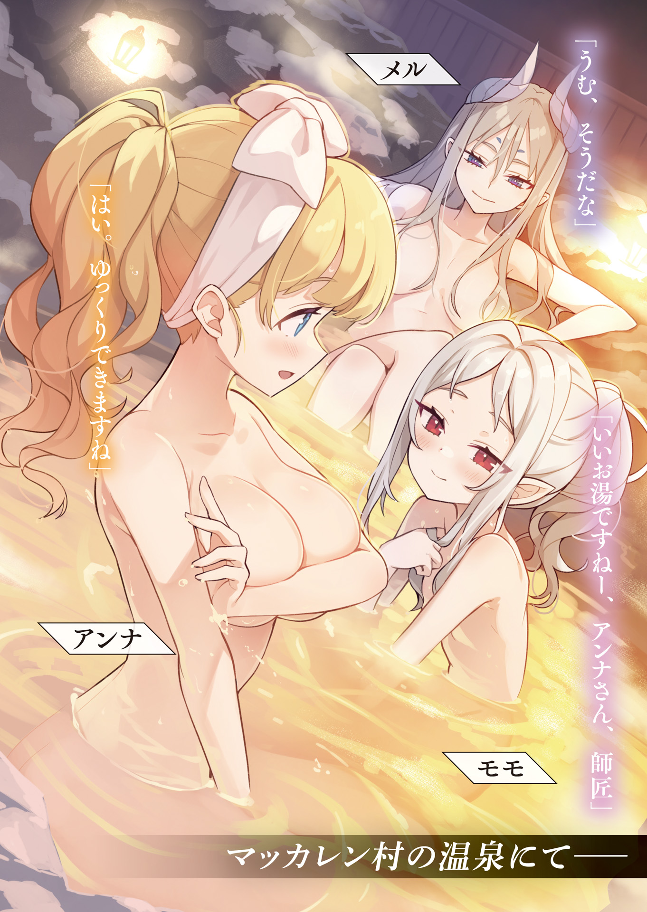

◇勇者アベルの視点◇
マコトさんと
僕の修行の進捗は芳しくない。祈っても祈っても、
「はぁ……」
僕は気晴らしに木刀で素振りをした。
「よしっ！ やった！」
近くでモモちゃんが、近距離の
「モモちゃん、
「いえ、まだまだです。呪文を詠唱しないと発動しないので、実戦では使えません。無詠唱じゃない魔法は役立たずだって、マコト様が言ってましたから」
「マコトさん、厳しくないかな？」
まだ幼いモモちゃんなら大したものだと思うけど、マコトさんは高い目標を与えている。
「このあと『冷静』スキルと『
「変わった修行だね」
攻撃魔法を覚えなくていいのかな？ 折角、強力な『賢者』スキルを保持しているのに。
「マコト様の話だと、まずは強い相手に出会った時に逃げるための手段を確立しておけと言われました」
「あんなに強いのに？」
マコトさんは変わってる。
「ですよねぇ、でもマコト様の言う通りにしておけば間違いないですから！」
モモちゃんは、マコトさんの言葉を信じ切っている様子だ。それが羨ましい。
「マコトさん、僕にも指示を出してくれればいいのに……」
ここを出発する直前、僕はマコトさんに何をすれば良いかを聞いた。返事は「任せますよ、アベルさんに俺から言えることはありませんから」というものだった。
僕を信頼してくれているんだろうか？ でも、僕はマコトさんに頼りたい。
「僕だってマコトさんに言われたことなら、何だって聞くのに……」
「…………」
僕がぼんやりしながら
「モモちゃん？」
「……なんで、女性の姿になってるんですか？」
「え？」
気がつくと
「マコト様のことを考えて、女性の姿に……やっぱりアンナさんは……」
「あ、あの、モモちゃん？」
「アンナさんは、マコト様のことが好きなんですか？」
「なっ!?」
モモちゃんの質問に、僕は思わず木刀を落としてしまった。
「やっぱり……」
「ち、違うよ、モモちゃん！」
慌ててパタパタと手をふるが、モモちゃんはこちらをじとっとした目で見つめる。
何か言い訳をしないと、と思っていた時だった。神殿に巨大な白い竜が飛び込んできた。
白竜様だ。マコトさんたちが帰ってきた？
僕は二人を出迎えようとそちらに視線を向けた時に気づいた。
マコトさんの姿が見当たらない。
「白竜師匠、おかえりなさい」
「白竜様、マコトさんは一緒じゃないんですか？」
「勇者くん、私と来い！ 精霊使いくんが魔王カインに襲われた！」
白竜様が、緊迫した声で言った。
「「えっ!?」」
僕とモモちゃんは、同時に顔を引きつらせた。
僕と白竜様は、急ぎマコトさんが待つ場所へ向かっている。
「モモちゃんを置いてきてよかったんですか？」
泣きそうな顔で、連れていって欲しいと言われたが白竜様はそれを許さなかった。
「仕方あるまい、相手は魔王だ。それより、
「そ、それは……」
僕は言い
偶然使えた魔法剣技。再び魔王カインに僕の剣技は通用するのだろうか？
「やつに攻撃が通じたのは勇者くんだけだ！ 急ぐぞ！」
「は、はい！」
僕は、新しく手に入れた魔法剣の
マコトさん……、どうか無事でいてください。
――それから数刻後。
「着いたぞ！ ここのはずだ」
緊迫した白竜様の言葉に、僕は警戒する。しかし、魔法によって所々地面が破壊された跡があるだけで魔王カインもマコトさんも見当たらない。まさか、既にマコトさんは……。
「あれを見ろ、勇者くん」
「……煙ですね」
白竜様の指差す方向に、煙が上っているのが見えた。あそこに誰かがいる。
「行きましょう」「気をつけろ」
僕と白竜様は息を潜め、ゆっくりと煙の上がっている方向に近づいた。
「この匂いは……」
白竜様が眉間にしわを寄せた。人影が見えた。あの後ろ姿は……マコトさんだ！
よかった、無事だった。
「おい、精霊使いくん。何をしている」
白竜様が不機嫌な声で言った。なぜか白竜様が怒っている。
僕はマコトさんの様子を見て、その理由に気づいた。
「ああ、メルさん、アベルさん。待ってました。これ食べます？」
そう言って振り返ったのは、近くの川で
僕は脱力して、その場に座り込んでしまった。
「師匠ー、無事ですか!?
「モモ、ただいま」
泣きながら抱きついているモモちゃんをマコトさんがなだめている。
「魔王は!? 魔王カインに襲われたって聞いたんですが！」
「ああ、
「す、凄い！
モモちゃんがぴょんぴょん飛び跳ねている。
そう、マコトさんは魔王カインと戦って怪我一つなかったのだ。
……僕が慌てて駆けつけたのはなんだったのか。
「あまり無茶をしてくれるなよ、精霊使いくん。私は疲れたので休む」
「メルさん、ありがとうございました」
不眠不休で駆けつけた白竜様は、疲れた声で寝所へ向かった。
「それじゃあ、モモの修行の成果をチェックしようか」
「ふふふ、見てください師匠。詠唱有りなら
「おお！ ナイスだ、モモ！ これで魔王戦の戦略が増えるな」
「もっと褒めてください！ あとぎゅーってしてください！」
「よしよし」マコトさんとモモちゃんが、いちゃついている。元気だなぁ……。
僕は白竜様の背中に半日乗っていただけで、疲れたのに。
少し仮眠を取ろう。僕も白竜様が休んでいる寝所で休憩をした。
目を覚ますと暗くなっていた。
寝所のベッドで、白竜様やモモちゃんが寝ているのが見える。
マコトさんの姿はなかった。僕は神殿を出て、マコトさんを捜した。
（……いた）
数千の水魔法で作った
「アベルさん、起きました？」
こちらが死角になっているはずなのに、マコトさんから先に声をかけられた。
「さっき起きました。あとこの姿の時はアンナと呼んでください」
最近の僕はずっと天翼族の姿をしている。僕はマコトさんの隣に座った。
「今日は来てもらって、ありがとうございました、アンナさん」
「僕は何もできなかったですよ、マコトさん」
僕が到着した時、魔王カインの姿はなかった。そして、そのことに僕はホッとしてしまった。相手は、
「ああ、そうだ。アンナさんに言っておくことが」
「は、はい。なんでしょう？」
何を言われるのかと、緊張で背筋が伸びた。
マコトさんが言うには、七日後に海底神殿という場所で修行するらしい。
「あの……修行は
「ここは水が少ないですから。どうせなら、水が多い場所のほうが鍛えられるんですよ」
事もなげにマコトさんは言った。修行のために、わざわざ
「一年も時間がありますからね。しっかり修行しないと」
マコトさんはワクワクとした目で、楽しそうに語っている。
ああ……、マコトさんがまた遠くに行ってしまう。
この人は、本当にじっとしていない。僕はそれを待っているだけになってしまう。
「あの……マコトさん。相談を聞いてください」
気がつくと、僕はマコトさんの服を
「マコトさん……僕の話を聞いてください」
息がかかる距離で、アンナさんに詰め寄られた。
その切羽詰まった表情に俺は、ただならぬものを感じた。
「どうしたんですか？ アンナさん」
俺の最優先ミッションは『勇者アベル』である。
太陽の神殿で安全に修行できるからと心配していなかったが、実は何か問題が起きているのだろうか？ 俺はそっと首飾りを握った。
（……イラ様？ 聞こえますか？）
（聞こえてるわ。勇者アベルに問題が発生したようね）
（これから話を聞き出します。相談させてください）
（任せなさい）
流石は女神様だ。頼れる。
「マコトさんは、海底神殿へ行ったらしばらく戻ってこないのですよね？」
アンナさんが言ってきたのはそんな言葉だった。
「定期的に戻ってきますよ。モモは俺の血を飲んだほうが調子が良いみたいなので」
「……モモちゃんのため、ですか？」
「え？」どういう意味だろう？
「僕のことは……気にならないのですか？」
「えっと……」
「マコトさんは、海底神殿に行っている間ここを離れるんですよね。僕のことは気にしてくれないんですか……」
「も、
「アンナです」
「アンナさんのことも、気にしてますよ」
「だったら！ 僕も一緒に連れていってください」
「そ、それは……できません」
なんせ、魔王カインが一緒なのだ。絶対に連れていけない。
「どうして……ですか？ 僕のことはどうでもいいんですか？」
「…………」
ヘルプ！ 助けてください！
（ねぇ、
はい、イラ様。どーすればいいですか!?
（抱きしめて、キスしてあげなさい）
………………は？
（アンナちゃん、ちょっと精神的に不安定になってるみたいだから慰めてあげなさいよ）
あの……勇者アベルって男ですよ？
（今は女の子よ。細かいことは気にしないの）
こ、細かいかなぁ……。あとアンナさんの見た目は、ノエル王女に
しかし、勇者アベルが精神的に不安定なら何とかしないといけないのは確かだ。
「アンナさん」
「は、はい……」
俺は彼女の手を両手で摑んだ。
「今日はゆっくり休んで明日は一緒に修行しましょうか。光の勇者スキルを鍛えれば、魔王なんて余裕ですよ」
「そ、そうでしょうか……？」
なんせ千年後の『
（高月マコト……、千年後の『光の勇者』スキルは、
え？ 桜井くんのスキルのほうが強いんですか？
（そりゃ、最新バージョンのほうが強いに決まってるでしょ）
そ、そんな……。勇者アベルの『光の勇者』スキルは旧バージョンだった……。
「マコトさん、どうかしましたか？」
固まってしまった俺の顔を、聖女アンナが心配そうに
「なんでもありません、今日はもう休みましょう」
「僕は起きたばかりなんですが」
「いいから、いいから」
「えっ、ちょっ、マコトさん。あの、そんな強く押さなくても……」
アンナさんをベッドに押し込み、俺も隣のベッドに横になった。俺は天井を見つめながら、明日からの修行について思い巡らした。妙案は浮かばなかった。
――翌日。俺は勇者アベルと一緒に修行することにした。
といっても、俺には勇者スキルのことはわからないので、手探りだ。
参考にするのは、千年後の『光の勇者』スキル所持者である桜井リョウスケくん。
俺の
（つってもどっちも一撃必殺だったからなぁ……）
あまり参考になる記憶ではない。わかっているのは、太陽の光が重要であるということくらいか。洞窟の中や、暗闇の雲の下では十分な威力を発揮できないスキルだったはずだ。
「アベルさ……」
「アンナです」
「アンナさん」
「はい！」
ニコニコと剣を構える
「太陽の光を、
「えっと……やってみます」
むー、と難しい顔をしてアンナさんが剣を強く握る。ズズズズ……、と膨大な
「何事だ？」
「敵襲ですか!?」
「どうですか!? マコトさん」
「うーん……」
「
「アンナさんの剣、怖いです……」
白竜さんやモモの表情から察するに、アンナさんが持っている魔法剣は相当なものなのだろう。しかし……。
「虹色じゃないなぁ……」
魔王カインを斬った時、勇者アベルの魔法剣は七色に輝いていた。
確か、桜井くんが魔王ザガンを倒した時も同様だった記憶がある。
「精霊使いくん、虹色に輝く魔法――『全属性』魔法は神の領域だぞ」
「ええ、知ってますが……光の勇者スキルだけは、それが可能なんですよ」
「あの……僕は知らないんですが。なぜ、マコトさんが僕より詳しいんですか？」
あの時の桜井くんは……。
「アンナさん、天使を召喚できませんか？」
桜井くんが魔王ザガンを倒した時、天使の力を借りていたはずだ。
まずは、そこから始めるのがよいのではなかろうか？
「「「は？」」」
が、俺の提案に他の三人は、ポカンと大きく口を開いた。別に、変なことは言ってないはずだけど。女神様の力を借りるよりは、簡単だろう？ なにより……。
「俺も一応、
俺が神器を取り出し、
「馬鹿者！ やめろ、精霊使いくん！ その
「えぇ……、その辺りにいる羊を
「罰当たりだ！」
怒られた。実物をアベ……アンナさんに見せたかったんだけど。
「マコトさん、天使を召喚できるのですか!?」
「違うぞ、勇者くん。こいつがやろうとしたのは生贄術という他者の命を代償に、己の欲望を満たす邪法だ。本来なら神器と神級術式が
「ここにとある女神様が創って、
「なんでそんな神話時代の宝具を持っているのだ、精霊使いくんは！」
白竜さんに
（祈りなさい。アンナは
（祈っても返事がないみたいですよ？）
（困ったわね……、多分、他のことで手一杯になっているんだと思うけど……。アルテナ姉様の担当は、この太陽系全体だから……）
（ひ、広すぎません？ ちなみにイラ様は？）
（私の担当は……、この大陸だけよ）
全然違う！ 同じ女神様でも、力に差があるというのが
……ノア様って、
（だから、言ったでしょ。私じゃノアの相手はできないの。で、問題のアンナちゃんの相手をちゃんとしたげるのよ？）
（了解です、イラ様）
俺は、
「アンナさん、太陽の光を使った魔法剣の修行と、
「マコトさん……わかりました」
俺の言うことに、大人しく頷いてくれるアンナさんだった。そういえば、
（のんびりいくか……）
俺は焦らずじっくり修行することにした。
さらに数日後。俺とアンナさんは一緒に修行したり、モモの魔法の習得度をチェックしたりした。そして、いよいよ魔王カインとの約束の前日。白竜さんに送迎をお願いした。
「じゃあ、行ってきますね」
「マコト様～、早く帰ってきてくださいね」
「マコトさん、お気をつけて」
モモとアンナさんに見送られ、俺は
◇
「こちらで合っているのか？」
「ああ、こっちで間違いない」
俺の隣では、魔王カインが不安そうな目を向けている。表情がわかるのは、
今は端整な素顔を
服装を整えれば、ホストかモデルにしか見えない。
俺たちが乗っているのは、魔王カインの騎竜である『忌まわしき竜』。
相変わらず眼球が沢山あったり口が沢山あったりと気持ち悪い姿ではあるが……、よく見ると
（
（ないわー）
まあ、俺も無理があるなぁ、と思いながら言いましたけど。
ちなみに、白竜さんに送迎してもらった日とカインとの待ち合わせ日は、一日ずらしておいた。間違っても鉢合わせをしないように。
一日待って、無事に魔王カインと俺は合流ができた。現在の俺たちは、西の大陸を出て海底神殿の近くにある『ハーブン諸島』という場所を目指している。
場所は『
「我が王……、ご注意ください」
俺の後ろには
そんなに心配する必要はないと思うけどね。
「そろそろ目的の島だな。まずは、野営地を決めようか！」
「ああ……」
テンションの高い俺と違って、魔王カインの返事をする声は低い。
「どうかした？ カインハルト」
「お前は、気軽にその名をっ！……まぁ、良い。ノア様はお前の言葉を信じても良いとおっしゃったのだ……。私はノア様のお言葉に従う……」
どうやらノア様は俺とカインが海底神殿を目指すことには賛同されたようだ。
そして、俺の正体をあっさり見破ったらしい。
「
「まあね」
「私が今までノア様のためにやってきた布教活動は無駄であったと……」
「……言いづらいけど、……残念ながら」
布教活動ってか、ただの脅迫だったしなぁ。どのみち、神界規定によってノア様の信者を増やすことはできない。千年後のノア様は、邪神として
それが魔王カインにとってはショックな情報だったらしい。
「まあ、いいじゃないか。俺たちでノア様を助け出せれば、チャラだよ」
「う、うむ……」
暗い表情の魔王カインに俺は明るく話しかけ、目的地までノア様について会話した。
――ハーブン諸島。
千年後の世界においては、各国の王族・貴族が別荘を構えるリゾート地である。
が、現時点では無人島だ。数は多くないが魔物も住み着いている。俺たちは見晴らしが良い場所に、簡易な拠点を用意した。
「さぁ、海底神殿に行こうか！」
「今からか!?」
俺が出発を提案すると、カインに驚かれた。今回の遠征は二週間を予定している。長期間、モモと勇者アベルを放置しておくのが心配だからだ。なるべく時間は無駄にしたくない。
「だって、まだ昼過ぎだし」
「し、しかし急過ぎないか？」
竜を使って運んでくれたのは魔王カインだ。疲れたのだろうか。
「ま、それなら俺一人で下見をしてくるよ」
「一人でだと!?」
「ちゃんと戻ってくるから」
「いや……私も同行しよう」
結局、一緒に行くことになった。カインの騎竜に拠点を守らせ、俺たちはザブンと海に飛び込んだ。ハーブン諸島の周辺は、暖かい熱帯性気候だ。
海の中には豊かなサンゴ礁と、色とりどりの魚たちがゆったり泳いでいる。
平和だ。俺と魔王カインは、ゆったりと海中を泳ぎ『海底神殿』のある方向を目指した。ふと、隣を見て気になった。
「泳ぎづらくないのか？」
俺は海中でも全身
「…………」「もしも～し？」
カインが口をパクパクさせているが、聞き取れない。俺は仕方なくカインの腕を
「聞こえる？」
「ああ……、おまえはよく水中で会話ができるな」
「海底神殿に挑むんだから必須じゃない？」
「泳ぎや水中呼吸はともかく、水中で会話する魔法など初めて知った」
「そっか。ところで、水中で鎧着てるのは不便じゃない？」
「無用な心配だ。この鎧はノア様より賜った神器。どこであろうと不便はない」
「なるほどね」
まあ、神器が魔王カインの最大の武器であり防具なので、外されると戦力半減なので助かるのだが。ただ、困っている点は。
「スピード上げるよ」
魔王カインの泳ぐスピードが遅い。さっさと海底神殿へ向かう入り口である『
俺は魔王カインの腕を摑んだまま、水魔法・水流を使って一気に加速した。
「お、おい！」
「舌
「待っ」
近くを泳いでいた魚が、一斉にこちらを振り向くのを感じたが、次の瞬間には周りの生物を置き去りにして俺たちは一気に駆け抜けた。
「お、おい！ なんだ今のスピードは。飛行魔法よりも速く水中を進めるものなのか……？」
魔王の口調が弱々しい。
「情けないですねぇ、あの程度で」
「悪い、カイン。次はもう少しゆっくり進むよ」
「あ、ああ……、そうしてくれ」
ノア様の信者という立場では、唯一の仲間なので、ディーアよりは優しめに対応をする。
といっても、ここから先は深海へ潜っていくだけだ。俺たちは暗い海の底へ向かって、ゆっくりと降りていく。水温は下がり、
ほどなくして太陽の光が届かない、完全な闇の世界になった。
『暗視』スキルと『索敵』スキルで、周辺を警戒する。
この辺りの海は
「我が王、前方に注意してください」
「あれは……クジラか。大きさが船くらいあるけど」
「あちらから
「この距離なら大丈夫だろうけど、一応警戒しておこうか」
「お前たち、
俺と
「視えてないの？」
「兜があれば……視える」
気まずそうに言われた。『暗視』スキルは使えないらしい。
「兜をつけて」
「ああ……わかった」
魔王カインは思った以上に、
その後、「な、深海の魔物はこんな巨大なのかっ!?」とか「危険じゃないのか！」とカインが騒いでいたが、どの魔物も
もちろん、ここは目的地ではない。スタート地点だ。
「さて、海底神殿はあの先だな」
俺が指差したのは、深海の底をざっくりと裂いた割れ目だ。幅は数百メートル、長さは十数キロ。そこは、かつての
通称――『
ここから先は異界。星脈と呼ばれる星の力が
「さて、じゃあ少し下見に行こうか、カイン」
「ちょ、ちょっと待て！ 今日は下見に行くだけ、と言っていただろう!!」
「ああ、だから少しだけ
「話が違う！」
「まだ、一度も魔物にも襲われてないし」
「う、うむ……それは、そうだが……」
「じゃあ、乗り込もう！ ディーア、周りの警戒を頼む」
「はい、お任せを。我が王！」
俺の言葉に、
周辺の魔物は
――俺たちは大きな海底の裂け目に、ゆっくりと潜っていった。
（見られているな……）
数百を超える海の魔物たちが、来客者を観察しているのを感じた。『索敵』スキルから察するに、相手は海竜。つまりここは『竜の巣』だ。
「高月マコト……魔物が多いな……」
魔王カインが、俺の腕を強く摑んだ。
「竜の巣だからね」
「竜の巣だと！ ならば、先に攻撃を仕掛けなければ！」
「あっちから仕掛けてこない限りは、無理に戦う必要はないよ」
「しかし、それでは手遅れにならないのか!?」
「大丈夫、大丈夫」
『危険察知』スキルは、まったく反応しない。隣では、
「仮にも魔王なのですから、もっと堂々としては？」
「しかし、ここに住むのは魔王軍とは関係のない自然の魔物たちだ。私のことを魔王とは認識できない」
「と言っても、その鎧と剣さえあれば魔物なんて怖くないだろ？」
俺は言ったが、カインからの返事はなかった。まさか……怖いのか？
ゆっくりと下降していくと、深海のはずなのに明るくなってきた。
それは太陽の光ではない。壁面に埋まっている魔石が発光している。
最初は、ぽつぽつとした光だったのが徐々に数が増している。
さながら、夜空の星のようにキラキラと魔石が輝いている。比例するように、水中の
「
「ええ、我が王。精霊にとってここは住みよい場所です」
確かに、水の精霊の数が多い。
この調子なら、魔物にちょっかいを出される可能性も低いだろう。俺とディーアは、深海の景色を楽しんだ。
「なぁ、
魔王カインは、どうやら楽しくないらしい。こんなに綺麗な景色なのに。
しかし、今日はこれくらいでいいか。
「そろそろ上に戻ろうか」
「ああ！ そうしよう！」
「えぇ～、私はもう少しここに居たいのですが」
拠点に戻り、帰りに
「明日から本格的な探索だから、今日は早めに休もう」
「……楽しそうだな、高月マコト」
「そうかな？」
「ああ……私は、冒険というものを初めてやったがこれほど疲れるとは思わなかった」
そう言うと、魔王カインは鎧を着たまま横になった。
「なぁ、カインハルト。それはいくらなんでも
俺が言うと、魔王カインはきっと俺を
「
「いや、そういうつもりじゃなくて……、明日は『
そう言って、俺は水魔法の修行を開始した。
「おまえは……寝ないのか？」
「あとで寝るよ」
答えながら、水魔法で水の
もしかすると、海底神殿の近くであることも関係しているのかもしれない。
ふと上を向く。夜空の星が綺麗だ。
「…………高月マコト」
しばらく修行をしていると、名前を呼ばれた。
「どうかした？ カインハルト」
「……いや、なんでもない。……また明日に」
「ああ、明日はもっと奥まで探索しよう」
「…………」
俺の言葉に返事はなく、ほどなくして寝息が聞こえてきた。初めての海底神殿攻略に向けた冒険に、その夜はなかなか寝付けなかった。結局、俺が寝たのは明け方近くだった。
――こうして、
◇モモの視点◇
マコト様が行ってしまった。なんでも『海底神殿』という場所で、修行をするらしい。
ここのほうが安全なのでは？ と私は思うのだがマコト様は自分に厳しい人なので、より過酷な環境に身を置きたいらしい。
「はぁ……マコトさん……」
あちらではアンナさんが艶っぽくため息を
あれはただの恋する乙女だ。本人は
「チビっ子。上の空のようだが？」
白竜師匠がやってきた。
「ち、違います。練習しています！」
私は木魔法の詠唱を行う。
「木魔法・捕縛の
ばっ！ と木の根が八方に広がり、敵に見立てたカカシをぐるぐる巻きにする。地味な魔法だが、小さな竜ですら捕らえることができる魔法らしい。
「できましたよ！ 白竜師匠！」
「ふむ、
「やった！……でも、どうして攻撃魔法じゃないんですか？」
私は首をかしげた。マコト様が戦おうとしているのは、魔王。
恐ろしい敵だ。私を
「
白竜師匠が淀みなく答えてくれた。
「はぁ……なるほど」
「それにうちには『戦略魔法士』が居るからな。攻撃はやつに任せるのがよいだろう」
「戦略魔法士……？」
耳慣れない言葉に、私は首を
「かつて精霊使いをそう呼んでいた時代があったのだ。今は使われていない呼び名だが」
「マコトさんの話ですか？」
気がつくとアンナさんが、会話に入ってきた。
「白竜師匠、戦略魔法って何ですか？」
「都市、もしくは国そのものの破壊を目的とした魔法……、別名『無差別
「「え？」」
私とアンナさんは顔を見合わせる。とんでもなく物騒な名前が出てきた。
「子供、老人、関係なく全てを破壊する魔法だよ」
「ま、マコトさんはそんなことしません！」
「そうですよ、マコト様は優しい人です！」
私とアンナさんの反論に、白竜師匠はため息を吐いた。
「する・しないではなく『それしかできない』のだ。精霊魔法は細かい運用が困難だ。使ったら最後、敵味方を巻き込み全てを飲み込む……、そういう魔法だ」
「でも、マコトさんは私たちを巻き込んだりは……あ」
「
「……はい」
「でも、マコト様はあれ以来すごく気を遣ってますよ！」
私が言うと、白竜師匠は小さく
「その通りだ、精霊使いくんは私たちを巻き込まぬように精霊魔法を使う。あんな使い方はできないはずなのだが」
「やっぱりマコト様は
私が言うと、白竜師匠は難しい顔をした。
「我々の扱う魔法は所詮、『神の奇跡』の模倣。あれほどの力であれば、どこかの力のある神の加護を得ていなければおかしいのだが」
「マコトさんは、信仰する神はいないと言ってましたね」
アンナさんの言葉の重要性が、私はピンとこない。私も特に神様を信じていないから。
「それだけではない。天界に住まう女神様は、精霊魔法を嫌っている」
「女神様が……？」
アンナさんが不思議そうに
「精霊魔法を使うと、環境破壊が大き過ぎるからな。意図的に天災を呼ぶようなものだ。時代の流れと共に『精霊使い』の
「でも、マコトさんは
「そう言っていたな……」
白竜師匠は、わずかに眉に
「私は精霊使いくんが、この世界の人間ではないんじゃないかと思っている」
「この世界の人間ではない？」
「ど、どういうことですか……？」
「精霊使いくんと話していると、なぜかこの世界の常識に疎い。そして、突然変異したかのような異常な精霊魔法の使い手であること。数百年に一度くらいの割合で現れる異世界人の特徴に合致している」
「マコトさんが……」
「異世界人……？」
想像もしなかった言葉に、私は頭が追いつかなかった。
「私の勝手な予想だぞ？ 的外れかもしれん。気になるなら本人に質問すればいい」
「白竜師匠は、気にならないのですか？」
「気にはなるさ。だが、本人が何も言わないなら隠したいのかもしれんからな」
「むぅ」
知りたい。マコト様のことなら、何でも知りたい。
よし！ 帰ってきたら、色々質問してみよう。
そういえば、出会った頃によく読んでいた本を最近は読まなくなっていた。
最近は、修行の合間に文字を習っているから貸してもらってもいいかもしれない。それから毎日魔法の修行をして、マコト様の帰りを待った。
「待ち遠しいですね、アンナさん」
「うん、え！ いや……僕は別に……」
「いい加減、認めましょうよ。マコト様が好きだって」
「ち、違うよ！ 僕はマコトさんを尊敬しているけど、好きだなんて！」
「この前、寝言で言ってましたよ。マコト様のこと」
「へっ!? う、
「さぁ～？」
まあ、一回だけ「マコトさん……」って寝ぼけたアンナさんが言ってただけなんだけど。
慌てるアンナさんが面白かったので、詳しくは説明しなかった。
そして、やっとマコト様が戻ってくる日になった。白竜師匠が待ち合わせ場所に、迎えに行った。私はソワソワしながら、帰りを待った。
（帰ってきた！）
私とアンナさんは急いで迎えに行って、……マコト様の姿を見て言葉を失った。表情は暗く
いつも
「あの……マコト様……？」
私がオロオロしながら話しかけたが、何も答えてもらえず、マコト様は倒れるようにベッドに横たわった。マコト様ー!? 何があったんですかー!!
◇アンナの視点◇
「うーん……、やっぱあれはないわー……。あんなん、攻略できねーわー……」
マコトさんが、ベッドでうなされている。戻ってきてもう丸二日。ずっとあの調子だ。
「マコト様……、喉が渇いていませんか？ はい、水を飲んでください」
「ん……、サンキュー、モモ」
モモちゃんが
マコトさんは、なされるがままだ。
「ふふふ♡、
「助かるよ、モモ」
「いいんですよ～、マコト様はずっと無理してたんですから～よしよし」
モモちゃんが、マコトさんの髪を
モモちゃんが男を甘やかす女になってる……。あれでいいのだろうか？
「なんだ、まだあの調子なのか？ 精霊使いくんは」
後ろから
「白竜様」
「あれが一年後に魔王と戦おうと言っていた男か……、随分と情けないものだ」
「それは、マコトさんが海底神殿で恐ろしい存在と出会ったからだと……」
「わかっているが、そろそろ復活してもらわんとな」
そう言って白竜様は、マコトさんに近づいて……蹴った!?
マコトさんがゴロンとベッドから転がり落ちる。
「痛い」
マコトさんがぼやく。あんまり痛くはなさそうだ。
「白竜師匠！ 何をするんですか！」
モモちゃんが怒りの声を上げる。
「ええいっ！ 軟弱な。それでも私を力ずくで従えた男か！」
「……そろそろ起きます」
マコトさんが「んー」と伸びをしながら、ベッドから立ち上がった。
「あの……、マコトさん。一体何があったのですか？ 海底神殿で」
僕はおそるおそる尋ねた。実は、マコトさんのあまりの落ち込みように何があったかを詳しく聞けていないのだ。
「あー、それはですね～……」
マコトさんの口から語られたのは、とんでもない内容だった。
「神獣リヴァイアサンに
白竜様が、顎が外れそうなほど大きな口を開けて驚いている。
「マコト様、神獣とはそんなに恐ろしい相手だったのですか？」
「まあ、神獣もヤバいやつだったけど、それよりも問題がね……」
「問題？」
「申し訳有りません……我が王……」
マコトさんの隣にふわりと現れたのは、
いつもの傍若無人な振る舞いはなりをひそめ、小さくなっている。
「精霊魔法が……無効化される結界が張ってあるんだよ……」
「えっ!? じゃあ、
モモちゃんが聞くと、
「近づけないのです……、あれは
「はい、ストップ。ディーアは黙ろうか」
マコトさんが少し慌てた風に、
「えっと、じゃあディーアは役に立たないので、海底神殿は諦めるってことですか？」
モモちゃんの発言に、ディーアさんが「何をー！ このチビ！」とつかみかかる。
「本当のことでしょー！」
モモちゃんが応戦している。
「ケンカしない、二人共。海底神殿の攻略は続けるよ。……攻略方法は思いつかないけど。精霊魔法なしってのがきつ過ぎるんだよなぁ……」
マコトさんが大きくため息を
「待て待て待て待て待て待て待て！」
固まっていた白竜様が、慌てて会話に割り込んできた。
「せ、精霊使いくん！ わかっているのか!? 相手は神獣リヴァイアサンだぞ！ 神話時代に、神々の戦争で使われた『星間戦争』兵器だぞ！
その言葉に、僕とモモちゃんがキョトンとする。……せいかん戦争、という言葉は初めて聞いた。おとぎ話で聞いた『
「知ってますよ。イ……女神様に教えてもらったので」
マコトさんは、うんざりした顔で言った。
「神獣リヴァイアサンの能力は、大洪水によって、世界の全てを海に変える……らしいですね。『
「できると思っているのか!?
「
「いや、神獣リヴァイアサンを怒らせると世界が滅ぶのだが……。君は一体何を考えているんだ……？」
「大丈夫ですって、アレにはケンカを売りませんから」
「本当か……？ なら良いが」
白竜様とマコトさんの話に、僕はついていけない。ただ、マコトさんはそのとてつもない相手に対しても、目標を諦めていないのだけは理解した。
「さて、修行するかー。モモ、行こうか」
「えー、もっと甘えてくださいよー。ほら、膝枕しますよー」
「これ以上は寝てられないかなー。一週間分くらい
「あーあ、師匠がもとに戻っちゃいました」
「留守の間はどうだった？」
「ふふふー、見てくださいよ。バッチリですから、師匠は驚きますよ！」
話しながらマコトさんとモモちゃんは行ってしまった。
「やれやれ……」
白竜様は、安心したように神殿の椅子に腰掛けた。
自分でお茶を
「え？」
外に出て、二人の姿を見て僕はあっけにとられた。
「分身魔法！ そして
七人に分身したモモちゃんが、不規則に移動、もしくはテレポートをしながらマコトさんに攻撃をしかけている。
僕は目で追うのがやっと！ モモちゃん、いつの間にこんな魔法を取得してたんだ!?
が、そこからがすごかった。
「水魔法・
慌てる様子もなく、マコトさんが魔法を使う。
シュッと、水の捕縛魔法が出現して、七人のモモちゃん全員が捕まった。
「ぎゃー！ 全員同時に捕まった!? 完全に死角から仕掛けたのに！ 何で!?」
「さっきの攻撃は、なかなか良いね。焦ったよ」
「全然焦ってないじゃないですかー!! どうやったんですか！」
「３６０度視点と
「むぅぅぅ、マコト様を驚かせられると思ったのに！」
「驚いたよ」
「全然、驚いてない！ スカした顔も今のうちですよ、私の必殺技を見せてやります！」
「いいだろう。俺の『明鏡止水』は、神様でも崩せないからな」
「ちょっと海に修行に行って、怖い目にあったからって引き籠もっていたマコト様の平常心を崩すなんて、チョロいもんですよ！」
「それは言うな！」
会話をしながらモモちゃんが
「甘いですよ、チビっ子」
マコトさんの隣に現れた
それからも次々に、多彩な攻撃をしかけるモモちゃん。それを全て余裕で受け流すマコトさん。マコトさんは、モモちゃんの成長を見て楽しそうに相手をしている。
（あ、あれ……モモちゃんがすごく強くなってる……？）
マコトさんは言わずもがな。白竜様も
（マコトさんを心配している場合じゃなかった！）
このままじゃ、僕がお荷物になってしまう！
それから、必死で魔法剣や回復魔法の修行をした。
「……マコトさん、寝ないんですか？」
深夜になっても、水魔法の修行を続けているマコトさんに僕は声をかけた。
「昨日寝たので、今日は大丈夫ですよ」
「は、はぁ……？ そうですか」
冗談ですよね？ 本気で言ってるようで怖い。
「ふわぁ……、我が王、私は寝ますね～」
「ああ、おやすみ。ディーア」
早寝早起きの
「アベ……アンナさんの修行は、順調ですか？」
マコトさんに聞かれ、僕は「うっ」と言葉に詰まった。
どう答えようか考えた末、僕はマコトさんの隣に腰掛けた。
「アンナさん？」
戸惑った声で名前を呼ばれた。すぐ隣のマコトさんの肩に、少しだけ
「正直、行き詰まっています……」
マコトさんの肩に頭を乗せて、弱音を吐いた。
肩を抱き寄せてくれないかな、と思ったけどそれはしてもらえなかった。
でもマコトさんは、魔法の修行の手を止めて、僕のほうに顔を向けてくれた。
「メルさんから聞いた話だと、『光の剣』は発動できるようになったんですよね？」
「……はい、でも使用できるのはほんの数秒です」
僕は小さな声で答えた。
太陽の光が届く環境下で、ほんの数秒、一撃を与えられるくらいの時間しか持たない。
その後、もう一度発動するためにはしばらく時間がかかってしまう。正直、実戦で使えるとは思えない。が、マコトさんの考えは違ったようだ。
「十分ですね」
悪いことを
「十分？」
意味がわからない。たった数秒しか使えない魔法剣技が使い物になるはずがない。
「魔王の配下は、ジョニィさんたちに頑張ってもらって、側近の『セテカー』と『シューリ』は……メルさんと俺でなんとかするとして、問題は魔王か。
「あの、マコトさん……？」
「アンナさんは、『光の剣』が撃てるように準備だけしておいてください。魔王が
「……」
本気で言ってるのだろうか？ この人は。
「冗談ですよね？」と言おうとして気づいた。
その目はふざけていなくて、気負ってもいなかった。――その程度は、大したことはない。
マコトさんの目を見て、僕はそう感じた。この人は、一体何者なんだろう……？
これまで出会った誰とも違う。
魔王に支配されるこの世界で、マコトさんだけは僕たちと見ている世界が違うような気がした。
――トクン、と胸が高鳴った。
マコトさんがいない間、ずっとこの人のことを考えていた。
マコトさんが戻ってきて、彼のことをずっと目で追っている自分がいる。
でも、最近は泣かなくなった。マコトさんのことを考えると、気持ちが安らぐ自分がいる。
モモちゃんにからかわれて、それを否定してきた。でも、誤魔化すのは……無理みたいだ。
（魔王を倒したら……、僕の気持ちを……でも）
今は、自分の責務に集中しよう。僕にしか使えない魔法剣技――『光の剣』を使いこなす。
そして、育ての親である『火の勇者』の悲願である魔王を倒し、この大陸を人族の手に取り戻す。だから、それが終わったら――マコトさんに
◇
一年後。僕はモモちゃんと一緒に、可能な限り自分を鍛えた。
白竜様に魔法を教えてもらい、剣は『火の勇者』の教えを思い出し、合間で
モモちゃんは、どんどん実力をつけていった。
マコトさんは、モモちゃんの修行の相手をしたり、僕の相談相手になってくれたり、たまに『海底神殿』へ行ったりしている。
そして時が流れ――――魔王との決戦の日がやってきた。
俺たちは
「ジョニィさん。街の住人が増えましたね！」
俺は思わず驚きの声を上げた。
「うむ、
ジョニィさんが満足そうに
「わー、モモちゃん。久しぶり～。元気だった？ 大きくなったね！」
「
「あー、そうだったー。
あちらではモモと木の勇者さんが再会を喜んでいる。
「なぁ、おまえ……本当にアベルなのか？」
「アベルじゃなくて、アンナですってば、
「う、うーむ。
「言っておきますけど、この姿でも剣の腕は以前よりずっと強いですから！」
「ほう、では一つ実戦形式の稽古と行くか」
「いいですよ！」
あっちでは、土の勇者さんとアンナさんが剣士らしい会話をしている。
久しぶりに会う人たちは、みんな元気そうだ。
「
「うむ、息災であったか？」
「はい、我らの
「うん？ これから精霊使いくんは魔王と戦うつもりだから私も一緒に……」
「何を馬鹿なことを！ もしも竜王様の耳に届いたらどうされるおつもりですか!?」
「しかしだな……」
「どうか、考えをお改めください、
「その通りです。既に十分な義理は果たしたでしょう！」
「戻ってきてください！ 地上の争いに我々が巻きこまれる必要はありません！」
「
「…………うーむ」
あっちは少し立て込んでいるようだ。多分俺が原因だけど。
白竜さんには、この半年お世話になった。家族に心配をかけているようだ。
千年後に伝わる物語の聖竜様は、
魔王との戦いに、白竜さんをどこまで巻き込んでいいのだろうか。悩ましい……。
俺はすっかり様変わりした中層の地下都市を眺めた。
中層の地底湖にそって大小様々な露店が並んでいる。
そして、駆け回る子どもたち。みんな笑顔だ。ここって、本当に
かつて俺とルーシーが死にそうになりながら、魔物の群れに襲われた
「変わったに決まってるでしょ、馬鹿マコト」
「え？」
その声に驚き、ぱっと振り返る。
そこには、
「な、なぜ、ここに？」
「待っていたわ、
腰に手を当て、高飛車に言い放つのは
そして、きっと
「そういえばエステル殿は、マコト殿を待っていたのだったか。マコト殿、魔王と戦うのであれば、私に声をかけてくれ。準備はできている」
ニコリともせず、ジョニィさんは無造作に束ねた長い髪を揺らしながら離れていった。
腰に差している長い刀と、
なんというか、絵になる人だ。
「ありがとうございます、ジョニィさん」
俺が
「ちょっと、私を無視するとはいい度胸じゃない？」
「失礼しました、エステ……
「あんたに話があるからに決まってるでしょ。ちょっとこっちに来なさい」
そう言って、俺はイラ様に物陰へと引っ張られた。
――中層にある大きな滝の裏にある洞窟。
ここなら、秘密の会話にはぴったりだろう。
むかし、さーさんと再会した時のことを思い出した。
「何を感傷に浸ってるのよ」
「失礼を、女神様」
女神様の御前でしたね。
「ふん、心配だから様子を見に来てあげたわ！ 感謝しなさい。あなたが
「やっぱり歴史の改変が起きてますか……」
「そこは、あなたが心配することじゃないわ、高月マコト。それより、魔王との戦いはどうするつもり？ 勝算はあるんでしょうね？」
「任せてください、ばっちりですよ」
一年間、遊んでいたわけではない。が、イラ様はじとりと半眼でこちらを見つめた。
「どーだか、海底神殿に何回も挑戦してたくせに。うっかり死んだらどうするつもりだったのよ！ 結局、全部失敗してたじゃない」
「まぁ、結果は残念でしたが過程も大事ですよ。おかげで、あいつと重要な『約束』も取付けられましたし」
「まぁ……それは、確かに。よくあんなことを約束させたわね……」
「で、作戦を教えなさいよ。私がチェックしてあげるわ」
「ええ、いいですよ。まずは、俺が先行して準備を……」
「あのっ！」
「「ん？」」
俺と
「
「あら、白竜ちゃんじゃない」
乱入者は白竜さんだった。彼女の目は、大きく見開かれている。
仲間の
「神聖な
俺と
「えっとね、このことは……」
「誰にも言いません！ ああ、もう一度お会いできるとは……」
何事にも動じることが少ない白竜さんが、とてつもなく感動している。
そういえば、
そんなことをぼんやり思い出していると、瞳が潤んでいる白竜さんが俺のほうを見た。
「精霊使いくん、君は
「「え？」」
いや、違うんだけど。ノア様の使徒なんだけど。
「
そう言って白竜さんは去ってしまった。
「「…………」」
取り残されたのは、俺と
「あんた私の使徒になる？」
「なりませんよ……、そもそも使徒は別にいるんじゃないんですか？」
「いないわ。というか、
「禁止？」
それは初耳だ。でも確かに『勇者』や『
「『勇者』や『巫女』は、女神の声を聞けるだけなんだけど、『使徒』って姿まで
「精神に影響？」
「精神汚染……、簡単に言うと精神が錯乱するのよ」
そう言えば、そんな話をノア様から聞いたことがある。
「俺は平気でしたけど」
「それは、あんたがおかしいのよ」
「失礼ですね」
「どっちが失礼よ。さっき白竜ちゃんも言ってたでしょ？ あんたは女神に
「嫌だ！ 俺が跪く相手は
「へぇ、そう？ じゃあ、
「性格悪いな！」
「ふふふ、そのセリフで私の慈悲の心がなくなったわ！ 私の足を
ドＳだ！ ドＳ女神だ！
「いやだ！ 俺が足を舐めるのは
「あんた、変態なの……？ にしても、力弱いわね」
「やめろー！」
抵抗するも
「さぁ、捕まえたわよ。私に服従しなさい」
俺は
「くっ、殺せ！」
「ふふふ、観念するのね。高月マコト……」
そんな馬鹿なやり取りをしていた時だった。
「マコトさん……？」「マコト様……何をしてるんですか？」
俺とイラ様しか居ないはずの場所に、別の人の声が聞こえた。アンナさんとモモだった。
「「「「……………………」」」」
「ご、誤解だ……」「ち、違うの……」
俺と
「マコトさんの馬鹿～～～！」「マコト様のアホ～～!!」
アンナさんとモモは、走り去っていった。俺とイラ様は、ぽつんと取り残される。
「あんた、あの二人はパーティーの主力でしょ！ まずいんじゃない!?」
「
「誰だってうっかりはあるわよ！」
「あんた、神様だろ！」
「今は降臨しているから人寄りなのよ！」
俺と
決着はつかなかったので、走っていった二人を追いかけることにした。
誤解は解けた…………と思う。
こうして、魔王との戦いの準備は着々と（？）……進んでいった。
◇モモの視点◇
「あの、マコト様。本当に私たち二人だけで良いのですか？」
私は不安をにじませた声で尋ねた。
白竜師匠やアンナさん、
向かう先で待ち受けるのは、この大陸を支配する魔王なのだから。
「
肝心のマコト様は、憎たらしくなるほど
「どこが良い天気なんですか……。大雨ですよ？」
雨音はうるさいし、視界も悪い。これを良い天気と言える神経がわからない。
「この雨は
「わかってますよ、ディーア」
ふわりとマコト様の隣から現れたのは、
「マコト様、なんで雨を降らせてるんですか？」
私が彼の腕に絡みつくと、反対側から
「ま、それは到着してから説明するよ。要は魔王城攻略の仕込みだから」
マコト様は楽しそうだ。これから魔王と戦うというのに。呆れるほどいつも通りだ。
「むぅ……、まぁ、それはわかりました。ただ、私が魔王と戦うのは駄目っていうのは納得できません！」
こちらについては、強い口調で訴えた。そう、あれほど頑張って修行したのに私は魔王との戦いは不参加だと言うのだ。そんなのってない！
「仕方ないだろ。
「でも……、だからって……」
「俺やアベルさん、メルさんはモモが敵に回れば戦えない。少なくとも、俺は無理だ。だから、今回のモモはサポートに回ってくれ。戦闘不能な負傷者が居たら、
「うぅ……、はい……わかりました」
私はしょんぼりと
「ふっ、我が王のお世話は私がしますから、チビっ子の出番はありませんよ」
「何をー！ 海底神殿ってところじゃ、役立たずだったくせに！」
「そ、それはっ!? 海底神殿以外なら、
「はん！ マコト様が一番行きたい場所は、海底神殿だって私は知ってるんだから！」
「う、うるさいー、このチビ。貧相な
「な!? あんたこそ身体が水でできてるんだから、なんにもできないでしょー！」
「ふふん、我が王と
「わ、私だってやろうと思えば……」
「はい、ストップ。魔物が出たよ、二人共」
言い争う私の口を、マコト様が塞いだ。私は慌てて、視線を前に向ける。目の前には、巨大な
「あんまり騒がしくするなよ」
「「はい……」」
怒られた私たちは、静かに頷いた。ちらっと氷漬けになっている魔物に目を向けた。
それにしても……、白竜師匠のもとで魔法の修行をしたからこそ、わかったことがある。
マコト様の魔法の発動は速すぎる。そしてさらに……。
私は、周りを見回した。空からは土砂降りの雨。なのに、私たちに雨は当たらない。
大粒の雨は、まるで生き物のように私たちを
地面だってそうだ。こんなに
理由はわかる。マコト様が、水魔法で雨や水を操っているのだ。
だから、私とマコト様は雨に
不規則に降る雨の水が、一粒たりとも私に当たらない。
そもそも、この雨すらマコト様の魔法なのだ。見渡す限り、どこまでも広がる雨雲。
一体、どこまでがマコト様の魔法なんだろう……？
わからない。どうやったらこんなことができるのか。
ただ少なくとも一つだけわかる。私は同じことができる気がしない……。
「モモ、どうかした？」
マコト様が心配そうに尋ねてきた。
「いえ……、にしてもこの雨を降らせている水魔法。なんて名前なんですか？」
「ん～、別に名前はないかなぁ。単に雨を降らせるだけなら、モモにだってできるだろ？」
「こんな広範囲には無理です！ それに、私たちだけ濡れないようにするのだって、複雑な術式が……」
「そんなの『当たるな』って思えば、勝手に水が避けてくれるだろ？」
「…………」
駄目だ、理解できない。白竜師匠に教わった魔法の概念が崩れる。
思ったらその通りになる？
もはや、それって人間が扱う魔法なのだろうか？ 神様の
私は、決して大きくはない、でも世界で一番安心するマコト様の背中を見つめた。
（……ついていかなきゃ、置いていかれないように）
何を考えているかよくわからない
◇アンナの視点◇
マコトさんとモモちゃんから遅れること三日。
僕たちは
その中を慎重に進む。率いるのは
他にも
さらには
その数は千名近い。間違いなく僕の知る限りでは最大の規模だ。
過去、これほどまとまった戦力で行動したことはない。
いつも、魔族の目から隠れ、僅かな人数でしか動けなかった。
だけど今回は違う。十分な休養を取り、戦力を整え、魔王に挑むことができる。
万全な状態で、挑戦ができる。
（
「霧が濃いな。これなら魔族に見つかる心配はないだろう」
「水の精霊たちが喜んでいる。相変わらずだな、マコト殿の精霊魔法は」
「これほどの大人数がどうやって魔王軍にバレずに近づくのかと懸念していたが……、大森林を覆い尽くすほどの霧を発生させるとは……」
「だが良い手だ。天候を自由に操作できるマコト殿あっての手ではあるが」
「この規模で天候を操る精霊使いは、彼だけだよ」
「エルフ族も精霊魔法の使い手は多いが……、マコト殿は別格だな」
白竜様とジョニィさんがマコトさんの魔法を褒めている。でも……。
「あの、お二人はマコトさんとモモちゃんが心配ではないのですか？ 二人だけで、魔王城へ向かっているんですよ？」
本当は僕もついていきたかった。でも、マコトさんに許してもらえなかった。
「アベルさんは、魔王を倒す役目だからみんなと一緒に来てください。道中も戦わないこと。白竜さんやジョニィさんを頼ってください。いいですね？」
「は、はい……」
普段は、僕に対して細かいことを言わないマコトさんが珍しく厳しい口調で注意をしてきた。どうして、そこまで僕に言うんだろう？
心配してくれているのかな……？
いや、違う。心配なのは、マコトさんとモモちゃんだ。
魔王城の近くの魔物は強い。もしも、ということも考えられる。
「精霊使いくんの心配？ するだけ無駄だ」
「水の精霊を見ればわかる。彼にとっては散歩程度だろう」
白竜様もジョニィさんも、まったくマコトさんを心配していなかった。
むしろ自分のことを考えておけと注意された。
うぅ……。やっぱり、一緒についていけばよかった。
数日後。遠くにそびえる巨大な黒い城が見えてきた。
――魔王ビフロンスの居城。
前に来た時は、パーティーのリーダーだった
でも、今回は……。僕が緊張した面持ちで、小さく深呼吸をした時。
「なっ！ なに、あれ……？」
「おい、ジュリエッタ。声が大きい」
「ほう……、あれは精霊使いくんの仕業だな。作戦とはこれのことか」
「城攻めの基本だが……、大胆なことをする」
他の人のざわつく声が聞こえる。何かあったのだろうか……？
会話をしている人たちのほうへ近づいた。目を凝らして、魔王城のほうを見てみると……。
「…………え？」
間の抜けた声が、僕の口から出た。
（う、
そこにあったのは――――――――巨大な湖に水没した魔王城だった。
僕は
なに……これ……？
魔王城は、盆地に建っていたわけではなく平野に在ったはずだ。それが、どうして城下町は水に沈み、魔王城の下層も水没してしまっているんだろう……。
「おや、皆さんおそろいですね！」
シュインと、軽やかな音を立てて空中に小さな女の子が現れた。
モモちゃんだ。すっかり
「こ、これってマコトくんがやったの？」
「なかなか面白いことをしているじゃないか。これは精霊使いくんの仕業だろう？」
ジュリエッタさんと白竜様の質問に、モモちゃんが笑顔になった。
「
「「「「「……」」」」」
モモちゃんの言葉に、僕らは絶句する。たった二人で、魔王軍を分断したというのだ。
「水を
ジョニィさんだけは、冷静に状況を分析しているみたいだ。
彼だけは落ち着いている。魔法の名手にして剣の達人。
しかも、戦略にまで通じている……ジョニィさんも不思議な人だ。
「これならば……」
「待って！ 前回も魔王城の近くまで来た時、魔王カインに強襲されたわ……。油断しちゃ駄目」
木の勇者さんの言葉に僕は、はっとなる。そうだ……、あの時はそれで僕らは壊滅した。
あの黒い
「それなら、心配いらないわ」
誰かの声が響き、皆が振り向く。
「エステル様？」
それは
白竜様は、「危険です！」と反対していたが、「問題ないわ」とエステル様はついてきた。
彼女はきっぱりと「魔王カインは現れないわ」と告げた。
未来予知によって、それがわかるということだった。
「それだけじゃない。『石化の魔眼』を持つ魔王の側近セテカーも不在よ。
「「「「「おおっ！」」」」」
その声に、僕たちは沸いた。す、凄い！
本当に、こんなにうまくことが運んで良いのだろうか？
「あの……そこまで断言してしまってよいのですか……？」
「な、なによ。白竜ちゃん、私を疑ってるの!?」
「い、いえ！ そんなことはないのですが……。未来予知で『１００％は有り得ない』というのが運命魔法の常識ですよね？ かつて、イラ様自身がおっしゃった言葉ですが……」
白竜様とエステル様が、こそこそ会話しているのが聞こえた。
運命の
そして、次は
僕らと会うのは二度目……のはずなのに、マコトさんとはやけに仲が良い。
「まぁ、信用しなさい。この情報は確かよ……、てかあいつが約束させたからだし……」
「何かおっしゃいましたか？」
運命の巫女様の小さな
「な、なんでもないわ！ それより、
確かに、マコトさんの姿がまだ
「ここですよ」
「わっ!?」僕は思わず、尻もちをつきそうになった。
突然、霧の中から僕の隣に人が現れた。いや、霧が人に成った。
「マコトさん！ 驚かせないでください！」
「あぁ、ごめん。アンナさん」
本当に驚いた。マコトさんは、悪びれた様子もなく僕に笑いかけた。
元気そうだ。たった数日ぶりなのに、彼の顔を見るとほっとした。
「精霊使いくん、随分変わった魔法だな？ どうやったんだ？」
「水魔法で
「あんた、それ
興味深そうに話す白竜様と、
「待ってる間、暇だったのでモモに教えてもらったんですよ。それにしても随分、大勢が来てくれたんですね。ジョニィさん、協力ありがとうございます」
「かまわん。ここに居るのは、全員魔王と戦う覚悟はできている。……マコト殿の合図で、突撃する。君に命を預けよう」
ジョニィさんの言葉に、場の空気が変わる。僕たちは大きく
これからいよいよ魔王軍との戦いだ。どうしたって、緊張感が走る。
「ええ、その前にいくつかやることがあるので……。木の勇者さん、頼んでおいたものはありますか？」
「えっと、マコトくん。こんなのでよかったの？」
ジュリエッタさんが、マコトさんに木でできた何かを手渡した。あれは……木のお面？
「お、格好いいですね。ありがとうございます」
「もっと時間があれば、良いものができたと思うのだけど……」
「十分です。顔が隠せれば」
マコトさんは、動物の顔の形に彫られた仮面をつけた。
「どうだ、モモ？ ディーア？」
「わー、格好いいです！ マコト様！」
「あぁ……、素敵ですわ、我が王」
マコトさんの言葉に、即答する二人。
（ええ～……）
正直、僕には微妙に映った。お面なんかつけずに、そのままのほうが格好良いのに……。
モモちゃんと、ディーアさんの目、曇ってない？
「うわ、だっさ。何よそれ、高月マコト」
遠慮のない声は、エステル様のものだった。
「あのですね、イラ様。これから挑むのは魔王ビフロンスですよ？ てことは、俺の顔が魔王に見られるとまずいんじゃないんですか。一応、イラ様に配慮した結果なんですけど？」
「私はエステルよ！……あー、確かにね。そういう理由なら仕方ないわね」
「それに、
「ダサいって言ってるでしょ。それに狐面を使った儀式は、
「あぁ、ヤキモチですか」
「違うわよ！」
「蹴らないでくださいよ。下着見えましたよ！」
「見るなら、金払いなさい！」
「理不尽だ！」
エステル様とマコトさんが、またイチャイチャしてる……。
会話の内容も二人にしかわからないもののようでズルい。
「それで、そのお面をつけるのがやること……なのか？」
「いえ、違います。折角なのでもう少し魔王軍の戦力を減らしておこうと思いまして。……そろそろ来ますよ」
「精霊使いくん……、君はもう少し説明をだな……、ん？」
白竜様が何かに気づいたように、上空を見た。つられて何人かが上を見上げる。
「「「「「え？」」」」」
そして、僕の目に飛び込んできたものは――小山程の大きさの氷塊が、黒雲を突き破る姿だった。
「なななななっ、あ、あれは何ですか!? マコトさん！」
「
うろたえた僕の質問に答えてくれたのは、
「なんという巨大さだ……、こんな魔法は見たことがない……」
「ま、無理もないわね、白竜ちゃん。
エステル様の言葉に、僕たちはぎょっとする。確かに、魔王城と距離は離れているとは言えあの大きさなら、破壊の余波はここまで届きそうだ。
「まぁ、見ててくださいよ。
涼しい声でマコトさんは答え、その右手を前に突き出した。
「
マコトさんが呟いた途端、ズシンと空気が重くなった。
（い、息がっ……苦しい！）
呼吸が止まりそうになるほどの威圧感を持った
見ると
――精霊の右手。
マコトさんの声が響き、彼の右腕全体が青く光り、透き通っている。
「自分の体を霊体化している……のか？」
「正確には精霊化ね。あれも禁呪なんだけど……、私は見なかったことにするわ」
白竜様とエステル様の会話が聞こえた。僕らの周りには、濁流のように
くらくらする……。
続けて、彗星自身も砕けようとしている。
「衝撃波が来るぞ！ 備えろ！」
ジョニィさんの声に、皆慌てて身体を低くする。僕もそれに倣った。
「大丈夫です、ジョニィさん。こっちには衝撃は来ませんよ」
マコトさんが軽く笑い、青く光る腕をすっと、上に上げた。
――水魔法・行雲流水。
次の瞬間、彗星の爆発は空に向かって広がった。
「「「「「「「え？」」」」」」」
その場にいた、全員――エステル様を除く全員があっけにとられた。
白竜様やジョニィさんですら
空が真っ赤に染まり、鼓膜が破れるほどの爆音が響く。
目の前が真っ白になり、すぐに暗転した。
それは、僕が目を閉じてしまったからだと気づく。
小さく深呼吸をして、僕はおそるおそる目を開いた。
（あ……）
僕は夢を見ているような心地で、その光景を眺めた。
魔王城は、潰されている。場違いに、爽やかな風が吹いている。
空は『快晴』。地上から青空を見るのは、生まれて初めてだった。
「彗星爆発の余波を利用して、暗闇の雲を吹き飛ばす。悪くない手ね」
言葉を失っている僕らをよそに、腕組みをした
「うまくいきましたね。ところで未来予報はいかがですか？
お面をつけたマコトさんの表情はわからないが、その声色は実に楽しそうだった。
「天気予報みたいに言うんじゃないの、高月マコト。ん～……、暗闇の雲は、半径数百キロ範囲まで消え去っているようね。もとに戻るのは半日以上先。流石の私も魔王に同情するわ。街を水没させられ、城は彗星で破壊されて、
マコトさんとエステル様の会話が、僕の耳を通り抜けていった。
「じゃあ、準備は終わったので魔王を倒しに行きましょうか、アンナさん？」
「は、はい……」
僕はぎこちなく頷いた。そして思った。
……もうマコトさん一人でよくない？
◇高月マコトの視点◇
――ズキン、と精霊化した腕が痛んだ。
表情に出さないよう『明鏡止水』スキルを使ったが、よく考えると今はお面を
これなら無理しているのがバレる心配はない。
「こら」
コツンと、誰かに頭を
「どうしましたか？
「平気なふりをするんじゃないの。寿命をほとんど使い果たしたわね」
「「「「え？」」」」
近くにいたアンナさんやモモだけでなく、周りの人たちにまで聞かれ、ぎょっとした顔をされた。
「精霊魔法は大規模過ぎて、混戦に使えませんからね。やるなら先制攻撃しかないんで」
「にしても限度ってもんが……、まぁ、いいわ。あんたはもう休んでなさい」
ふん、と腕組みをした
「そもそも、魔王はまだ生きているのか……？」
「あれを食らっては無事じゃないだろう……」
「マコト殿の魔法で倒したのでは？」
そんなざわめきが聞こえた。皆、随分と楽観的だな。
「魔王は無傷よ」
「彗星ぶつけたくらいじゃ倒せませんよ」
かつて見た
「マコトの言う通りよ。ここからが本当の戦いよ。みんな、気を引き締めなさい」
運命の女神の
「あの……、マコト様。私はどうすれば？」
モモに、くいくいと袖を引っ張られた。
「モモはここで待機。白竜さんたちも残るから、一緒に行動してくれ」
「私は一緒に行かなくていいのか？」
俺が白竜さんにモモをお願いすると、逆に質問を返された。
「白竜さんの立場的に、表立って魔王と敵対するのは良くないでしょう？」
「うむ……、しかし」
「色々助けてもらってますから。十分です」
悩む様子を見せる白竜さんに、俺は言い切った。
もし、ここで
それを俺が強いるのは気が引けた。もっとも、本来の歴史の白竜さんは、魔王カインに仲間を殺されたせいで、完全に
勇者アベルを覚醒させるのもカインだし、あいつホンマに戦犯だな……。って、
「マコト殿、魔王城には全員で乗り込むのか？」
ジョニィさんに問われた。俺は
「現在の魔王軍は、水攻めで出払っています。しかし、先程の
「魔王軍の大半は、
俺の言葉に、イラ様が補足してくれた。そう、魔王軍を分断した上で太陽の光で弱体化させる。この作戦に抜かりはないはずだ。
「わかった。仲間には指示を出しておく。が、私はマコト殿についていくぞ。長年、一族の者たちを苦しめてきた魔王に一太刀浴びせねば気が済まん」
どうやら、ジョニィさんは俺たちに同行するつもりのようだ。
……彼も勇者アベルの『真の仲間』だから、問題ないか。
土の勇者さん、木の勇者さんら勇者は俺たちと一緒に魔王城へ乗り込む。
「あんた本当に行く気？」
イラ様は、俺が魔王城へ乗り込むのは反対のようだ。
「
「そ、そうです！ 私が王を守ります！」
「僕も居ます！ 魔王からマコトさんを守りますから！」
俺の言葉に、ディーアとアンナさんが続ける。
事前準備は、万全にしてある。問題ないはずだ。なにより――
（救世主アベルが魔王を倒す瞬間……、見逃せるはずがない！）
「聞こえてんのよ」
ぽかりと叩かれた。心を読まれたらしい。
「……死ぬんじゃないわよ」
あんたの未来は
「幸運を祈ってください。では、皆行きましょう」
俺の言葉に、アンナさんを始めジョニィさん、勇者たちが頷いた。
こうして、魔王討伐隊が移動を開始した。
魔王城の周辺は水没しているため、俺たちは飛行魔法で近づいた。
飛行魔法が使えない俺は、アンナさんに運んでもらっている。
「マコトさん、落ちないように気をつけてくださいね」
「そんなにひっつかなくても落ちませんよ」
「駄目です！ ほら、もっとしっかり僕に
アンナさんは過保護だ。
「近くで見ると更にボロボロね～」
「魔王軍の魔物は見当たらんな」
木の勇者さんと土の勇者さんの会話の通り、俺の
「どこから侵入しますか、マコトさん？」
「入り口からにしましょう」
「でも、入り口は水没して……」
アンナさんの言葉が終わる前に、俺は
「わかりました、我が王」
すると、水が二手に分かれゆっくりと道ができた。
「アンナさん、行きましょうか」
「は、はい……」
俺たちに続いて、ジョニィさんや土の勇者さんたちも城の入口前に降り立った。
竜族でも通れそうな巨大な金属製の扉だ。それがしっかりと閉ざされている。さて、どうやって開いたものかと考えていると。
…………ギギギギギギ、と巨大な扉がゆっくりと開く。
「入れということのようだな」
ジョニィさんが、迷わずに足を踏み入れる。俺もそれに続いた。
「ま、待ってください！」
後ろからアンナさんたちが追いかけてくる。城内の通路は薄暗く、地面にぽつぽつと
「マコト殿の魔法が直撃しているにしては、内部は
ジョニィさんがぽつりと呟いた。
「結界が張ってあったんですかね？」
『暗視』スキルを使って確認すると、床や壁には破壊の跡は見られない。
よく見ると磨かれた大理石によって、見事な装飾が施されている建築物だった。
荘厳な建物の通路を、慎重に進む。途中、石像に擬態したガーゴイルが居たり、動く
魔物の軍勢に囲まれるような場面を想定していたが、そんなことはなかった。
魔王城を守る魔物にしては、随分とあっけない。
長い通路の突き当たりは、巨大なホールのような広間になっている。
最奥には、階段になっている高座がありその中央に『玉座』があった。
誰も座っていない、
「誰もいませんね……」
「油断をするな」
俺たちは、注意深くその広間を観察する。
「もしや、魔王は不在なのでは……？」
「
「ならば、間違いないな。探そう」
間違いないかなぁ。あの
（私のことが信じきれないっての!?）
聞かれていたらしい。玉座っぽい所につきましたけど、魔王が居ませんよ？
（よく探しなさい！ 今日は絶対にいるはずなんだから）
仕方ない。この怪しい広間を探索するか、と考えていたその時だった。
「……………………騒がしいな」
その声は決して大きくないにもかかわらず、はっきりと耳に届いた。
声のしたほうへ視線を向ける。俺たちが見上げた先。
さきほどまで空席だった玉座に、長身
何者、とは誰も聞かなかった。俺は会うのは二度目だ。かつて
――不死の王ビフロンス。
西の大陸を統べる魔王が、玉座に腰掛けていた。
「女神の勇者たち……か」
彫刻のように整った外見の魔王が口を開いた。
褐色肌に白く長い髪。
薄く開いた瞳は赤く輝き、さきほどから濃密な
ジョニィさんをはじめ、
俺たちは城下町を水没させ、魔王城を破壊した。にもかかわらず、魔王はさして気にしていないようだ。それを見て、俺は
◇
「さて、これから魔王討伐なわけだけど、あなたたちは魔王ビフロンスについてどれくらい知っているのかしら？」
腰に手を当て、台の上に立ったイラ様が俺たちを見下ろしながら尋ねる。
「
木の勇者さんが手をあげる。
「そうね、一般的にはそう言われている。でも違う。正確には魔王ビフロンスは、
へぇ、そうだったのか。千年後の歴史書には、そこまで詳しく書いてなかった。
「じゃあ、相当な年寄りなんですね」
誰かがぽつりと言った。確かに、最初の
「百万年」
「「「え？」」」
「
「べ、別に長く魔王をやっているから強いとは限らな……」
「魔王ビフロンスは、九人の魔王の中で最も魔法を得意としている。理由は……、魔法の威力は『熟練度』に比例する。魔法使いならわかるでしょ？ 百万年魔法を
「「「……」」」
俺も含め、その場に居た魔法使いが息を吞んだ。どうやらこれまでの敵とは、次元が異なるようだ。しかし、
「明るい話はないんですか？」
皆の顔が暗く沈んできたので、俺は話題を変えた。イラ様が、「あら？」という顔をする。気づいてなかったんかい！
「コホン、勿論良い情報もあるわ。
……最近、ずっと女性姿だなぁ。
「魔王ビフロンスは、強力な魔王よ。ここにいる土の勇者や木の勇者の攻撃じゃ、千回斬ってやっと倒せるかどうか、ってところだけど『光の勇者』の全力の攻撃を当てることができれば、『一撃』で倒せるわ！」
「「「「「おお！」」」」」
その言葉に、一気に周りのテンションが上がった。確かに、それなら勝算はある。
「ただし、『光の勇者』の能力は太陽の光の下でなければ、十全に発揮できない。なんとしても、魔王ビフロンスを昼間の外に引きずり出しなさい」
「それともう一つ。いい情報と言えるかわからないけど、魔王ビフロンスは他の魔王と大きく異なる点があるわ」
「なんですか？ それは」
俺が聞くと、
「温厚なのよ。魔王ビフロンスは、九人の魔王の中で最も紳士な魔王よ」
◇
「私の名はビフロンス・ゴエティア。今は、あの
その口調は穏やかだ。
（
イラ様の念話が届いた。勿論、気は抜きませんよ。
それは、他の勇者たちも同じで厳しい表情で剣を構えたままだ。
「寂しいものだな……、返事もないとは」
魔王が小さくわらった。
「女神の勇者を
……ズズズ、と赤い魔法陣が
（魔王ビフロンスの紳士的な態度は、家畜に対する優しさよ。食べない生き物は殺さない……、腹が減れば喰う。それだけよ）
「
ジョニィさんの放った数百本の魔法の矢が、魔王に襲いかかる。魔王ビフロンスは、それを
（あれは……、闇の結界魔法？）
数百本の魔法の矢が、結界に阻まれる。
「大竜斬り！」「烈風剣！」
土の勇者さんと木の勇者さんの放つ斬撃が、魔王の結界魔法を回り込むように放たれた。こちらは結界の発動が間に合っていない。大きな爆発が起き、地面が揺れる。
「やった！」木の勇者さんが、喜びの声を上げる前に。
「ふむ」魔王が小さく
「「「……………………」」」
無意味に終わった攻撃をしかけた三人は、押し黙った。
（魔王の最も得意とする魔法は『再生』。
まともな方法でダメージを与えるのは無理そうだ。
「あ、あれ……？」
魔王の座っていた玉座までも、元に戻っている。さっきの攻撃で、壊れたはずなのに。どかり、と魔王は腰を下ろした。その疑問は、魔王が答えた。
「この城には、私の血を含ませてある。いくら壊そうと、元に戻るだけだ。先程の『精霊魔法』による破壊の修繕も既に終えた」
事もなげに言われた。……もう元に戻った、のか？
俺の寿命の大半を費やした『
城内にいる俺たちには、確認できないが魔王の言葉が
「それにしても、あの御方ですら注意しなければならない『恐ろしい勇者』が来ると聞いたのだが……、誰のことかな？」
魔王の声に、俺たちは
なるべくアンナさんには、注意を向けさせたくない。
（そうよ、
わかってますって、イラ様。……それにしても。
「なぜ、立ち上がって戦わないんだ？ 魔王ビフロンス」
俺は尋ねた。いくら温厚でも、勝手に人の家に上がりこんで
「やっと口を開いたな。しかし、ものを尋ねるなら仮面くらい外してはどうかな？」
「恥ずかしがり屋なので、仮面がないとしゃべれないんですよ」
「その割には
「仮面の下が気になるのでしたら、魔王らしく力ずくでどうぞ」
「なるほど、ではそうさせてもらおう」
魔王の声は、楽しげですらあった。おしゃべり好きなのだろうか？
「さて、なぜ私が戦わないのか……だったか。それは私のもとに、これまで数千人の勇者が挑戦してきた。残念ながら、誰一人として私を倒すことは
まるでこれからコーヒーでも飲もうと思う、と言っているかのような口調だった。
つまりは俺たちを、全く脅威に感じていないということだった。
「なん……だと」「貴様……」
土の勇者さんとジョニィさんの表情が、険しくなる。
戦うに値しないと言われれば、怒るだろう。
「
俺は相棒を呼んだ。なるべく派手に登場するように、言ってある。
「ほう……、
「おや、
「ふむ……、君たちの評価を訂正しよう。君たちは『上位』だ。大精霊を相手にするのは、数万年ぶり。あの時の
懐かしむような目で語られた。どうやら、大精霊相手でも勝っているらしい。
「我が王……、私の力は
珍しくディーアが気弱だ。それほど、ということなのだろう。
対して、魔王ビフロンスは大いに俺に興味を持っている様子だった。
「
「あいにく、俺はまだ十代ですよ」
「ほう」「「「「え？」」」」
なぜか、魔王より仲間のジョニイさんや他の勇者からびっくりされた。
年齢言ってなかったっけ？ 何歳だと思われてたんだろう？
「素晴らしい才能だ！ 二十年足らずで大精霊を操るとは」
「はぁ……」
魔王のテンションが高い。こんなキャラだったんだ。
「どうだ、少年。十番目の魔王にならないか？ あの御方に私から推挙しよう！ ちょうど、我々の仲間にも精霊魔法を使う魔法剣士がいる。君と話が合うと思うのだ。知っているだろう？ カインと名乗る男で……」
「ふざけるな！！！」
これまで静かに聞いていたアンナさんが驚くほど大きな声を上げた。
「マコトさんがおまえたちの仲間になるわけがない！ よりにもよって魔王カインと話が合うだと！ 馬鹿なことを言うな！」
烈火の
（……まぁ、裏切る気は
「そうか……、
魔王は、本当に残念そうな顔をしている。
それにしてもアンナさんは魔王カインに対しては、恨み骨髄に徹しているな。
海底神殿攻略では結構楽しく
彼女の前では、絶対にカインと会わないようにしないと。
そんなことを考えていると、魔王ビフロンスが
「気づかなかったが……、そちらの天翼族の勇者は不思議な
この言葉に、俺たちはぎくりとする。
「…………」
「そうか、あの御方の話では『光の勇者』は男だと聞いたが……、君だったのか。のちに『救世主』と呼ばれる
その言葉とともに、魔王の周りにはますます沢山の赤い魔法陣が浮かび上がる。見たことのない術式で、俺には何の魔法かわからなかった。先程と同じ結界魔法のために、これほど大げさな魔法陣が必要とは思えない。
「警戒を」俺が言うと、他の人たちが小さく
「もう一度、訂正しよう」
魔王ビフロンスが立ち上がった。
「未来すら
気がつくと、魔王ビフロンスの手には大きな黒い鎌が握られていた。
その姿は、死神のように見えた。
俺たちと
間違いなく攻撃の範囲外だ。にもかかわらず嫌な予感がした。
「避けろ！」ジョニィさんが怒鳴る。
「マコトさん！」
アンナさんの叫び声と共に、腕を痛いくらい強く引っ張られた。
次の瞬間、目の前を黒い何かが通り過ぎる。はらりと前髪が数本宙を舞った。
「えっ？」
さっきまで俺が立っていた場所を、ざっくりと巨大な刃物が地面ごとえぐり取っている。
のん気に突っ立っていたら、真っ二つにされていた。
「ほう……これを
魔王が感心したように言った。さっきの攻撃は、一体……。まったく斬撃が見えなかった。うかつに、近づけない。俺たちが様子を
「先程の技は
自らネタばらしをしてくれた!? これが余裕というやつか。
「参る」
距離をとっても意味がないと感じたのか、ジョニィさんが刀を抜き魔王に切りかかった。
「サポートします！ 族長！」
同じエルフ族の
「赤毛のエルフよ、良い太刀筋だ。若いエルフの女もあと十年もすれば達人の域に達するだろう。惜しいな、勇者は私の眷属にできないことが悔やまれる」
魔王は無駄口をたたきながら、二人の猛攻を余裕で受け流している。
「僕はジョニィさんとジュリエッタさんと一緒に時間を稼ぎます。マコトさんは、
アンナさんも、続いて魔王に向かって突っ込んだ。できれば、アンナさんには後方で控えていてもらいたかった。けど、戦力を温存しておく余裕はないと感じたのだろう。なら、俺は俺ができることをしよう。
「ヴォルフさん！」「応！ マコト殿！」
俺と土の勇者さんは、予定通り次の魔法に備える。
「かあああっ！」
土の勇者さんの魔法剣に、
――水の精霊さん、力を貸して。
俺の呼び声に、水の精霊たちが集まってくる。
本当は、
「うん？
ジョニィさんと勇者二人の猛攻を受けつつ、残念そうな表情の魔王がこちらに話しかけてきた。ジュリエッタさんの顔が引きつっている。
「切り札はとっておく性分なんで。そちらこそ、その赤い魔法陣は使わないのか？」
時間稼ぎのため、俺は魔王に話しかけた。
水の精霊による
そして、なにより先程から空中に増えていく魔王を取り囲む赤い魔法陣の存在が不気味だった。魔王が使った見えない斬撃――
何かもっと大掛かりな魔法のようだが、何なのかわからない。
教えてくれるとも思えないが、何かヒントだけでも聞き出したかった。
「この魔法は時間がかかる。あとでお披露目しよう……ふふ、私も初めて使う魔法でね」
やはりまだ見せていない魔法があるようだ。
世間話のような口調だが、この会話の合間にもジョニィさんの
木の勇者さんの、高速の突き。光の勇者さんの、連続斬り。
それが全く通じていない。魔王は、明らかに手を抜いていた。
手を抜く理由はわからないが、今の一分一秒が、俺たちの命綱になる。
（ヴォルフさん……、いけますか？）
（ああ、大丈夫だ）
俺は土の勇者さんと目で合図する。
「散れ！」
ジョニィさんがこちらの動きを察し、木の勇者さんと光の勇者さんへ指示した。二人はそれに素早く従う。
「ふむ、何を見せてくれるのかな？」
魔王ビフロンスは、面白そうにこちらを眺めていた。
「うぉおおおおおおっ！」
ヴォルフさんが、魔王城の天井に向かって魔法剣の斬撃を放った。
――水魔法・
俺はそれに合わせて、本日二度目の
そうすれば、土の勇者さんの一撃と合わさって魔王城に大穴を開けられる。
脳裏に――イラ様の言葉が
「
イラ様が、
俺たちはそれに従い、計画を立てた。
第一段階として、俺の精霊魔法で暗闇の雲を一時的に吹き飛ばす。
できれば、その時に魔王城も壊滅させてしまいたかったが、それはできなかった。
だが、それは難しいだろう。ならば、魔王のいる場所を特定し、その天井を壊せば？
単純な作戦だが、他に妙案もなかった。現在、魔王は孤立しており、配下の魔物たちは太陽の光と
サポートには、
（ですよね？
いつも口うるさく
ドン!! という爆発音が響いた。
土の勇者さんの魔法剣による衝撃と、俺の精霊魔法が魔王城を貫いた音だ。ついで、激しく地面が揺れ、天井と壁が崩れた。
「マコトさん！ 気をつけて」
「風の精霊」
ジョニィさんの声で、土埃が一瞬で晴れる。
遠目に、木の勇者さん、土の勇者さんも見える。みんな無事だ。
その時、魔王城の中の重苦しい空気に、外の空気が通り抜けるのがわかった。
魔王城の室内に、風が吹いていた。天井に巨大な風穴が空いたのだ。
「よしっ！」
俺もガッツポーズをしようとして――違和感に気づいた。現在の時刻は、真昼だ。
魔王討伐の時刻は、太陽が最も高くなる少し前を選んだ。
俺たちが、魔王城に突入してから一時間も
だから天井を壊せば太陽の光が差し込んでくるはずだ。
なのに、差し込む光は想像よりはるかに弱い。
（暗闇の雲が復活した……？）
再生を得意とする
さっきの赤い魔法陣はそのためか！
俺は確認するため上を向き…………一瞬、思考が止まった。
（………………え？……何……で？）
俺は何を間違った？
「う……そ……」
そこから見える空には、
――美しい満月が浮かんでいた。
（月が……出ている……？）
『明鏡止水』スキルで心を落ち着けても、理解が追いつかない。
俺たちが魔王城に乗り込んだのは間違いなく昼間だった。
つい数十分前に、太陽を自身の目で確認した。それがどうして、夜になっている？
さっきの赤い魔法陣は……そのためのもの？
だが、昼を夜に変えるなんて、果たして可能なのか？
「美しい月だ。そう思わないか？」
魔王ビフロンスの言葉に、俺たちは慌てて武器を構えた。が、魔王はこちらには視線を向けず、魔王城に空けられた穴から外へ出ていった。
「待て！ 魔王！」
ジョニィさんがそれを追い、木の勇者さん、土の勇者さんもそれに続く。
「マコトさん！ 行きましょう！」
飛行魔法が使えない俺は、アンナさんに引っ張られ魔王を追う。
魔王城の穴から外に出ると、月と星の明かりが
間違いなく夜になっている。俺は『暗視』スキルを使って周りの景色を観察した。
こちらにやってくる集団がいる。魔王軍かと身構えたが、すぐに違うと気づいた。
「族長、無事ですか!?」
「ヴォルフ殿、どうなっている!?」
「精霊使いくん……」
「メルさん、外で何が起きたんですか？」
「わからぬ。突然、辺りが暗くなった」
俺の質問に、白竜さんも混乱した様子で答えた。どうやら外にいた人たちでも、状況はわかっていないらしい。他にこの状況を説明できそうな人は……。
「
「こちらだ。できれば避難していただきたかったのだが……」
白竜さんの後ろに、小さな
「そんな……、こんなこと、あり得るはずが……」
「
俺の問いかけにも上の空で、ぶつぶつと
（これは……、厳しいな）
「ジョニィさん、撤退しましょう。白竜さん、皆を運ぶのを助けてください」
「マコトさん!?」
「マコト殿……、しかし……」
「わかった、精霊使いくん」
俺の言葉に、光の勇者さんが驚いたようにこちらを向き、ジョニィさんは難色を示した。白竜さんだけは、撤退に異論はないようだ。
ここまで来ての撤退は悔しいが、この状況で長居は得策じゃない。仕切り直そう。
「慌てて去ることもないだろう」
頭上から声が響いた。声の主は、白髪
いや、実際に夜になって
「君たちを歓迎しようと、私の配下を召喚したところだ。ゆっくりしていきたまえ」
その言葉と同時に、月が陰った。
（雲……？）
暗闇の雲かと思ったが、違った。雲よりも不規則な動きだ。まるで
「あれは……全て魔物？」
「囲まれてる……？」
「そんな……」
誰かの絶望する声が聞こえる。俺たちを取り囲むように
その全てが魔物だとしたら、その数は数万……、いや十数万の魔物が集まっているのではないだろうか。
「夜を呼び出すのに随分と力を使ったからな。あとは、私の
「待ちなさい！ 魔王ビフロンス！」
魔王の言葉に割り込んだのは、イラ様だった。
「貴様は
「どうして……、お前がそれを使える!? その
イラ様の怒鳴り声に、魔王は薄く笑った。
「これが偉大なるあの
「無理よ！ いくら
「…………ふ」
それよりも気になる
「イラ様、イラ様」
俺は小さな巫女様に合わせて腰をかがめ、耳元で
「た、
今、俺の存在に気づいたらしい。
「
「え？」
俺の言葉に、イラ様が目を丸くした。
「できますよね？」
「む、無理よ！」
俺の言葉に、
「さっきできるって……」
「それはっ……」
イラ様が俺の耳元に口を寄せ、小さな声で息を荒らげた。
「め、女神が地上の争いに直接手を下せば、聖神族だけじゃなく、悪神族、
「そう……ですか」
要するに、駄目らしい。つまり、自力でなんとかしないといけない。
会話をしている間にも、魔物たちはこちらにぐんぐん近づいてくる。
おそらく一分以内に、ここは魔王配下の魔物に
俺たちを餌と考えている魔物の群れ。周りを見回すと、全員が悲壮な顔をしている。
アンナさんが、俺の服の袖をぎゅっと
（時間がなさ過ぎる……）
時間をかせぐしかない。俺は、淡く青色に輝く右手を眺めた。
（ラストの一回かな……）
小さく息を吐いた。
「
「よろしいのですか？ 我が王。
「いいから、やってくれ」
「わかりました」
――
次の瞬間、巨大な氷の壁が、俺たちの四方と上空を取り囲むように現れた。
その厚さは、数メートル以上だろうか。
とはいえ、ただの一時しのぎだ。この結界がもつのは……。
「結界が破られるまで、三十分ってとこね……」
落ち着きを取り戻した
「それじゃあ、逃げるための作戦を………………え？」
突然、目の前が真っ暗になった。平衡感覚を失う。
「あ…………れ……？」
気がつくと地面が目の前にあり、アンナさんとモモに支えられていた。
「マコトさん！」「マコト様！」
二人の声が響く。
（俺は……気を失った……のか……？）
幸い、一瞬の出来事だったようだ。
「我が王……貴方様の
「高月マコト。あなたの寿命が残ってない。あと数日で死ぬわよ……」
（危ね……、寿命を使い過ぎた）
千年後の世界なら、間違いなくノア様に叱られている場面だ。その叱責がないことが少しさみしい。そんな思いにふけっていたら、ふと、視線を感じた。
ジョニィさんの。
どうやら、皆に心配をかけてしまったらしい。
「逃げるための作戦を立てましょうか」
俺はさっき言えなかった言葉を続けた。
「身体は、大丈夫なのか？」
普段は表情の変わらないジョニィさんからも、心配そうな声をかけられた。
「どうやら俺の寿命は残り数日みたいです。でも、まずは今日を生き延びる方法を考えましょう」
俺はカラ元気で、ニヤリと笑った。うまく表情を作れただろうか？
「ジョニィさんは、皆を率いてください。白竜さんは
「私はマコト様と一緒に居ます！ 絶対に離れませんから！」
モモが俺にしがみついた。俺は、白髪赤目のモモを眺める。
モモは――
それに、
「モモ、悪いな。手伝ってくれ」
「当たり前じゃないですか！ 私は死ぬまでマコト様と一緒です！」
現在の俺は寿命を使い果たし、
水の精霊から
『明鏡止水』スキルがなければ、とっくに心が折れそうな状況だ。
俺が天を仰いだ、その時。ジョニィさんが、こちらに近づいてきた。
「我々はマコト殿に頼り過ぎたようだ。私も
「族長！ お供します！」
「死ぬ時は一緒だと言ったでしょう！」
多くの
って、それはまずい！ ジョニィさんは、救世主様と共に
ここで玉砕させるわけにはいかない。
「駄目です！ 逃げ……」「マコト殿」
俺の言葉は遮られた。
「戦士にとって大事なのは『誰を守れるか』と『いかに死ぬか』だ」
「ジョニィさん……」
彼の表情から、その決意の固さを感じた。
「
ジョニィさんの声に、「「「「「「応!!」」」」」」という戦士たちの声が響いた。
いや、逃げてほしいんだけど！
「ジョニィ殿やマコト殿に任せて勇者が逃げるわけにはいかんよな」
「はぁ、私の人生ここまでかぁ……、もうちょっと生きたかったなぁ」
「ジュリエッタは、アンナと一緒に逃げてもいいんだぞ？」
「何を言ってるんですか！ 僕も最後まで戦います！」
「アンナ……、お前はまだ若い。火の勇者から託されたんだ。ここで無理をすることはない」
「嫌です！ ここで逃げたら勇者じゃありません！ 光の勇者の力は使えなくとも、雷の勇者の力で最後まで戦います！」
「アンナちゃん、立派になったわね」
「そうか、ならばもう何も言うまい」
気がつくと、勇者たちまでやる気になっていた。
いや、それは困るんですけど！
特にアンナさんは、救世主なんだから絶対に生き延びてもらわないと！
「皆、戦意を喪失していませんね！」
「おいおい、チビっ子。君は幼い。逃げてもいいんだぞ？」
「白竜師匠こそ、早く逃げなくていいんですか？」
「我々、古竜種は人族よりずっと
「それを言うなら私は
「ふん、チビっ子が偉そうなことを言う。ならば、見せてみろ」
「見ててください！」
白竜さんやモモまで？ 何なのこの空気!?
「高月マコト……、あなたの
「いや、やる気になられても……困るんですが……」
唯一、俺の心情を理解しているイラ様も困った様子だ。
（この状況、まずくない？）
十数万の魔物対千人の仲間。しかも
やる気だけでどうにかなる状況じゃない。一体、どうすれば……？
「やばいー、終わったー、アルテナ姉様に激怒されるー……」
「ど、どうしましょう。我が王……、お力になりたいのですが、何をすれば……？」
頼りのイラ様は頭を抱え、切り札の
（これは詰んだぞ……）
俺もイラ様と一緒に頭を抱えたくなった。その時、俺の目の前にふっと文字が浮かび上がった。
――『ＲＰＧプレイヤー』スキル。
これまで何度も何度も俺を救ってくれた奇妙なスキル。
それが、この
「え？」
俺はその選択肢を読み、眉間にしわを寄せた。何度も読み直す。
これは……、本当にやってもいいのか？
俺はちらと、隣の
頭を抱えたイラ様は、『選択肢』には気づいていない。
『
はい
いいえ
『ＲＰＧプレイヤー』スキルが提示してきた選択肢である。
気づけばきっと、反対されるだろう。悩む時間はない。そして他に方法も……恐らくない。
やるしかない……のか。気は乗らないが。
かつて火魔法を扱えないのに、ルーシーと
あの時はギリギリ生き延びたが、相当な綱渡りだった。
今回は、運命魔法・初級を覚えているとはいえ相手は女神様。
一体どんな
「構えろ！」
「「「「「「「はっ！」」」」」」」
ジョニィさんの声に、
（他に手はない……か）
俺が
『明鏡止水スキルは１００％になっていますか？』
はい
いいえ
今の明鏡止水スキル……99％だ。随分と指示が細かい。
ノア様から明鏡止水１００％の使い過ぎは良くないと注意をされていたが……。
ここはやっておこう。俺は『ＲＰＧプレイヤー』スキルを信頼している。
小さく深呼吸をした。目の前の景色が灰色になる。
耳に入る雑音が消えた。焦りや恐怖心などの、感情の起伏の一切が失われる。
『明鏡止水』スキル――１００％。今度こそ俺は、
◇
突然、マコトさんが運命の
「マコトさん、どうし……」
ました？ とは続けられなかった。
ぞわりと、背中を悪寒が走り僕はマコトさんと距離を取った。
「ま、マコト様……？」
僕と同じく近くに居たモモちゃんが、腰を抜かしている。
「た、
腕を摑まれた運命の巫女さんが、慌てたように叫んでいる。マコトさんは、何も言わない。
「××××××……」
小さな声で。
僕がそれを聞き取ろうとした時。
（え？）
一瞬、マコトさんの
――ガシャン！
頭上で、何かが砕ける。見ると魔王ビフロンスが、大きな鎌でマコトさんの結界魔法を切り裂いている。
結界魔法の裂け目から、魔物の群れとそれを従える魔王が侵入してきた。
「中々の強度だったが、我々を止めるには力不足であったな。さて次は……む？」
余裕の笑みを浮かべていた魔王が、マコトさんの様子を見て表情を変えた。
「奇妙な
魔王が不審げな視線を、マコトさんに向ける。
「私の
魔王の指示で、数百の魔物たちが一斉にマコトさんに襲いかかった。
マコトさんは、エステルさんの腕を摑んでぼんやりと立ったままだ。
それを見ている僕やジョニィさん、
――マコトさん！
僕は叫ぼうとして、気づいた。こ、声が出ない!?
それだけじゃなかった。身体が動かせない。
（何が起きているんだ!?）
僕は焦り、なんとか指先だけでも動かそうとしたが固定されたかのように動かなかった。
……いや、指先がゆっくり動く。まるで砂の中に埋められたかのように、動きが遅い。
「死ね！ 勇者！」
「キャキャキャキャキャ!!」
魔物の中でも速いやつが数体、マコトさんに攻撃を仕掛けた。あとほんの数歩の距離で、魔物の鋭い牙と爪が届くという時、……ピタリと空中で魔物の動きが止まった。
…………そして、襲いかかる魔物たちが次々に止まっていく。
空中に固定されるかのように。僕と同じだった。いや、僕たちと同じだった。
僕も、ジョニィさんも土の勇者さんも誰も口を開かない。この異常な状況に、誰一人として騒がない。気がつくと、あれほど騒がしかったのが
「た、高月マコト……、駄目よ。離しなさい、これ以上は……」
マコトさんの近くで、運命の巫女さんだけが、普通に
「驚いた……、君は精霊使いではなかったのか？」
魔王が口を開く。魔物たちは、マコトさんを警戒して近づかない。
「時の結界魔法……、近づくほどに時間の歩みが遅くなるという古代の希少魔法だな。私も見るのは初めてた」
魔王はゆっくりと、大きな鎌を振りかぶった。
「だが、その魔法には弱点がある」
次の瞬間、魔王の斬撃がマコトさんの胸を貫いた。
（マコトさん！！！）
「高月マコト!?」
僕の声にならない叫びと、運命の巫女さんの悲鳴が重なった。
「かふっ……」
マコトさんの口と胸から真っ赤な血が
（マコトさん……そんなっ！）
動け！ 僕の身体はどうして動かない！ このままだとマコトさんが！
「やけにあっさりと終わったな。私の武器には死の呪いがかかっている。その
魔王の言葉と同時に、カランと二つに割れたマコトさんの仮面が外れて落ちた。
さっきの斬撃が、仮面も切り裂いていたらしい。無表情のマコトさんの素顔が現れる。
「平凡な人族だな。仮面の下に何か面白い秘密でもあるのかと思ったが。では、首を
「やっと
マコトさんが口を開いた。
（え？）
それは普段、僕と会話する時と同じ口調だった。
心臓を刃で貫かれたにもかかわらず、いつものマコトさんだった。
マコトさんは、無事だ！ なのに……、どうしてこんなに心がざわつくんだろう？
いつも心を落ち着かせてくれるマコトさんの声なのに。
「まだ口を開けるとは……。人族にしてはしぶといな」
「ん？ これのこと？」
マコトさんは穴の開いた自分の胸を指差す。
見ているだけでも痛々しいそこには、ざっくりと大きな傷が開いていた。
「私の死の鎌で受けた傷は
魔王の言葉を受けても、マコトさんは平然としている。
「大丈夫、この傷は『時を止めて』あるから。死ぬことはないよ」
マコトさんは、口元の血を拭いながら淡々と話す。まるで
「……馬鹿なことを。いかに時の進みを遅くしようと、その傷では助からぬ」
マコトさんの言葉を一笑に付す魔王。しかし、その表情はさきほどまでの余裕のあるものではなくなっていた。その理由はなにより、マコトさんの態度だ。
死を宣告されているというのに、のん気に周りを見回している。
「っ！」一瞬、僕と目があった。
まるで僕など存在しないかのように視線は通り過ぎていった。マコトさんの瞳の奥。
そこが一瞬虹色に輝き僕の全身に鳥肌が立った。
「この大陸の昼夜を逆転させているのか……、大した魔法だね、魔王ビフロンス」
マコトさんが穏やかな口調で話す。おかしい。僕らは絶体絶命のはずだ。
なのに、マコトさんの口ぶりからはそれが一切感じられない。
今は魔王よりもマコトさんのことが怖い。
「……あの
魔王が気味が悪いものを見るような目になった。確かに、どう見ても致命傷の傷を心臓に受けながら世間話をしてくるマコトさんは異常だった。
「時を止めてある。そう言ったろ？」
マコトさんの言葉に、魔王が大きく目を見開く。
「馬鹿な……、本当に時を止めているのか？ 完全な時の停止など……できるはずが……」
「さてと……」
マコトさんがゆっくりと右手を掲げる。そして、言った。
――時の精霊さん。
「あああああぁっ！ 駄目よ、それは神界規定千二十一条違反で……」
悲鳴を上げたのはエステルさんだった。マコトさんは優しく
「でも、
「そうだけど！ そうだけど！ そうだけど！」
「貴様たちは何を……」
マコトさんとエステルさんの会話に、魔王が戸惑っている。
僕もだ。全く二人の会話についていけない。
「時の精霊さん、時空の
マコトさんが、ゆっくりと西の方向を指差した。一体、何を……。
「なんだとっ！」
魔王が、驚きの声を上げた。
――太陽が姿を見せた。
夜空がゆっくりと白む。僕は太陽の光を浴び、力が湧いてくるのを感じた。
「マ……コトさん！」
やっと声を出すことができた。僕の呼びかけに、マコトさんが振り向いた。
「
「そ、それより、その傷を癒やさないと……」
マコトさんの胸には、大きな傷ができている。しかし、僕の声は無視された。
その間にもぐんぐんと、有り得ない速度で太陽が昇っていく。
「「「「「ギャアアアアアアアアア！！！！！！！」」」」」
至るところで絶叫が響いた。魔王配下の
「やめろ！！！！」
魔王の斬撃がマコトさんの目の前に現れ、マコトさんが掲げた右腕を斬り飛ばした。
「マコトさん！」
僕は何度目になるかわからない悲鳴を上げるが、当のマコトさんは表情一つ変えない。
「
胸に穴を開け、片腕を失いながら淡々と話すマコトさんを見て僕は言葉を失った。
「……貴様、狂っているのか」
魔王の顔にははっきりと、恐れの感情が浮かんでいる。
「
エステルさんが叫ぶ。
「……、ああ、確かに……、そろそろ……限界……みたいです……」
マコトさんの口調が、ふいに弱々しくなった。
――太陽が僕たちの真上に到達した。
「これで完了ですね。
マコトさんが、エステルさんの腕を離す。その瞬間、マコトさんの胸から血が吹き出す。
――マコトさんが、ゆっくりと倒れた。
「マ、マコト様！」「マコトさん！」
僕よりも速く、モモちゃんが飛び出してきた。その顔は涙で、ぐちゃぐちゃだった。
「モモ……、太陽の光は身体に悪いぞ……」
「マコト様っ！ 駄目です……、死なないで、死なないでください!!」
モモちゃんが、マコトさんの
「マ……コト……さん？」
「アンナさん……、後は任せました。………………してくださいね」
そう言って、マコトさんは目を閉じて動かなくなった。
「師匠――！！！」
モモちゃんの絶叫が響き渡る。そ、そんな……。
「回復魔法・
隣にいたエステルさんが、すぐにマコトさんに回復魔法を使った。
血が止まり、ゆっくりと傷が癒えていく。
「大丈夫！ まだ生きてるわ！ マコトのことは私に任せて！ あなたは自分の役目を果たしなさい」
エステルさんの言葉に、はっとする。
――魔王……倒してくださいね。
マコトさんの言葉が
（やらなきゃ……）
マコトさんが、
（こいつらのせいで、マコトさんが……！）
僕は七色に輝く剣を握りしめた。
俺はゆっくりと
「目を覚ましましたね。高月マコトさん」
名前を呼ばれた。そちらを見ると小柄な身体に、灰色の髪の少女が立っている。彼女は運命の
「……
「いいえ、違います。今の私はエステルです」
「……エステルさん？」
俺はそう名乗る少女の顔をまじまじと見つめた。
いつもイラ様が降臨していたから
「そういえばお話をするのは初めてでしたね、高月マコトさん。魔王との戦い、ご苦労様でした」
その言葉を聞き、俺は「はっ！」として、慌てて起き上がった。が、身体がやけに重い。
「ぐっ……」
「駄目ですよ、無理をしては。あなたは心臓を貫かれ、腕を切られたのですから」
段々と思い出してきた。俺たちは魔王ビフロンスに戦いを挑んだ。自分たちに有利な昼間に戦うはずが、相手の魔法で窮地に陥り、そして……。
（……確かに、俺は魔王の鎌で心臓と腕を斬られたはずだけど）
自分の身体を確認するが、心臓は動いているし腕も両方つながっている。
ほっとしたあと、次々に気になることが頭に浮かんだ。
「……エステルさん、俺が意識を失った後どうなりましたか？ ここはどこです？ それから
俺の矢継ぎ早な質問に、エステルさんはにっこりと微笑んだ。表情が穏やかだ。イラ様とは随分違う。
「一つずつお答えしますね。まず、あなたの活躍で太陽の光を取り戻した『光の勇者』によって、無事魔王ビフロンスは倒されました。本来の史実通りに、です。その功績で貴方の寿命は百年になっています。ご安心ください」
その言葉の意味を一瞬理解できず、ゆっくりと
「……そう、ですか」
たはー、と息を吐き、力が抜けるのを感じた。
どうやら無事に、神託を果たせたらしい。よかった……。
（でも、どうせならその貴重な場面に立ち会いたかったな）
伝説の救世主様が魔王を倒す話は、水の神殿で何度も聞かされた。折角、現場に居たというのに惜しいことをした。ルーシーやさーさんへのいい土産話になったのに。
「随分とのん気なことを考えていませんか？ あなたは瀕死になって三日も目を覚まさなかったのですよ？」
エステルさんに呆れた声で、ツッコまれた。
「三日!?」
そんなに
「次の質問に答えますね。ここは
「へぇ……」
言われてみると遠くから、
なんだよ……、俺は寝てたのにみんなは宴会か。一抹の寂しさを覚えていたが、魔王を倒して騒がないのも変だろう。俺も顔を出しに行こうかな。
「三つ目の質問ですが、現在の
――ガシャン！
と何かが砕ける音がした。
「マ、マコト様……？」「マコトさん……？」
モモとアンナさんが、大きく口を開けて立っていた。水を運んでくれていたらしい。
もっとも水をいれてあった陶器のコップは砕け散っているが。
二人は俺の看病をしてくれていたようだ。
「アンナさん、モモ、心配をかけ……」
「わああああっ！」
「マコトさん！ 良かった！ 目を覚まして」
俺の言葉が終わるより前に、二人に飛びつかれそのままベッドに押し倒された。
二人分の体重は、弱った身体に重かったが文句は言えなかった。この二人の表情を見れば、目覚めない俺をずっと心配してくれていたのがわかる。
にしても美少女と言って過言でないモモと、美人なアンナさんに長時間抱きつかれていると落ち着かない。二人共やけに顔が近いし……。
俺はしばらく抱きつかれたまま、二人が落ち着くのを待った。
「はぁ……、すみません。取り乱しました。白竜様やジョニィさんも呼んできます。みんな心配していましたから」
そう言ってアンナさんは、部屋を出ていった。モモは、抱きついたままだ。
「うぅ……、良かったです。マコト様が生きていて……」
俺はモモの頭をなでた。
「話の続きは、今度にしましょうか」
エステルさんが俺たちの様子を見ながら言った。
「いえ、俺が気を失ったあと何があったか」
詳しく聞きたい。しかし、その言葉を最後まで続けることはできなかった。
「マコトくん！」「精霊使いくん！」「マコト殿！」
どかどかと、
「みなさん、心配をしていたんですよ？ 声をかけてあげてください」
エステルさんが
「勇者様のお目覚めだ！」「救世主様！」「魔王を倒した英雄だ！」
（いや、俺は倒してないんだけど……）
ちらっと振り返ると、
「今回の戦いの最大の功労者は高月マコトさんです。それはこの街にいる全員の意見ですよ」
俺の耳元で
「やれることをやっただけ、なんですけどね」
「ですが、ここにいる人たちの命が救われたのは、あなたの行動のおかげです」
どうやら思った以上に、みなさんからは感謝されているらしい。
俺の周りにどんどん人が集まってくる。
三日ぶりに起きて腹が減ったと言うと、山のように食料を持ってこられた。
貴重な食べ物のはずだけど……。さらに酒までじゃんじゃん、運ばれる。
あっという間に宴会の中心に居ることになった。
聞かれるのは、魔王に対抗して使った運命魔法についてだ。
とはいえ、
彼はエルフや獣人族の戦士や美女たちに囲まれている。
「マコト殿！ この街の若い娘は皆、君に夢中だ。好きな娘を嫁にしてくれていいぞ」
「ははは……」
ジョニィさんは珍しく口数が多い。言っていることが本気か冗談かよくわからないので、曖昧に笑っておいた。次に向かったのは白竜さんの席だ。
「精霊使いくん、君はとんでもない男だな！ 一万年生きてきて、一番興奮したよ！」
「それは光栄です」
白竜さんは、他の
「なぁ、おまえたちも精霊使いくんのようになれ！」
「無茶言わんでくださいよ、
「ありゃあ、神級魔法でしたぜ……」
メルさんも酔っ払っているのかもしれない。
三番目に向かったのは、勇者たちが集まっている席。モモも、一緒に居るようだ。
「マコト殿のおかげで戦友との約束を果たせた。ありがとう」
「
「駄目ですよ、二人共。折角の祝いの場なんですから」
アンナさんは明るい。出会った時とは、正反対だ。
「はぁ、……私はまだ信じられません」
モモは、ぼんやり椅子に座っている。
ずっと俺の看病をしてくれていて、俺が目を覚ましたら気が抜けたらしい。
悪いことしたなと思っていると、すっと誰かが隣に座った。
「マコトさん……あの、あとでお時間がある時に話したいことが……」
アンナさんが、耳元で小さな声で話しかけてきた。
「いいですよ」
何だろう？ 大方、魔王を倒した
意味ありげにこちらを見つめる表情からは、何も読み取れなかった。一通り挨拶を終えた俺は、少し疲れたので席を立った。周りはまだまだ盛り上がっている。
『
――バシャン、と水が跳ねる音がして、「きゃあ！」という悲鳴が響いた。
（あれ？ 人が落ちた？）
誰かが酔っ払って足を滑らせたのかもしれない。俺はすぐに、誰かを呼ぼうと振り返ったがみんな宴会中だ。なにより、地底湖――水に落ちて溺れているなら俺が助ければ問題ない。急いで地底湖に向かって走った。暗くてよく見えない。
「ディーア」
「はい、我が王。お目覚めをお待ちしておりました」
すぐに
「誰かが地底湖に落ちた！ すぐに探してくれ」
「はい！…………あら？
「ん……飲み過ぎちゃったなぁ～」
ルーシー似のエルフの女の子だ。確かジョニィさんの娘さんだったか。そんなにお酒が強くないのに、飲みすぎてしまうルーシーを思い出した。心配だったので、声をかけようかと近づいた時。
「きゃあ！」
エルフの女の子が足を滑らせた。
「水魔法・水面歩行！」
俺はすぐに彼女に魔法をかけ、水の中に落ちるのを防いだ。
「大丈夫ですか？」
「えっ？ あ、あれ……マコト様？ やだ、私ったら、みっともないところを……」
「危ないですよ、気をつけて」
そう言って俺は地底湖の探索をしようとした。
「……マコト様」
が、エルフの女の子は俺の腕を
「あの……、酔ってしまって……、私の部屋まで送ってくださいませんか……？」
「えっと……」
お誘いを受けた。俺を見つめる潤んだ目が、実にルーシーに似ている。
（ホームシックなのかな……）
前よりも心が揺れる自分がいた。
ノア様あたりなら「据え膳食わぬは男の恥よ！」とか言ってきそうだ。
「私では、嫌……ですか？」
その目で見つめられると、弱い。
つい「そんなことないですよ」と言ってしまうと、嬉しそうに頰を染めている。
「では、どうぞこちらに……」
腕を絡められ、そのまま連れていかれそうになった時、
「マコトさ～ん？」「マコトさま～？」
気がつくとアンナさんとモモがすぐそばに立っていた。
「あ、あら。勇者様とモモ様、こ、これはですね……」
「酔って地底湖に落ちそうになったから、部屋まで送っていくところだよ」
ウソにならないように事情を説明した。
「じゃあ、僕が連れていきますね」
「あぁ、私はマコト様と一緒に……」
「駄目です！ マコトさんは、疲れているんです！」
エルフの女の子とアンナさんは行ってしまった。
「マコト様って、流されやすいんですか？」
モモがジト目で俺を
「それより、地底湖に誰かが落ちたかもしれないんだ」
「えっ!? 大変じゃないですか」
話を変えようと、俺はさっきの音の話をモモに説明した。そこへ、ディーアが現れた。
「我が王、地底湖内をくまなく探しましたが誰も居ませんでした。間違いありません」
「……そうか。ありがとう、ディーア」
俺は
――地底湖に落ちるはずだったエルフの女の子のものだ。
（運命魔法……未来予知……）
フリアエさんから聞いたことがある。未来予知は、自分の意志とは関係なく突然発動すると。だけど、俺が使える運命魔法・初級ではそんな力はないはずだ。
俺の身体に何かが起きたのだろうか？
「あの……マコト様？」
「モモ、今日は疲れたから部屋で休むよ」
「ご一緒します！」
俺とモモは、久しぶりに
しかし、少女を床で寝かせて俺だけがベッドというのも忍びない。
面倒なので二人で小さなベッドを使った。窮屈だったが、すぐに睡魔が襲ってきた。
◇
目が覚めた。
（いや……、まだ目を覚ましてない。ここは……夢の中だ）
でも、ただの夢ではない。そして、ノア様の居る空間ではない。見覚えのない場所だった。高級そうな
足元には沢山の本が散らばっている。お世辞にも、片付いた場所とは言えない。
しかし、一番目を引くのはそれではなかった。様々な
それが、まるで生きているかのように
一礼をすると、「こちらへどうぞ」と言いたげな仕草で案内をしてきた。
少し悩んだ末、俺はウサギのヌイグルミのあとを追った。
沢山のヌイグルミたちが忙しなく働く横を歩いていく。やがて目的地が見えてきた。
やってきた場所に在ったのは、立派な机と椅子だった。この場所に、この空間の
小さく寝息が聞こえた。そして、少女の足元には沢山の小瓶が転がっている。
それを一本拾い、観察した。瓶のラベルには『ユ○ケル』と書かれている。
要は地球産だ。というか、飲みすぎだ。どこのブラック企業で働くリーマンだよ。
案内を終えたウサギのヌイグルミは、去ってしまった。
仕方なく俺は、寝息を立てている少女に話しかけた。
「あの……イラ様？」
「はっ!? 違うわ！ 私は寝てないの！ だからアルテナ姉様には言いつけないで！……って
勢いよく
「よ、よく来たわね。魔王討伐、大儀だったわ。
イラ様が、優雅に足を組み俺を見下ろすようにふわりと宙に浮かんだ。
一応、女神様の御前なので、俺は膝をつき
口元のよだれは、指摘したほうがいいのだろうか？
「よだれのことは忘れなさい」
そういえば、女神様は心を読めるのだった。俺の気遣いは、無駄だったようだ。
「それでお話とは？」
俺は
「あんたどこ見てるのよ!?」
顔を赤くしたイラ様が、組んでいた足を戻しスカートの裾を摑んだ。
「
てっきりわざと見せてきたのだと思った。
「んな訳ないでしょ!? 待ってなさい、座る場所を作るわ！」
パチンと、イラ様が指を鳴らすと「ドン!!」と大きな音と振動が起き、天蓋付きの巨大なベッドが落ちてきた。
「おおっ!?」
す、
「ほら、ここに貴方も座りなさい！」
「…………えっと」
この
絶世の美少女である
「はぁっ!? あんた私に手を出す気？ そんなことしたら、この子たちに処刑されるわよ！」
「この子たち？」
ふと見ると、ベッドの近くに大きなハサミを持ったヌイグルミの集団が立っている。光のない瞳が、俺のほうをじぃっと見ていた。こ、怖い……。
元より手を出す勇気などないが、俺は大人しく少し距離を置いてイラ様の隣に座った。
「さて、高月マコト」
イラ様がぞくりとするような笑みを浮かべ、水晶のような瞳が俺を見つめる。
間近で見ると、やはり人間離れした美貌だ。
「は、はい。イラ様」
「魔王の討伐、よくやったわ」
「予想外のことが沢山起きましたけどね」
「………………ええ、そうね」
俺の言葉に、イラ様がたちまち渋面になる。
「イラ様は未来が視えるんですよね？ 予知できなかったんですか？」
事前にわかっていれば、他に手の打ちようもあったのだが。
「わ、悪かったわ。でもね、……魔王の使ったあの
「……悪神族ですか？」
大魔王イヴリースは、悪神王ティフォンの使徒だと聞いたことがある。ならば、配下の魔王に力を貸したのは悪神族だろう。
「……悪神族は、時間を操って敵を
イラ様は顎に手をあてて、ぶつぶつと小声で
「昼夜が逆転したあの時、私は『数千パターン』の未来を確認したの。その全てが『光の勇者が敗れる』未来だったわ。終わったと思った……」
「あの時、イラ様と
「あんたねぇ……」
俺の言葉に、
「
「どういうことですか？」
植物状態とは物騒な言葉が飛び出した。
「
そう言って、
「ちょ、くすぐったいんですけど」
「我慢しなさい」
こ、この
「あら…………？」
イラ様が、眉をひそめた。
「どうしました？」
「……変ね、特に異常が見当たらないわ。ねぇ、高月マコト。貴方、身体に不調は感じない？ もしくは記憶の一部が欠如してたりしないかしら？」
「うーん……」
俺は首を
「あ、そういえば」
地底湖での出来事を思い出した俺は、『未来の音が聞こえた』話をした。
「え、未来が？ 貴方にあげたのは『運命魔法・初級』だから未来視なんてできないはずよ？」
「そうなんですよ。おかしな話なんです」
「ん～、
俺の身体をまさぐっていた
「どうしましたか、イラ様？」
「あんた……どうして
俺の質問には答えてもらえなかった。険しい顔をして、俺の身体を観察している。
「ここか！」「痛い」
突然、
そこには、青く光る紋章が浮かんでいた。
「それは……」
たしか
「ノアの描いた紋章……？」
「そうです」
「
「
不安になってきた。ノア様が裏で何か
「運命の女神との同調……、それを補助する
イラ様の言葉を、頭の中で
「
おかげで助かった。
「何言ってるの!? 有り得ないでしょ！ 今回は
「俺ならやりかねないと思ったのでは？」
ノア様との付き合いは長い。俺の行動を予想して、仕込んでおくくらいはやりそうだ。
「あんたの突飛な行動を見てるとそれも考えられるけど……、でもそれならどうしてそれを隠蔽するの……？ まさか、今の状況をノアは読み切っていた？ そんなはずは……」
イラ様はぶつぶつと文句を言っているが俺の胸に湧いた感情は一つだった。
「ノア様……、ありがとうございます」
今の俺は信者ではないが、俺は短剣を胸の前に構え祈りを
「あんた、ここは
「あ……、スミマセン」
俺が謝るとイラ様がため息を吐いた。
「まぁ、いいわ。ノアの助けがあった点は気に入らないけど、私と
「はい、イラ様」
俺は姿勢を正す。
「まず、悪いニュースよ。
「あ……」
俺が目覚めた時にいたのが、エステルさん本人だったのを意外に思ったのだ。どうして、イラ様本人じゃなかったのか？ イラ様が降臨禁止になったからだった。理由は明白だ。
「俺のせい……、ですよね？」
「高月マコトが使った『時の
思いの外イラ様の言葉は軽かった。
「すみません……」
「かまわないわ。歴史改変を見落とした上に、勇者アベルに死なれたら私の女神剝奪もあり得た。もう一回『女神見習い』からやり直すことと比べたらこれくらいの罰は甘んじて受けるわ」
意外だ。降臨が禁止になったことは、そこまでお怒りじゃないらしい。というか、女神剝奪とかあるのか。神様の世界も大変だ。
「それにあんたに渡しているネックレス。あれを通して会話ができるから伝達手段はこれまで通りよ」
「わかりました」
俺は頷いた。
「さて、次ね」
イラ様が腕組みをして、俺を意味ありげに見つめた。
「何でしょう？」
「…………」
俺が尋ねると、
「悪い……かどうかは、受け取り方次第ね。
俺は姿勢を正してイラ様の言葉を待った。
「勇者アベル……、いえ聖女アンナかしら。あの子は、高月マコトに惚れてるわ」
「…………………………え？」
まさかの恋バナ？ いやいや、なにか深い意味があるに違いない。俺は次の言葉を待った。
「本来の歴史では、勇者アベルが覚醒するきっかけは『火の勇者』の死。魔王ビフロンスとの戦闘で倒れる直前に、アベルに向かって言った『強く生きて。あなたは私の自慢の息子よ』という言葉が引き金だった。それで勇者アベルは光の勇者として目覚めるの」
「それは……知っています」
有名な伝承だ。しかし現在の状況は……。
「しかし、今の火の勇者は言葉を残す前に、魔王カインの凶刃にかかった。アベルは覚醒するきっかけを失ってしまった。でも、最近になって本来の力に目覚めたわ。理由はわかる？」
「……それは」
「気づいてると思うけど、今のアベルの心の支えは『高月マコト』よ」
「…………」
そう断言されると言葉に困る。光栄ではあるのだが。相手は伝説の救世主様なんだけど……。
「アンナに、後で話があると言われてるわね？」
「はい。……どうして知ってるんですか？」
「アンナの未来を見たの。細かい指示は出さないけど、彼女の気持ちになるべく応えなさい」
「そもそも何の話なのかわからないと……」
「告白されるわ」「え？」
それは言っちゃ駄目なやつでは!?
「イラ様……」
「何よ、その顔は。心の準備ができていないまま告白されるよりマシでしょ。いい？ 間違ってもアンナを振ったりするんじゃないわよ」
「で、でも俺は」
動揺が隠せない。
「わかってるわよ。高月マコトは千年後に恋人を待たせているし、この時代に
「…………」
言葉に詰まった。そうだ。千年前にやってきたのは『世界を救う』ためだ。
手段を選ぶ余裕はない。けど…………、そのためにアンナさんを
「高月マコト、心苦しいのはわかるけど……、あなたにしかできないの。お願い」
そう言って真剣な目で見つめられ、俺の両手を小さな手で摑まれた。
「ずるいですね」
小さく息を吐いた。対策を考えよう。なるべく誠実に、アンナさんを傷つけないように。
「ありがとう、高月マコト。助かるわ」
ホッと息を吐く声が、耳に届いた。にしても、イラ様って真面目だな。
ノア様や
「うぐ」
俺の心の声を聞いてか、イラ様が何とも言えない顔をする。
「やっぱり私って真面目過ぎるのかしら。女神になる前も、姉様たちに肩の力を抜けっていっぱい言われたし……」
「いっぱい言われたんですか……」
まあ、毎回降臨してサポートしてくれるあたりそんな気がしてた。
逆に
「ちょっと！ そんなこと言わないで！ 私だって頑張ってるんだから」
「
大分、話が脱線してしまったので本題に戻す。魔王を倒したとはいえ、まだまだ先は長い。俺は
「……」「イラ様？」
俺の質問にイラ様はすぐには答えず、視線を
さっきのアンナさんへの対応より重い内容だったら嫌だなぁ……。
「えっと、魔王ビフロンス戦でやらかした私の言うことを聞いてくれるかしら……？」
上目遣いで質問された。
「聞きますよ。何でも」
「本当？」
俺が言うと、イラ様の顔がぱっと笑顔になった。反則級に
イラ様が意を決したように、口を開いた。
「高月マコト…………
「
千年前に来た直後は、俺だって救世主アベルに出会い次第、
だけど今は……、正直自信がない。不死の王ビフロンスは恐ろしい相手だった。
そんな魔王を九人も配下に持つ
俺の内心を読んでか、
「その気持ちはわかるわ、高月マコト。でも違うの。今が『最善』なのよ」
「……おっしゃる意味が」
わからない、と続ける前にイラ様の手が俺の頰に添えられた。温かい。
――運命の奇跡・共鳴。
美しい声が響く。
「この反応は、
「えっ!?」
俺に
「言ったでしょ。本来なら女神と人間が
「それはノア様の紋章のおかげで……」
「そう、ノアの仕業ね。そして、ノアのかけた奇跡の『後遺症』で高月マコトに
「……それって大丈夫なんですか？」
さっきから後遺症とか植物状態とか、ロクでもないワードばっかりなんですが。
「大丈夫。悔しいけど
ほうほう。ノア様も、抜かりがない。
「俺が
「はぁ……」
「
無限の命？ 無敵の肉体？ 言葉は
「……いまいちイメージが」
「あんたの仲間のアヤちゃんの『
「めっちゃ強くないですか!?」
光の勇者桜井くんをぶっ飛ばした『太陽の勇者』アレクサンドル。あれと同じ!?
「信じられないのも無理はないわ。本人には無自覚で『
眉間にしわを寄せる
とてもそんなに強くなったようには思えないが……。ふと気になった俺は、自分の『
「
イラ様が教えてくれた。な、なるほど。どうやら本当に俺の身体は、変化しているらしい。
「これなら」
本当に
「勿論、注意点もあるわ」
浮かれそうになっている俺に、
「この状態はずっとは続かない。本来は『
「なるほど……、そして追加の『
「降臨できない」
「……理解しました」
「勝てますかね……？」
「一人で突っ込んじゃ駄目よ？ 少なくとも
「だからさっきの助言ですか……」
俺がアンナさんを振ってはいけないわけだ。
「
びしっと俺を指差す
「さーさんにへし折られた聖剣ですよね？」
「あ、あれはあんたの仲間がおかしいのよ！ 何よ『
「まぁ、あのスキルは俺も
「とにかく！ 偶然にも高月マコトに『
「なるほど……」
「もし、この状態の俺が『海底神殿』に挑めばどうなります？」
「え？」
俺がぽつりと言った言葉で、
「どう思います？ イラ様」
「た、確かに高月マコトが『
これは千載一遇の
「ね、ねぇ……、高月マコト。本気なの？
この世のものとは思えないほどの美幼女の瞳と涙。その目は反則ですよ……。
ノア様に
『どうしますか？』
海底神殿へ挑む
空中に文字が浮かんだ。『ＲＰＧプレイヤー』スキルだ。イラ様からはちょうど
「イラ様に教えてもらえなければ『
はっきりと答えた。俺一人の希望を優先するわけにはいかない。
この世界の命運がかかっている状況だ。俺の決断に
「あんた……今、何をしたの？」
おかしな質問をされた。
「何、と言いますと？」
「えっと……あら？ ううん、何でもないわ。一瞬『未来』が
すぐに
ふわりと、鼻孔にすごくいい匂いが届いた。
この
俺の心を読んだのか
「あんた女に飢えてるの……？ いっぱい可愛い子に言い寄られてるじゃない」
「俺は硬派なんです」
「その割には、私の胸元に視線を感じるんですけどぉ～」
「その平原のような胸にですか？」
「…………は？」
イラ様が低い声で威圧してきた。ベッドの近くにいるヌイグルミたちの目がギラリと光った。ガチャガチャと巨大な
「
「よろしい」
ふふん、と胸を張る
「じゃあ、任せたわよ。高月マコト」
「はい、イラ様」
こうして、俺は
◇
目を覚ますとモモの姿はなかった。
「寝坊だな……」
俺はひとりごちると、顔でも洗おうと地底湖に向かった。
途中、住人にご飯を
あまり人に見られるのもどうかと思うので、俺は地底湖に落ちる大きな滝の裏にやってきた。滝の裏は、
「マコトさん」
名前を呼ばれた。よく知っている声――
「――高月マコトは、聖女アンナに告白されるわ」
（わかってるわよね！ 高月マコト！ ＯＫするのよ！）
頭の中で声が響いた。ついさっきまで会話していた
（つーか、任せたって言うなら視ないでくださいよ）
（だ、だって。
この女神様は……。何でもかんでも自分でチェックしないと気がすまないらしい。
仕事を人に任せられないのは駄目ですよ？
（う、うるさいわね！ いいから、目の前のアンナに集中しなさい！）
はぁ……、わかりました。心の中でため息を
「は、話があります！」
顔を赤くする聖女アンナさん
今からこの子に告白される、……らしい。
「は、はい……」
やや緊張気味に、俺は答えた。
（さぁ、勇者高月マコト！ アンナを口説き落としなさい！）
頭の中が、うるせぇ。集中できん！
こうして
◇アンナの視点◇
――数年前。母の故郷である浮遊大陸の村が魔王軍に襲われたので、西の大陸にある父の故郷の小さな村で過ごしていた時の話だ。既に両親は他界していて、僕の面倒を見てくれているのは母の友人である火の勇者のオルガ師匠だった。
「アベル、鍛錬もほどほどにな。少し休め。疲れが見えるぞ」
女性としてはがっしりとした
確かに剣の素振りをしている僕は、フラフラしていた。一緒に剣の修行をしている師匠は汗一つかいていない。
「……駄目です。僕も師匠のように強い勇者になって両親の
「真面目だなぁ、アベルは。母さんにそっくりだ」
オルガ師匠が優しく僕の頭をなでた。その手に安心すると同時に、子供扱いされているので不服にも感じた。自分の腕を見つめる。師匠とは違い、あまりにか細い腕だ。頼りない。
「あまり思い詰めるな。そもそもアベルには女性のみの種族である『天翼族』の血が流れている。私は獣人族との混血だから身体が大きいし力が強い。ただの種族差だよ」
「……でも」
「焦らずに修行するんだ。君はきっと特別な存在になる」
特別な、というのは僕の体質のせいだろう。僕は勇者と
「師匠を守れるくらい、強くなります！」
「ふふっ、そうか。それは頼もしいな。私を守ってくれるか」
寂しげに笑う師匠の横顔を見て、僕は悲しくなった。師匠は、かつて魔王軍に恋人を殺された。戦いの最中、師匠を
僕を弟子にしてくれたのは、母と親交があり、僕が孤児になってしまったからだ。いつか、オルガ師匠と肩を並べて戦いたい。
それが僕の目標だった。僕は、休まずに剣を振り続けた。
「私はずっと独りだが……、アベルには心を許せる仲間か……、恋人ができるといいな」
師匠がぽつりと
「恋人なんて、僕は無理ですよ。こんな体質ですから」
僕は苦笑する。天翼族（女性）と人族（男性）の両方の性別を持つ特殊な体質。
その影響か、僕はこれまで誰かを好きになるということが一度もなかった。きっとこれからもないだろう。強いて言えば好意を持っている相手は、オルガ師匠だけだ。
それは家族愛に近いものであるが。
「そうかな？ 君の母親は情熱的で、種族を超えて君の父と結婚をした。天翼族は、他種族との結婚は反対されているのにな。あの母の血を引く君なら、きっと運命の人と出会えるよ」
「はぁ……、そうでしょうか」
僕は気のない返事をしながら、剣の素振りを続けた。
「ちなみに、アベルが結婚相手に求める条件は何だい？」
からかうような口調で、僕に質問する師匠。意外に、こういう話が好きな一面があった。にしても、結婚なんて。想像もできない。
「師匠より強い人であることが第一条件ですね」
「それは大変だな」
師匠は笑った。
「だけど、もしも気になる人が現れたらきちんと気持ちを伝えるんだぞ？ こんな時代だから、いつ会えなくなるかわからないぞ」
「師匠より強い人なら、どんな敵が出てきても大丈夫ですよ」
その時の僕は、そんな軽口をたたいていた。
でも――あんなに強い師匠だって魔王相手には
◇
「あ、あの……」
僕は声を上擦らせながらマコトさんへ話しかけた。
「は、はい。何でしょう？ アンナさん」
いつも冷静なマコトさんが、珍しく動揺している。
（ふぅ……、落ち着いて。自分の気持ちを伝えるだけだから……）
「マコトさん……僕は、その……
「アンナさん？」
い、言えない！ 何で『好きです』の四文字が言葉にできないの!?
マコトさんは、僕の言葉を待つようにこちらを見つめてくる。
その目で見られると、カァーと身体が熱くなった。何が人を好きになれないだ。こんなにも心臓がバクバクいっている。
落ち着け。そもそも、マコトさんには故郷で帰りを待っている『大切な人』が居るんだ。
だから、僕の気持ちに応えてくれることはない。
そうモモちゃんから聞いている。それを思い出して、僕の頭が冷静になった。
うん、返事はわかってるんだ。ただ、僕は自分の気持ちを伝えるだけだ。よし、言おう！
「ぼ、僕と結婚してください！」
「へ？」
マコトさんの目が丸くなった。これまで見てきた中で、一番驚いている顔をしている。
「あ」
そして、僕は自分が馬鹿なことを言ってしまったことに気づいた。
何を言ってるんだ！ 違う、言いたかったのはこれじゃない！
師匠との会話を思い出していたから、おかしな言葉が飛び出してしまった。
「けっこん……、結婚かぁ……、それは予想外な……、うーむ……」
あ、あれ？ マコトさんが、悩んでいる。も、もしかして……脈あり？
「……、ちょっと、うるさいですよ、イラ様……、今返事を考えているところで」
「マコトさん？」
ブツブツ何かを言っているマコトさんに一歩近づく。
「アンナさん」
「はい！」
僕はバクバクする胸に手を当てて、次の言葉を待った。
「俺には……帰りを待っている人が居ます。だから結婚できません」
「………………はい」
その言葉に、胸がきゅうっと痛んだ。そうだ。マコトさんには
僕と結ばれるはずが……ない。何を期待してたんだ……。
「ちょっと、イラ様、マジで黙って……、一回通信切りますよ」
失恋で頭がぼんやりしていた僕に、何か聞こえてきた気がしたが記憶には残らなかった。あぁ……、師匠。想いは伝えましたが、断られるのは
「アンナさん」
「は、はい」
マコトさんが僕の肩に手を置いた。好きな人の顔が目の前にあった。
「でも、アンナさんのことは大切に思ってます」
「え？」
再び心臓が
「だから……、アンナさんのことを守るよ。どんな敵が相手でも」
「っ!?」
う、
「マコトさん……」
気がつくと、僕の腕がマコトさんの首の後ろに回っていた。
マコトさんは少し驚いた顔をしたが、すぐにこちらを見て
い、いいのかな……？ 僕はゆっくりと顔を近づけ……。
「ちょっとぉ！ アンナさん!! 何をやってるんですか！」
「え？」「わっ！」
目の前からマコトさんの姿がかき消えた。今のは、モモちゃんの
「アンナさん!! 抜け駆けしましたね！ そこまでするとは聞いてませんよ！」
「も、モモちゃん……見てたの!?」
シャー！ と猫のように威嚇してくるモモちゃん。が、すぐにしょんぼりと肩を落とす。
「マコト様……そうなんですか……故郷に恋人が居るから私の気持ちには応えてくれないと思ってたのに……アンナさんなら良いんですか？ 私じゃ駄目ですか……」
「ち、違うって。モモだって同じくらい大切だから！」
「本当ですか？」
モモちゃんが疑わしそうな視線をマコトさんと僕に向ける。モモちゃんと同じ……か。そうなんだろうか？ さっきはキスをさせてくれそうだったけど……。実は、マコトさんって身持ちは軽い？ いやいや、そんなことない。マコトさんは真面目な人だ。……あぁ、頭がぐるぐるする。僕が混乱している間に、モモちゃんがマコトさんに詰め寄っていた。
「ちなみに、マコト様の恋人ってどんな人なんですか？ 今まで怖くて聞けなかったんですけど」
「俺の？ いや、それは……」
「僕も興味あります！ マコトさん！」
「アンナさんまで!?」
確かにマコトさんの恋人は気になる。一体、どんな人なんだろう。きっと素敵な人だと思うけど。
「えぇ……」
詰め寄る僕とモモちゃんに、マコトさんは言いづらそうにしている。
「マコト様！」「マコトさん！」
モモちゃんはいつも通り押しが強い。今日は僕も同じように詰め寄った。
その勢いに、マコトさんは観念したように口を開いた。
◇
妙なことになった。アンナさんに告白されることは、
（どうするの？ バカ正直にのろけ話なんて言うんじゃないわよ。
言わねーよ！
とはいえ、アンナさんも十分美人なわけで、可愛いのは間違いない。
「「……」」
モモと
「えーと、俺の恋人は赤毛のエルフの魔法使いで……」
俺はルーシーのことを語った。魔物に襲われているところを助けたこと。一緒に、グリフォンや忌まわしき魔物と戦ったこと。千年後の冒険のことなので、千年前の状況と比べると矛盾が多いような気がするが、モモと光の勇者さんが気づく様子はなかった。
「エルフの魔法使いですか……」
「師匠はその方の話をすると楽しそうですね……」
二人がしょんぼりと
「次に、二人目はね……」
「えっ!?」「ふ、二人目!?」
（はぁ!? 高月マコト！ あんた何言ってるのよ、バカじゃないの！）
（でも、ルーシーの話だけをするのはさーさんに悪いですし）
というわけで、俺はさーさんのことも説明した。
「学校の友人……ですか？」
「マコト様は……一体、どこの国の出身なんです？」
（ほらぁ！ 前の世界の話なんてするから、二人が混乱してるじゃない！）
「で、三人目だけど」
「……………………は？」「…………あの……マコトさん？」
続けて、俺はソフィア王女の説明をした。その頃には、モモとアンナさんの表情がこちらを疑うようなものになっていた。なんだよ？
「最後の四人目だけど……」
フリアエさんの説明は難しいな、と少し考えていたら。
「あ、マコト様。もう言わなくて大丈夫です」
「マコトさん、聞いてられません……」
二人からストップがかかった。
「四人目の説明はいいのか？」
それはそれで助かるが、なんとなくここまできたらきちんと話してしまいたい気もする。
（あんたさぁ……こんな馬鹿だっけ？）
イラ様からの
「マコト様、作り話は駄目ですよ」
「四人は言い過ぎです。
同情的な視線を向けてくる、モモと
「ちょっと待て！ 俺は噓はついてないぞ！」
俺は慌てて、それを否定した。
「はぁ……、マコト様は可愛いですね。故郷に恋人がいるって設定なんですね」
「安心しました。大丈夫ですよ、僕たちはマコトさんのことが……す、好きですから」
「あー！ アンナさん、どさくさに紛れて告白しましたね!! 私のほうがマコト様のことを愛してますから！」
「あ、愛!? モモちゃんは過激だね……」
「抜け駆けしてキスをしようとしてたアンナさんに言われたくありません！」
モモとアンナさんが、二人で盛り上がっている。
「って。二人共、何で俺の話が噓だって決めつけるんだよ！」
思わず大きな声を上げる。すると二人はきょとんとした顔でこちらを向いた。
「だってマコト様、童貞ですよね？」
「マコトさん、女性経験ありませんよね？」
「………………」
そう言えば、二人にはそれがバレてましたね。
（あーはっはっはっはっはっはっ！！！）
俺が無言になっていると、イラ様の笑い声だけが頭の中に響いた。うるせぇ。
「恋人が四人もいるのに童貞はありえませんよ」
「いや、待てモモ……」
そうだけど！ 確かに、言われてみるとそうだけど!!
「駄目だよ、モモちゃん。マコトさんにだって言い分はあるんだから。ね？ マコトさん」
「アンナさん！ なんか凄い慈愛に満ちた視線を送るのやめてもらえますか!?」
その聖女みたいな優しさは要らない！ いや、
（よかったわね、高月マコト。あんたの恋人は『妄想』扱いになったわよ。おかげでアンナの機嫌は良いし、
くそー、納得いかん！ その後、色々説明をしたが、モモとアンナさんには最後まで信じてもらえなかった。しまいには――。
「マコト様、これからは私とアンナさんが恋人になりますからね」
「マコトさんが求めてくれたら僕はいつでも……」
「アンナさんって結構、尻軽……」
「なっ！ モモちゃんこそ昨日はマコトさんと同じベッドで寝てたくせに！」
「部屋の中を見てたんですか！」
「僕の目は、壁一枚くらいなら透視できるんだよ」
「なにそれ怖い！」
なし崩し的に、二人と俺は『恋人』になったらしい。
（あははははははははっ！ 結果オーライよ、高月マコト！ あー、笑い過ぎてお
イラ様、ずっと笑ってるし。――こうして、光の勇者との『
「
「そうなんですよ、白竜。我が王が急に
「いいじゃないか。『英雄色を好む』という言葉もある。彼は魔王討伐の立役者だ。好きなだけ女を抱けばいい。ついでに私の娘ももらってくれんかな」
「これ以上増えるのは勘弁ですよ！ エルフの長！」
「おや、女たらしの精霊使いくんじゃないか」
「我が王～、私は寂しいです……」
白竜さんがニヤニヤとして、
「お邪魔しますね」
「よく来た、マコト殿！ 共に飲もう！」
俺が三人の近くに座ると、最初に話しかけてきたのはジョニィさんだった。
普段の寡黙な様子がなく、随分と陽気だ。しきりに俺に酒を勧めてくる。ついでに、娘さんの婿にならないかと熱く口説かれた。ジョニィさんにはお世話になっているが、ここでＯＫするとアンナさんとモモに何を言われるかわからないので、丁重にお断りしておいた。
ジョニィさんは残念そうだが、無理強いはしてこなかった。
「我が王～、私も構ってくださいまし……」
「悪い悪い」
と言いながら、俺はその美しい
今の時点で彼女に聞いてもわからないことではあるが。精霊には
やがて酔いつぶれた
「考えられんな……、生きた天災である大精霊をそのように従えるとは……」
白竜さんが、恐ろしいものを見るような目でこちらを眺めている。
「やはり私の目に狂いはなかった。精霊使いくんは、魔王を倒せる逸材だった」
「俺じゃなくて倒したのは、光の勇者さんですよ」
「時の神級魔法を使っておいてよく言う。魔王は精霊使いくんに完全にビビっておったぞ」
「そうでしたっけ？」
その辺は、記憶が曖昧だ。『明鏡止水』スキル１００％のせいかもしれない。
そんな雑談をしていた時だった。
「マコト殿、我々に話があって来たんだろう？」
ジョニィさんが断言しながら、酒をぐいと飲み干した。俺にも
「そうなのか？ 精霊使いくん」
「ええ……、まぁ」
「しばらくは、ゆっくり
呆れた口調で白竜さんは、赤ワインのようなお酒をまったり楽しんでいる。
その姿がとても絵になる。
（さて……、どう切り出そうかな）
若干、顔を引きつらせていたが同意は取れた。
あとは、白竜さんとジョニィさんの二人の返事を聞かなければならないわけだが……、正直魔王を倒したばかりでさらなる困難へ連れ出すのは気が引ける。もっとも俺自身、
「これから大魔王を倒しに行くのだろう？ 私は付き合うぞ」
ジョニィさんは、大きな
「え？」「何？」
俺と白竜さんは、驚きの声を上げた。先に反応したのは、白竜さんだった。
「馬鹿なことを！ まずはこの大陸で戦力を整えるべきだ。魔王を倒し各地に隠れていた戦士たちが集まってくる。それに他にも魔王は居る！
白竜さんの言葉は、真っ当だ。俺だって
「
ジョニィさんは、さらに酒を飲み干す。……飲み過ぎでは？
「やれやれだ……、ジョニィ殿は短慮過ぎる。精霊使いくんも、何か言ってやれ」
白竜さんが、俺に会話を振る。当然、反対してくれるだろうという口調だった。少し申し訳ない気持ちになった。
「
「なん……と……」
「
ジョニィさんは、本当に楽しそうだ。反対に、白竜さんは不安そうな顔をしている。
「白竜さん……、気乗りしないのであれば……」
「いいさ、力を貸そう。そういう約束だからな」
「……いいんですか？」
「何度も言わすな」
「ありがとうございます」
俺は二人に頭を下げた。
「うーん……、我が王は無敵……です……」
（なんとか全員の同意は得た……か）
――こうして、
◇翌日の早朝◇
「もう旅立つのか……」
「すいません、メルさん。夢の中で
「……よく女神様に文句など言えるな、精霊使いくんは」
白竜さんは、小さくため息を
「
ジョニィさんは、愛刀を腰に携えて不敵な表情を浮かべている。というかジョニィさんって、ちょくちょく発言が日本人っぽいんだよなぁ。転生人？ まさかな。
「ジョニィさん、街の皆に挨拶はしなくても本当にいいんですか？ 黙って行くと皆さん寂しがりますよ」
なんと彼は、黙って出ていくらしい。
「構わん、書き置きを残してきた。今まで一族が滅びないことだけを考えてきたが、この街はもう私が居なくても大丈夫だ。
「そう、ですか」
これは歴史で習った通りだ。
「マコト様……」
モモは相変わらず不安そうだ。
「大丈夫だよ、モモ」「は、はい」
本当なら戦いに巻き込むのは気が引けるが、ついてくるなと言っても無理だろう。だから、俺が守らないと。
「ほ、本当に行くんですね……マコトさん」
（それにしても……）
俺はあらためて、パーティーメンバーを見回した。
伝説の聖竜様。
そして、救世主――光の勇者のアンナさん。
（伝説のメンバーが
もっともアベルとアンナさんが同一人物であることは、想定外だったが。俺が一緒に行ってもいいのだろうか？ という気すらしてくる。
（あんたが居なきゃ、始まらないのよ!!）
頭の中で、キンキンと声が響いた。声色は美しいんですけどね……、もちっと穏やかな声を出せませんか？
（こっちは神界規定違反の罰則で、てんてこ舞いなのよ！）
声だけでなく、目の下にくまができている
（いいわね、絶対に勝つのよ……、負けたら私は女神剝奪なんだから……）
「皆様、お見送りに来ました」
その穏やかな声の主は
「では、行ってきますね。エステルさん」
「はい、お気をつけて。ですが、旅立ちの前に皆様の勝利を祈らせてください」
運命の
――運命魔法・女神の祝福。
エステルさんの身体を、美しい光が包む。そして、アンナさんに近づくと、手の甲にキスをした。キスされた場所がぽわっと小さく輝いた。
「これは……？」
アンナさんが尋ねると、運命の巫女さんがにっこりと
「幸運を授ける運命魔法です。これで敵からの矢や遠距離魔法が当たらなくなります」
おお！ それは助かる。巫女様の
「あの……エステルさん？」
「ふふふ、
えぇ～、俺も運命の巫女さんの
（あんたにはねぇ！ 世界一の幸運がついてるのよ！）
こっちに来てから大変なことばっかりなんですけど。
「まぁ、特に意味はありませんが、勝利を願ってキスくらいならいくらでも……」
そう言ってニコニコしながら、運命の巫女さんが近づいてくる。ん？
手の甲じゃなくて、なぜ首に手を回すんです？
「マコト様！ 早く出発しますよ！」
「エステルさん！ 幸運の魔法をありがとうございました！」
アンナさんとモモに、すごい力で服の襟を引っ張られた。く、首が苦しい！
「やれやれだ……、では向かうぞ」
白竜さんが、竜の姿になった。俺たちはその背に乗る。俺たちは
こうして、ついに
どこまでも続く暗い雲。その中を黒竜に乗って飛んでゆく。
といっても、俺たちを乗せてくれているのは
白い竜の姿だと目立ち過ぎるため、今回は『
メルさんは、色々できて本当に頼りになる。
「精霊使いくん、方向はこっちでいいのか？ えらく遠回りだが」
「ええ、この先には魔王軍の手先が潜んでいます。
「マコト様、よくわかりますね」
「エルフの千里眼でも
モモとジョニィさんが、目を凝らしている。
「未来を視ました。便利ですよ」
「「「「……」」」」
俺の言葉に、全員が微妙な表情になる。
何でそんな顔でこっちを見るん？
（高月マコトがどんどん人間離れしていく……、って皆思ってるのよ）
（魔大陸にいる
そうしたいのは山々ですが。俺は未来視を
（と・に・か・く、あんたは力を温存するの！ わかったわね）
へーい。
「マコトさん、何を考えているんです？」
アンナさんが、ひょいっと顔を
「えっと、故郷の知り合いのことを」
「へぇ～、四人もいる恋人さんのことですか？」
唇を
「残念ながらその四人とは別の
「「五人目!?」」
アンナさんに加えて、モモにまでツッコまれた。
「……マコトさんの妄想の彼女が増えちゃった」（小声）
「……今度はどんな設定なんでしょう？ アンナさん聞いてください」（小声）
「……えぇ！ 嫌だよ！ モモちゃんが聞いてよ」（小声）
「……いたたまれない気持ちになるので嫌です」（小声）
「聞こえてるぞ、二人とも」（聞き耳スキル）
もうこの話はやめておこう。それからは当たり障りのない話題で、旅を続けた。
「今日はここで野営にしよう」
ジョニィさんが
俺も何か手伝えることは……、と仕事を探したが何もなかった。仕方なく俺は
「それはどうなっている……？ なぜ魔法を
白竜さんが気味が悪いものを見るような目を向けてきた。
「聖級魔法だと魔法は喋るんですよ」
俺はやや得意げに答えた。かつて
あれは炎の天使の魔法だった。水魔法限定だが、俺もようやくその域に達せたようだ。
「自分の造った魔法と『対話』するのは、魔法の威力を強化したり制御したりするためだ。自由に喋らせる必要はないと思うが……」
「私も聖級魔法は扱うが、マコト殿のような使い方はしないな」
白竜さんに続き、ジョニィさんにまで言われた。あ、あれー？
（あんたの魔法の使い方、はっきり言ってかなり変わってるわよ？）
え？ そんな！
（ノア……、あいつ何で自分の使徒に効率的な魔法の使い方を教えないのかしら）
魔法に決まった
そっかぁ。俺の魔法って非効率なんだ。
確かにここ最近の成長が止まっているようにも感じていた。その証拠に。
「なぁディーア。俺の水魔法の熟練度が『９９９』から全く上がらないんだけど、何でだと思う？」
「むぅ……、聖神族の魔道具ですか。私はそんな数字は気にしませんが、我が王は間違いなく強くなっておりますよ」
「そうなの？」
自分ではいまいち実感がないが、
俺が
「マコトさん♡ そろそろ夕食の準備ができますよ」
「ありがとう。アンナさん」
俺の首に手を回し、よりかかってくる光の勇者さん。最近は
「今日も修行を頑張ってますね。夕食の後、僕の魔法を見てください」
そう言って手を引っ張られた。
旅立ち当初は緊張していたようだが、今は落ち着いている。よかった。
（そりゃあ、好きな男と一緒にいられるなら女はいつだって幸せよ）
（アンナちゃんには優しくするのよ。『光の勇者』スキルの威力に大きく関わってくるわ）
はぁ……。そういう打算的な行動は気が進まないなぁ。
しかし、
『光の勇者』スキルは、使用者の
夕食後、俺はモモとアンナさんの修行に付き合った。ずっと俺たちを運んでくれた白竜さんは、横になって休んでおり、ジョニィさんは持参してきたお酒をちびちびと飲んでいる。
しばらくして、モモと光の勇者さんの集中力が切れたというので休憩にした。
俺は水魔法の修行を続けている。最近は、いくら魔法を使ってもちっとも疲れなくなった。修行になっているのだろうか？ 少し不安になる。俺は水魔法の使用は継続しつつ、何となく周りを見てジョニィさんが上を見上げているのに気がついた。
「ジョニィさん、何を見ているんですか？」
「あぁ……、この木は桜だな」
「さくら？」
そう言われて俺もそちらに視線を向ける。花も葉もないが、確かに木の幹や枝の様子から桜の木のように見えた。だけど、ここは異世界なんだけど。
（昔、こっちの世界に転移してきたやつが桜を広めていったのよ。この世界だと桜の木は珍しくないわ）
イラ様が教えてくれた。へぇ……、そうなのか。前の世界じゃ、桜をゆっくり見るなんてやってなかったけど、今となっては懐かしい。もっとも、葉も花もない寂しい状態であるが。
「どれ、折角だ。花を咲かせようか」
「え？」
ジョニィさんが、何でもないように
「わぁ……」「
アンナさんとモモの感嘆の声が響く。
「ほう、これは見事だな」
白竜さんの声が聞こえた。古竜族ですら感心する魔法のようだ。数分後には、満開の桜の木が姿を現した。かなり目立つが、白竜さんの結界があるから魔物には見つからないはずだ。風が吹くと、薄ピンクの花びらが宙を舞った。
「美しいな」
「いいですね、桜吹雪が」
ジョニィさんの言葉に
「花見だ。マコト殿も飲もう」「いただきます」
修行中ではあったが、俺はありがたく杯を受け取った。風流だな。
「師匠はこの花がお好きなんですか？」
「ああ、故郷にも咲いている花なんだ」
さーさんにも見せてあげたい。きっと喜ぶだろう。
「じゃあ、
「いいね、モモちゃん。僕も手伝うよ」
モモとアンナさんが盛り上がっている。是非、この世界にもっと桜が広まって欲しい。
俺は久しぶりの桜の花を見ながら、穏やかな気持ちでその日を終えた。
それから丸二日かけて、俺たちは西の大陸を横断し、黒々とした海にたどり着いた。西の大陸と北の大陸を分かつ海だ。その海の上を、メルさんの背に乗って移動する。薄暗い海の景色に飽きてきた頃、俺たちの前に灰色の大地が姿を現した。
「見えてきたな」
「白竜さん、あれが……？」
「そうだ。魔族たちの領域。君たち人族が、北の大陸と呼んでいる場所だ」
その言葉に、皆の口数が少なくなる。ジョニィさんですら、少し緊張している様子だ。
北の大陸――別名、魔大陸。
（そういえば……、来るのは初めてだったな……）
千年後の世界では、魔大陸からやってきた魔族や魔王と戦ったが、行ったことはなかった。上陸をするのは初めてだ。こうして、俺たちは
魔大陸を一言で表現するならば『灰色の世界』だった。
土も、森も、川も、空も全てが暗い。
「昔はこんな景色ではなかったのだがな……」
「そうなんですか？」
白竜さんの苦々しげな言葉に、俺は尋ねた。
「あの
「へぇ……」
どうやら魔大陸は
その時、ジョニィさんが首を動かし、遠くを
「見られているな」
「はい、視線を感じます」
緊張を含んだ声の主は、ジョニィさんとアンナさんだ。モモも同様なのか、表情は硬い。俺の『索敵』スキルはちっとも反応しないんだけど……。キョロキョロと『千里眼』スキルで見回すが、どこから見られているのか全くわからない。困ったな、と思っていた時。
「心配要らぬ。この大地を長く支配してきたのは、我々古竜族だ。私と一緒にいれば魔族に襲われることはない」
「
頼もしすぎる。
「さて、これからどうする精霊使いくん。
「えっと……ちょっと待ってくださいね」
確かに無計画に飛び回っては、こっちの体力を消耗してしまう。
（
困った時の神頼み！ どんどん頼っていこう、とあてにしていたのだが……。
（…………月……コト…………そこは……、…………で…………さい）
あれ？ 念話の調子が悪い。おーい、イラ様～、声聞こえてますか？
（………………ッ、………………。…………）
駄目だ。声が遠くなった。
「精霊使いくん？ どうした？」
「魔大陸に入ってから、
「えぇ！ 大変じゃないですか、マコト様！」
慌てるモモだが、これは想定内だ。魔大陸は、
大陸を覆うように、結界が張られているという話を
「どこか適当な場所に降りましょう。いくつか確認したいことがありますので」
「わかった」
白竜さんは、手近なひらけた場所に着地した。
俺たちは、白竜さんの背中から灰色の大地に降り立つ。
「ここが……」
魔大陸か。見渡す限りの灰色の世界。目が色彩感覚を失ってしまったような錯覚を起こす。しかし、一番重要なのは……。
「ディーア」
俺は
「はい、我が王」
「ここは……どうだ？」
俺にとって一番の鍵となるのは、俺の『精霊使い』スキルに影響しないかという点。
「悪くないですよ。水の精霊たちも元気です」
「そうか」
ほっと一息つく。全精霊の存在を拒否する――とかいうふざけた結界が張ってあった『海底神殿』とは異なるようだ。魔大陸において、精霊使いは問題ない。
さて、他の人たちはどうか。
「風の精霊、土の精霊、火の精霊たちも問題なさそうだ」
ジョニィさんが、長い髪をなびかせながら言った。彼は四精霊を扱える。羨ましい。
「私はいつもより力が湧いてきます！」
モモが腕をブンブン振っている。この子は
「僕はあまりここは好きになれません……」
やはり
「一旦、手近な場所で休憩しますか。魔大陸の環境に慣れておいたほうが良いでしょう」
俺は提案した。
メイン火力である光の勇者さんには、万全の体調で挑んでもらわねばならない。
「では、どこか野営に適した場所を……」
「
白竜さんを呼ぶ大声が響いた。
「「「「!?」」」」
全員が慌てて声のほうを振り向く。そこに立っていたのは。
（
「敵か!?」と身構えたが、彼の表情を見る限り害意はなさそうだ。
「君は……どこかで会ったことがあったか？」
白竜さんが首をかしげる。覚えていないらしい。幽霊の少年は、寂しげな表情を浮かべた。
「はは……そうですよね。もう二百年前になります。生前に妹と共に命を助けていただきました。魔人族の僕ら家族は、居場所がなくて魔物に襲われても誰も助けてくれませんでした。それを白竜様が助けてくださいました。あのご恩は忘れません！」
「そ、そうか……」
白竜さんが気まずそうにしている。どうやら記憶にないようだ。
「僕の村にいらっしゃいませんか？ 偉大なるあの御方によって世界を支配していただいて以来、この大陸は平和です。弱い幽霊族の僕たちでも安全に過ごせます。歓迎いたしますよ」
「ほう……」白竜さんが、こちらに
「どうする？」と目が語っていた。
その時、ふわりと宙に文字が浮かんだ。『ＲＰＧプレイヤー』スキルだ。
『魔大陸の村へ立ち寄りますか？』
はい
いいえ
（……うーん、どうしようかなぁ）
『
幽霊族は弱いと言われているが、それでも大勢に襲われれば危険だ。だけど……。
「行きましょうか、白竜さん」
「精霊使いくんがいいなら、向かおう」
ジョニィさん、光の勇者さん、モモは戸惑っている様子だった。が、最終的には俺に同意してくれた。いざとなれば、白竜さんに乗って逃げればいいからね。
「そちらの方々は、白竜様のお仲間ですね。どうぞこちらへ」
俺たちは、幽霊の少年に案内され、薄暗い森の奥へと進んでいった。
「こちらです、白竜様」
やってきたのは、簡易な柵で囲まれた質素な村だった。てっきり
オークや、ゴブリン、スケルトン、その他の魔族たち。みな変わった特徴があった。
「ここに居るものは非戦闘員だな」
ジョニィさんの
俺が村を見て回ろうと歩き始めた時。
「マ、マコトさん」
服を
「どうしました？」
「どうしましたって…………」
ここは魔族の村ですよ？ 不用意です！ と小声で怒られた。
モモも、こちらを不安げに見つめている。が、戸惑っているのはその二人だけだ。
メルさんは、村長らしき魔族に挨拶されている。村の住人たちは、白竜さんを畏怖の表情で眺めていることからやはり古竜族が特別な存在であることが
（…………トッ!!…………よっ!!）
その時、頭の中で
（…………ねぇっ!!…………のっ!!）
イラ様が、怒ってる気がする。しかし、聞こえないのだから仕方がない。
だって、聞こえないからね。
「アンナさん、モモ。今から気を張っても疲れるだけだから、まずは身体と気持ちを休ませよう」
「……はぁ、マコトさんはのん気過ぎます」
「……どんな神経してるんですか、マコト様」
俺としては最大限配慮したつもりだったが、二人には冷たい視線を返された。悲しい。
俺はゆっくりと村を見て回った。白竜さんの仲間ということで、村の魔族たちは
やれることは情報収集くらいということで、俺たちに話しかけてきた魔族の若者と雑談をした。といってもここは、魔大陸の端っこにある小さな村。
「最近どうですか？」
と聞いても、他の集落との交流もあまりないそうで、変化のない毎日だと聞かされた。
気になったのは会話の端々に、
どうやら
ふと隣を見ると、
この村の住人たちと会話している時に感じた、わずかな違和感。微弱な反応だったので、最初は気づかなかった。しかし、よく見れば確かに『それ』だった。
彼らは――――――魅了されている。
魅了とは、前の世界で言うところの『洗脳』のようなものだ。だから住人たちの言葉が真実とは限らない。何より村の住人が魅了されているようなら、この村が本当に平和かも怪しい。一泊くらいしたかったが、ここでの休憩は危険だろう。
そういえば、
（とにかく、長居はやめておこう……）
そう判断した。そろそろ出発しよう。最後に何気なく、俺は質問した。
「ところで、この村には若い男性が少ないですね。子供や老人が多い。何か理由があるんですか？」
貧しい村なので、出稼ぎにでも行ってるのだろうと思っての質問だった。
「ええ……、それが大変なんです。なんでも西の大陸で魔王ビフロンス様が勇者とやらに倒されてしまったようで……」
「………………」
返ってきた答えは、自分たちに関連する話だった。頰を汗が伝う。こんな大陸の端にある小さな村にも、それくらいは伝達が行っているようだ。アンナさんが勇者だとばれないようにしないと。が、次のセリフでそんなのん気な考えが吹き飛んだ。
「おかげで大陸中の魔族の戦士が、竜王様に呼ばれて集まっています。百万の軍勢で、
「「え!?」」
アンナさんとモモの口が大きく開いた。二人が固まっている中、俺の頭に浮かんだのは、絵本『勇者アベルの伝説』の一節だった。
――魔大陸より百万の魔王軍が襲来し、それを救世主様が打ち倒した。その勝利の地こそ
救世主伝説の中でもとびきり有名な
（次から次へと……）
頭を抱えたくなる。ゆっくりさせてはくれないらしい。既に、次の
「百万の魔王軍が、我々の住む大陸を
俺から話を聞いたジョニィさんが、驚きの声を上げた。
現在、俺たちは魔族の村を出て白竜さんの背に乗って移動している。
「マコトさん、どこに向かうんですか？」
「マコト様、これからどうしましょう!?」
光の勇者さんとモモが、俺の服を引っ張る。もっとも、俺も確たる考えがあったわけじゃない。ただ、百万の魔王軍と聞いてのんびりしている場合じゃないと慌てて出発した。
イラ様を頼りたいところだが、
「精霊使いくん、百万の軍勢が集まるとしたら恐らく『
迷う俺に声をかけてくれたのは、白竜さんだった。
「なぜ、わかるんです？」
「それほどの規模の大軍が集まれる場所は限られている。この大陸を支配するのは古竜族だが、その
「なるほど」
魔大陸の地理に詳しい
「では、そこに向かうのか？ マコト殿」
「いやいや！ 何を言ってるんですか、ジョニィさん！」
ジョニィさんの言葉に反応したのは、光の勇者さんだった。
「マ、マコト様。
「避難する場所などないだろう？ むしろ
「……うぅ」
モモの言葉に、ジョニィさんが冷静にツッコむ。確かに、
百万の魔王軍が集まる大陸で、たった五人のパーティーでうろうろしている。
見つかれば、あっと言う間に
「白竜さん、魔王軍が集まっている場所を遠くから観察できますか？」
「それは、できるが。……本当に行くのか？」
白竜さんすら、気乗りしない様子だった。しかし、聞いてしまった以上は放置するわけにもいかない。俺たちは、魔王軍の集まる地へと向かった。
「な、なんですか……あれは」
「……こんなの、どうしようもないんじゃ……」
「………………これ程とは」
光の勇者さんとモモの声が震えている。敵情視察は戦の基本だ、と言っていたジョニィさんですら固まっている。『
そこを遠目から見下ろせる小山へ登り、俺たちはその光景を目にした。
――見渡す限り、平原を埋め尽くす魔王の軍勢。
かつて目にした
人は理解できない規模のものを見ると脳が現実を受け入れないのだと気づいた。
これは……、何というか、……絶望的だな。
「いかんな……、これは連合軍だ。精霊使いくん」
白竜さんが
「連合軍？」
ぱっと見ただけで、様々な魔族や魔物がいることがわかる。それは
「本来、この大陸を領地としているのは『
「
それは千年後でも変わらない。魔大陸を治める三魔王の話は、散々習った。
「しかし、ここにいるのは『
「それはつまり……」
連合軍の意味がわかった。そして、それが良くない状況だということも。
「世界中に散らばっていた魔王全てが集結している可能性がある」
「目的は、
「どうでしょう……、魔王同士はさほど横の連携はとっていないらしいですよ。それほど仲良くないみたいで」
ジョニィさんの言葉に、俺は
「に、逃げましょう、マコトさん……」
「マコト様、見つかっちゃいますよ……」
光の勇者さんとモモは完全に、及び腰になっている。
「マコト殿、我らの目的は敵の本丸。
いつもは恐れを知らないジョニィさんですら、撤退を提案してきた。
「ほら、行くぞ。精霊使いくん」
白竜さんが、俺を呼ぶ。光の勇者さんとモモが「早くしましょう！」という目で訴える。
どう考えたってここを離れるべきだ。
それは俺だってわかる。わかってるんだが……。
『百万の魔王軍と戦いますか？』
はい
いいえ
（これさえなければなぁ……）
俺は空中で、チカチカと浮かぶ文字を横目で眺めた。
――『ＲＰＧプレイヤー』スキル。
幾度となく、冒険の重要な分岐点において、忠言を与えてくれたスキル。
こいつが、俺に問いかけている。本当にこのまま去ってもいいのか？ と。
四人の視線を感じながら、俺が悩んでいる時だった。
（……コト！…………
頭の中に、鈴のような声が響いた。
（なっ……！ なっ……！ あんたっ…………！）
イラ様？ あれ、やっぱり念話の調子がまだ悪いのかな？
（わざわざ魔王軍に自分から近づくなんて、何考えてるのよ、あんたはー！！！！）
キ―――ン、と頭の奥まで
「……声でか」
思わず顔をしかめる。
「マコト様？ どうしました？」
俺の表情を見て、モモが心配そうに聞いてきた。
「イラ様の声が届くようになった」
「それは何よりだ。女神様に
白竜さんが、俺を
「そうしましょう、マコトさん」
「そうだな、今なら敵の主力がここに集中している。頭を
光の勇者さん、ジョニィさんも同じ意見のようだ。
が、俺は先に、
「イラ様、お聞きしたいことがあります」
俺はあえて、質問内容を口にした。他の四人にも伝わるように。
（わかってるわ。
「違います。質問は
（え？）「「「「え？」」」」
五人の驚く声が響くが、俺は構わず続けた。
「ここに居る魔王軍は、西の大陸で大迷宮の街を見つけますか？」
その言葉に、四人の目が大きく見開く。俺の予想では、見つかる可能性は高いと思っている。そして、それこそが『ＲＰＧプレイヤー』スキルが選択肢を表示した理由ではないだろうか。あれほどの規模の街だ。魔王ビフロンスを倒したことで、更に住人が増えていっている。百万人の魔王軍が
（……………………）
「マコト殿、女神様は何と……？」
「
俺は断言するように、改めて質問した。否定の言葉は返ってこなかった。
「…………くっ」
その言葉に、ジョニィさんの表情が
「そんな……マコト様」
「マコトさん、戻って
「だが、どこに逃げる？ あの人数が身を隠す場所など」
「我ら古竜族が力を貸そう、しかし全員は無理だな」
「
「下層以下の環境は過酷だ。住人によっては、生活することすらままならないだろう」
「そう、ですか……」
「時間がない、早く戻らねば」
「そうだな、マコト殿。戻ろう」
「マコトさん！」
「マコト様！」
皆の声が耳に入る。俺は、絵本『勇者アベルの伝説』の文章をもう一度思い出した。
――魔大陸より百万の魔王軍が襲来し、それを救世主様が打ち倒した。
小さくため息を
（ちょっと待って、高月マコト。あんた何を考えて………………まさか）
（待って待って待って、言うことを聞きなさい！ それは駄目、本当に駄目）
なおも頭の中に、
（ねぇ、……高月マコト。考え直して……）
すがるような
（……………………
ありがとうございます。女神様の同意は得られた。
（…………バカ）
「みんな、聞いてくれ」
俺は四人に声をかけた。
◇
「え？」
僕は耳を疑った。今、マコトさんは何と言った？
「――百万の魔王軍をここでやっつけましょう」
「ま、マコトさん……」
「アンナさん？ どうしました？」
震える僕の声とは正反対に、いつも通りの落ち着いた声。
「あ、あれと……本気で戦う、んですか？……怖く、ないんですか？」
自分の足が震えている。僕は怖い。いくら
「マコトさん、どうか考え直してください」と言う前に、先に返事がきた。
「そりゃ怖いですけど……」
「だったら！」
「勇者は相手を選べないのが
「……っ!?」
仕方がない、とでも言いたげな口調。
マコトさんの顔から、
――相手がどんなに強くても、勇者は相手を選べないからさ。
それは、
なんで、マコトさんの声を聞くと
「イラ様？ 別にちょっとくらい格好つけたって……、あーはいはい、わかってますよ」
マコトさんが、少し困った顔をする。
「あの……女神様が何か……？」
「ちょっとだけ、
そう言いながら
「僕も一緒に……」
としか言えなかった。
「一緒にがんばりましょっか」
マコトさんが、優しく僕の手を握り返してくれた。
眼下に広がるのは、地上を埋め尽くす百万の魔王軍。
それでも
「おい、精霊使いくんっ！ 何を言っている!?」
「マコト殿、無謀だ。無駄死にするぞ」
「マコト様……、やめてください！」
白竜様たちが、慌てている。
三人とも、当然ながらマコトさんを止めようとしている。その時だった。
――明鏡止水スキル。
小さな
「マコトさ……」
彼に声をかけようとして気づく。空気が…………、真冬のように冷たい。僕の吐く息が白い。見ると三人の足が止まり、ぽかんとしている。それは僕も同じだった。マコトさんが、明確に変わった。あの時の、魔王ビフロンスと戦った時のように、何か別のモノに変わった。
「さて、アンナさん。一緒に来てもらえますか？」
振り向いたマコトさんは、張り付いたような笑顔だった。けど目は笑っていない。
ぼんやりと僕を見る瞳の奥が、わずかに虹色の輝きを放っていた。
「…………」
僕はマコトさんの様子に
「我が王、ご出陣ですか？」
「ようやくですね」
「待ちくたびれました」
マコトさんを囲むように、肌の青い美女たちが姿を現す。
……
それが、こんなに沢山？ いつも一緒にいるディーアさんだけじゃない。十人以上の
「アンナさん？」
「は、はい！ わかりました……マコトさん」
僕は、
「わ、私もっ！」
モモちゃんが、慌てた声で訴える。
「悪い、モモ。これから使う魔法は、全員を巻き込むから一緒には連れていけない」
「そ、そんな……！」
モモちゃんが悲痛な声を上げる。マコトさんの言葉に、違和感を覚えた。
「では、アンナ殿はどうする？」
ジョニィさんが尋ねた。
そう、マコトさんの言葉通りなら一緒に行く僕も巻き込まれるはずだ。
「アンナさんは、『光の勇者』スキルで自分の身を守ってください。『光の勇者』スキルなら、俺の精霊魔法も効きませんから」
「わ、わかりました……」
マコトさんは、僕を巻き込むとあっさり告げた。でも……、いつものマコトさんなら、そんなことは言わない。今のマコトさんは、少し……怖い。
「おい、精霊使いくん。気づかれたぞ」
白竜様が魔王軍のほうを指差した。魔王軍の
どんなに離れていたって気づくだろう。
「メルさん、モモとジョニィさんを連れてなるべく遠くへ避難してください」
「……死ぬなよ、精霊使いくん」
そう言って、白竜様は、モモちゃんとジョニィさんを背に乗せ僕らから離れていった。その間にも、魔王軍は僕たちを取り囲もうとしている。一部の魔物は、白竜様を追っていった。
少し心配だったけど、白竜様ならきっと大丈夫だ。問題は僕らだ。
「アンナさん、あの辺りへ飛行魔法で連れていってください」
「………………っ」
マコトさんの指差す方向を見て、僕は絶句した。それは、魔王軍の中心地だった。百万の敵がいるど真ん中へ行けと？ よくそんな気軽に言えますね！
そろそろ、僕らが居る小山が魔王軍に包囲されるだろう。だが、魔王軍の誰も近づいてこない。マコトさんが呼び出した
だけど、いつ彼らが僕たちに向かって攻撃をしかけてくるかわからない。
「アンナさん？」
どうしました？ とでも言いたげにきょとんとしているマコトさんの顔に、腹が立った。
（もう！ 本当にこの人は……自分勝手！）
慎重なようでここぞという時には、平気で危険に突っ込んでいく。そして、死にかけて周りを心配させて！ 危なっかしくて見てられない。だから、僕が
「マコトさん、光の勇者スキルを使うには太陽の光がないと駄目ですよ。お願いできますか？」
僕は指摘した。こればっかりは、僕の力じゃどうしようもない。
「ああ、そうでした」
マコトさんは、
――お任せを我が王！
（
本当に呆れた人だ。太陽の光を浴び、僕の身体に力が湧き上がるのを感じた。光が
（マコトさんに比べれば平静でもなんでもないけど）
今でも心臓の鼓動はうるさい。だけど、身体の震えは止まった。
大変なのは、魔王軍だ。突然『暗闇の雲』が晴れたことで、さぞ驚いたことだろう。隊列が崩れ、大きなざわめきが聞こえる。この異常事態を引き起こしたのが、僕らであることは気づいているはずだ。それでもなお、魔王軍がこちらへ突撃してくることはなかった。
「アンナさん、行きましょう」
「はい、マコトさん」
僕はマコトさんの手を摑み、背の翼を広げた。ふわりと宙に浮かぶ。
そのままゆっくりと魔王軍の中心へと向かった。
「貴様、何者だ！」
魔王軍の幹部らしき魔族が叫ぶ。
「止まれぇ！！！ これ以上近づけば
あるいは襲いかかってくる者も居る。
「「「「「「グオオオオオオオオ！」」」」」」
魔物が群れをなして、突撃してくる。ゆっくりと進む僕たちに、魔王軍が絶え間なく襲ってきた。
――聖級水魔法・氷の絶域。
マコトさんが使役する『
「勇者、死ねぇええ！！！！」
濃密な
あとはそれを振るえば、簡単に首を落とせるだろう。しかし、その時はやってこなかった。
強力な魔族のように思えたそいつも、僕らの数十歩手前で氷漬けとなってしまった。
はぁ、小さくため息を
できれば身体を動かしたい。身体が鈍ってしまう。
「マコトさん、僕はやることがありません」
「アンナさんの出番は、これからですよ」
やや気が抜けている僕と違って、マコトさんの表情は真剣だ。
けど、魔王軍の誰もまだ、僕の剣の間合いに到達できない。
「マコトさん一人で、倒せちゃうんじゃないかなぁ……」
そんなことを口にしてしまい、僕が少し緊張感を緩めた。
マコトさんの結界は、見渡す範囲全てを白く染め上げている。白銀の世界。美しいが……、その中に侵入したものを氷漬けにしてしまう死の世界だ。
このまま、百万の魔王軍をここで足止めしてしまうつもりなのだろうか？
やっぱりマコトさんはとんでもないなぁ……などと、考えていた時だった。
「アンナさん、出番ですよ」
マコトさんの言葉で、はっとする。今までの魔族たちとは、明らかに異なる気配。
濃密な瘴気。マコトさんの視線は上空。
そちらを見ると、幾つかの人影がこちらを見下ろしていた。
「君が、あの
場にそぐわない明るい声が響く。
マコトさんの結界内で、何も問題ないかのように、その女性は優雅に
ぞっとするほどの美貌に、紅玉のような赤い瞳。
そして、背中からは漆黒の翼。一見、僕と同じ天翼族かと思ったが、その身が発する邪気が明らかに異なることを告げていた。
「よく見ろ、エリーニュス。あれは天翼族の女だ。光の勇者アベルは男のはずだろう」
答えた男は、エリーニュスと呼ばれた女に劣らぬほどの美貌を誇っている。
貴族のような服に身を包んだ、気品のある
なのに、その姿を見ると顔をしかめるほどの嫌悪感が湧いた。
「でも、あの女の子からは
「しかしだな……、それではあの御方の予知が外れたということに」
「どちらでもよい、殺してから確認をすればな。早く
二人の会話に割って入ったのは、腰の曲がった老人。
声は聞き取りづらく、
そして、老人でありながらその身が纏う瘴気は、三人の中でもっとも殺気立っていた。
「
「やかましい、悪魔の小僧。そもそもあれを見よ、数千年は見ていない
「確かに解せませんな。今代の
「そう言えば、最近カインちゃんの姿を見てないんだけど～、どこで遊んでいるのかしら」
彼らは、僕らのことなど気にせず会話を続ける。とても会話に割り込めない。たった三名の魔族。その一人一人が、魔王ビフロンスと同等かそれ以上の威圧感を放っていた。
エリーニュスという名。
（い、いつの間に！）
そこには白竜様よりも巨大な人型の魔物と、それよりも更に巨大な四足歩行の魔物が居た。
いや、あれは魔物ではない……。身にまとう邪気は、上空の三人より更に大きい。
巨人と巨獣が何か言葉を交わしている。その内容は、僕には理解できなかった。
「ザガンくんとゴリアテくんだー、やっほー」
黒い翼を持った女が、軽い声で手を振った。その名前を聞き、僕の
この世界を支配する彼らの名前。聞き違えるはずがない。
「はぁ、魔王が五人同時か……」
マコトさんが、ぼそっと
どうか、間違いであって欲しい。しかし、僕の脳はそれを否定する。
・堕天の王エリーニュス
・蟲の王ヴァラク
・悪魔の王バルバトス
・巨人の王ゴリアテ
・獣の王ザガン
世界を支配する九人の魔王。その半数が、僕たちの眼前に集結していた。
◇
僕たちは、世界を支配する五人の魔王に取り囲まれている。
「ま、マコトさん……」
「落ち着いて、アンナさん」
僕が震える声で、マコトさんの手をにぎる。マコトさんの声から、動揺している様子はなかった。何かを考えるように、顎に手を当てて魔王たちを見つめている。
そうだ、落ち着かなきゃ。僕は小さく息を吸った。
空気が張り詰める。しばしの沈黙を破ったのは、よく通る低い声だった。
「不死ノ王ヲ破ッタトイウ勇者共、ココデ朽チ果テヨ」
先程まで喋っていたのと異なる声に、一瞬戸惑った。
それが、
「グオオオオオオオオオオオオオオ！！！！」
巨人の王が、
「
「はい、我が王」
「巨人の王の足を止めてくれ」
「かしこまりました」
そう言うや、ディーアさんは他数名の
――
――水龍の群れ
嵐の
「オオオオオオオオオオオオオオ！！！！」
再び、巨人の王の雄叫びが上がるが今度は少し苦しげな声が混じる。
「す、
「アンナさん、長くは持ちません。『光の剣』お願いしますね」
「は、はい……」
僕は
光がある限り無限に扱える
「何だ、あいつは。大精霊を完璧に使役しているだと？」
「ふぅむ、興味深い。私はこの世界には疎いのだが、こちらの人間はこうもたやすく精霊魔法を使うのですなぁ。私の配下に加えられないものか」
「っ！」
「はっ！」
僕は、その炎塊を光の剣で両断する。マコトさんの魔法は火に弱い。そう判断してだった。
「へぇ……、これならどうかしら？……反転魔法・黒刃風」
堕天の王が、背中に生える黒い翼を羽ばたかせた。それによって巨大な竜巻が発生する。
「氷の絶界」
マコトさんが放った魔法が竜巻とぶつかり霧散させた。
「……何よあれ、ズルいわねー」
堕天の王が唇を
巨大な岩が吹き飛んでいき、地面がえぐられている。
「闇魔法・千の黒刃」
悪魔の王が放った魔法で、空一面が黒い剣で埋め尽くされる。
「アンナさん、結界を」
「は、はい！」
慌てて僕は太陽魔法を発動させる。
「太陽魔法・聖域結界！」
僕の身体を中心に、光の球体が
光がなくなった時、悪魔の王の魔法も消え去っていた。
「あれが光の勇者か、私の天敵だな」
自分の魔法が
「おい堕天の小娘。貴様は天界の出身だろう。あれを何とかしろ」
「えぇ～、今の私は堕天使だから太陽属性が苦手なの～。面倒～」
魔王たちは好き勝手に喋っている。連携が取れているとは言い難い。
巨人の王と
「マコトさん、どう思います？」
「手を抜かれてますね」
「本気じゃないと……？」
「おそらく」
僕にとっては、一つ一つの攻撃を
「大丈夫ですよ、アンナさん」
マコトさんの声で冷静さを取り戻す。聖剣を構え、息を整えた。
「我が王……、次はどうしますか？」
気がつくと隣に
「貴様ラ、イツマデ遊ンデイル？」
「仕方ないですねぇ」
「もう終わらせるのですか？
「おい、ザガン殿の命令だ。従うぞ」
「…………」
地面が揺れ。暴風が吹きすさび。炎が荒れ狂っている。
（……本気だ）
五人の魔王の本気の攻撃が来る。駄目だ、こんなの防ぎようが……。
（……え？）
その時、僕の身体に熱いくらいの光が降り注ぐのを感じた。こ、これは……？
「アンナさん、光を集めました。これで足りますか？」
顔色一つ変えていないマコトさんが、空を指差した。雲一つない空。そこに透明で巨大な丸い何かが浮かんでいた。光が集まっている。こんな方法が、あったのか……。
「アンナさん、女神様に祈ってください」
「は、はい……
「アンナさん、ストップ」
僕が祈りを
「どうして止めるんですか？」
「そんな遠回りな祈り方はやめましょう」
「え？」
マコトさんが、急に僕の腕を
――太陽魔法・
「ま、マコトさん一体何を？」
「どうせ負けたら死ぬんですから、祈るならこうですよ」
ずっと無表情だったマコトさんが、久しぶりにニヤリと笑った。
「
え？ こんな祈り方は聞いたことが…………。
（まったく君というやつは…………困った子だ）
突然、神聖な
同時に全身が燃え上がるように熱くなった。
それだけじゃなく、僕の
「アンナさん、前を見て。魔王の攻撃が来ます」
「は、はい！」
僕は訳がわからないまま、剣を構えた。
「……いかんぞ、あれは純度は低いが
「あの精霊使いの男、
「ちょっとあれって天界が禁術指定してるんじゃないの？」
それまで余裕ぶっていた堕天の王が、初めて不愉快そうな顔になった。
「先ニ
「
「はい！」
マコトさんが、聖級魔法を発動する。
――氷の絶域。
続いて僕も、ありったけの力を込めて魔法剣を発動させた。
――『
聖剣バルムンクの刀身が、七色の炎を
（で、できた……）
魔王たちの攻撃はすぐそこまで迫っている。
「勝利の光剣！」
僕は無心で聖剣を振るった。
――瞬間、周囲を光の暴風が覆い尽くした。
自分の放った攻撃で、気を失いかけた。
「けほ……」
爆風が収まり、辺りを見回すと僕らの居る場所がきれいな更地になっていた。
一瞬、
「マコトさん!?」
「……アンナさん、
少し服がボロボロになっているが、マコトさんは無事だった。よ、よかった。
「お二方、まだですよ」
ディーアさんからの叱責が飛ぶ。慌てて周りを見回すと、四人の魔王の姿があった。
「倒せたのは『巨人の王』だけか……」
マコトさんの言葉の通り、巨人の王の姿がない。僕の剣で倒した……のか？ しかし、まだ四人の魔王が残っている。僕は肩で息をしながら、剣を構えた。
魔王は攻撃をしてこない。代わりに彼らの会話の声が聞こえてきた。
「どーすんのこれ……？ 反則なんだけど」
堕天の王が、黒い羽についたホコリをぱたぱたと払っている。
「光の勇者は既に亜神の域に達しているな。もっと早く殺しておくべきだったのだ」
「そう悲観しなくてもいいでしょう。あんなもの先程の一撃で打ち止めだ。次の攻撃はもっと弱まっているはずだ」
冷静な悪魔の王の言う通りだった。必死で顔に出さないようにしているが、僕の体力も
きっと僕と同じような状態だろう。どうすれば……？
「あーあ、私たちがもたもたしているから竜王様が来ちゃったわよ」
こちらに向かっているのは、一匹の黒竜だ。
翼が羽ばたくたびに、嵐のような風がこちらまで届いている。
「あれは」
「
マコトさんの言葉に息を
「竜王様ガ、直々ニトハ……」
「よかったぁ、これで終われるわね」
魔王たちは、既に勝負はついたとばかりの雰囲気になっている。
でも、……この状況はマコトさんが望んだ状況でもある。先程、百万の魔王軍と戦っている時に僕は作戦を聞いていた。この状況、古竜の王アシュタロトが戦場に現れたら「あとは任せてください」とマコトさんに言われている。
「マコトさん」
僕が名前を呼ぶと、
既に発動している。僕の喉が大きく鳴った。
「アンナさん、少しだけ離れてください。そして結界を張って自分の身を守ってください」
「……わかりました」
これからマコトさんが使う魔法の名前は聞いている。ここから僕にできることはない。事前に聞いていて、なお信じられなかった。本当にそんなことが可能なんだろうか？
「待って！ あいつ何かをする気よ！」
堕天の王が焦った声で言った。
「ふん、何を今更……」
「なんという洗練された
「
気づかれた。でも、もう遅い。マコトさんは、短剣で自分の身体に傷をつけた。
血が
「
（ぐっ……）
い、息が、止まりそうに。身体中を悪寒が駆け巡り、心臓が早鐘のように鳴り響く。寒い。こんなに晴れているのに、凍え死にそうなくらい寒い。僕は必死で結界魔法を張り続けた。魔王たちが――特に堕天の王が引きつった表情をしている。
マコトさんは、青く変化した精霊の右腕を前に突き出し、静かにその
「神級水魔法・
◇
――魔大陸上陸前。
「
人形たちがせわしなく働くファンシーなイラ様の執務室に呼ばれた。
「あぁ……、高月マコト。悪いわね、急に呼び出して」
「呼び出しは構いませんが、顔色悪いですよ？」
書類仕事をしている
「いいのよ、それは。ついに明日から魔大陸ね。幾つか話をしておくことがあるわ。適当にかけなさい」
「はい」
俺は
「まず、最初の注意点。魔大陸には
「それは困りますね」
なんてこった。ここまで様々な
「あら？ 随分と殊勝な態度ね、高月マコトらしくもない」
「そうですか？ いつも頼りにしてますよ」
と言うと、
「ふーん、あらそう。まぁ、そんなに心配しなくてもよいわ。一時的に念話が聞こえなくなるけど、結界の隙間をついて声を送るから。少し調整に時間がかかるかもしれないけど」
おお！ それはよかった。俺がほっと息を吐くと、
「それでご用件は？」
俺が尋ねると、女神様の顔が真剣なものに変わる。
「魔王ビフロンスのことは覚えているわね？ 神級魔法で、昼夜を逆転させた」
「
「あの魔法は地上の者だけの力ではできない。いずれかの神族が力を貸しているはずって話は前にしたわね。それが誰なのか探していたの」
「誰が犯人かわかったんですか？」
思わず身を乗り出した。が、
「残念ながら、誰が裏で糸を引いているのかまでは不明ね。でもはっきりしているのは、あの魔法は悪神族の仕業ではない、ということよ」
「……？」どういう意味だろう。
「いくら調べても、
「イラ様より上位……？」
確かイラ様は、聖神族でも一番若い女神という話だった。つまりいっぱいいる。
「う、うるさいわね。そうよ、どうせ私は下っ端よ！」
「失言でした。ご無礼を」
「まぁいいわ。この世界において『聖神族』と敵対しているのは『悪神族』と『
「中立派？」
そんな神様いたっけ？
「言わなかったかしら？
「
フリアエさんからは、まったく声をかけてこない女神様だと聞いた。
会話したのは一度だけだとか。
「そうね。『外なる神族』は私たちとは異なる星々を支配していて、本来なら関わる必要はない。でも、お互いに不干渉過ぎるとふとしたきっかけで争いに発展する可能性がある。そのために、それぞれから一柱ずつ神族を使者として贈り合ってるの。人族に理解できる言い方をすれば『人質』ね」
「なんだか殺伐とした話ですね」
「別に不遇な扱いはしてないわよ？ きちんと七女神の一柱の立場を与えているし、権限もある。
「
「私はあまり話したことがないから詳しくないけど……、
「ちなみに、魔王に手を貸す可能性は？」
「……ないわね。少なくとも全く理由が思いつかないわ」
そうだよなぁ。今の話だけだと、よくわからない女神様だ。
「何でやる気がないんですかね？」
できれば、フリアエさんに色々助言をして欲しい。
千年後の世界では、
「一度、
「イラ様、イラ様」
死んだ目でぶつぶつ言い出した
うーん、やっぱり働き過ぎではなかろうか。精神が不安定になってるような。
「これでわかったでしょ。魔王ビフロンスに手を貸したやつは不明なの」
「困りましたね」
「でも、安心なさい。今の高月マコトには私が与えた『
イラ様が自信満々の表情で俺を見つめる。かく言う俺自身は、自信があるとは言えない。
「大丈夫ですかね？」
「何よ？ 自信がないの？ あんたらしくないわね」
「
魔王ビフロンスの時は、隣に降臨したイラ様が居たのにギリギリの戦いだった。今度の相手は
そんなことを考えていると、イラ様はきょとんとした顔をした。
「そう言えばあんた、私と
「え、だって夜を昼にしないと光の勇者スキルが使えないですよね」
あの時は、それしか手がなかった。が、イラ様の言葉は予想に反するものだった。
「はぁ？ 何言ってるのよ。あんたが水魔法で魔王を倒しちゃえばよかったじゃない」
「え？ いやいや、何を言ってるんですか」
水魔法で倒せるわけないだろう。最弱の属性だぞ。
「あんたこそ何言ってるのよ。余裕で倒せるに決まってるでしょ」
俺の意見は、イラ様にばっさりと否定された。
「……どーいうことですか？」
「何でそんな勘違いをしてたのかしら。
顎に手を当ててぶつぶつ
「イラ様、水魔法って弱いんですよね？」
「弱くないわよ」
「…………え？」
俺が水の神殿で習った常識が、ガラガラと崩れていった。
「い、いや、でも
水魔法が弱いとされる根拠の一つ。初級攻撃魔法の威力が、水魔法だけダントツで低い。
角ウサギすら倒せないのが、
俺はゆっくりと小柄な
「ほら、もっと」
――コチン、と俺とイラ様の額がくっついた。
「い、イラ様？ 何を」
「黙って目をつむりなさい」
「えぇ……」
「はやく！」
「は、はい」
自分の顔に、イラ様の吐息がかかる。お、落ち着け。明鏡止水99％！ 目を閉じると真っ暗な闇の中に、ぽわんと球体が浮かんだ。
それは青い背景に緑と白の不規則な
（地球？）
前の世界で見た地球っぽい惑星の映像だ。
しかし、大陸の形は見たことのないものだった。だからこれは地球ではない。
「これが、
「へぇ」
今更ながらこの異世界も球体なのだと知った。地形こそ違うものの、地球とよく似ている。しかし、
「さて」
イラ様が額を離す。先程
目を開くと、絶世の美少女の少し疲れた顔があった。
「疲れたは、余計よ」
「少し休んだほうがいいですよ」
「話が終わったら仮眠をとるわ」
ふぅ、と
「高月マコト。あなたは水の精霊使いでしょ？ 精霊の強さは何に比例するか言ってみなさい」
イラ様の言葉の意図を測りかねつつ、俺は過去に学んだ精霊魔法の知識を掘り起こす。
「確か……精霊の数ですね。水の精霊なら水辺にいるほど精霊が沢山いますから、その分強くなる」
「そうね。ちなみに
「……それは」
俺は
女神様の言わんとすることがわかってきた。
「ねぇ、高月マコト。世界は何色だった？」
――地球は青かった。
前の世界の有名な宇宙飛行士のセリフが思い浮かんだ。
「青色です」
「そうね。それはなぜ？」
「それは……」
地球の表面の70％は水で覆われている。さっき見たこの星の様子も似たようなものだった。水の精霊使いは、水の精霊の数が多いほど強くなる。水の精霊は、水が多い場所ほど沢山居る。この星は、水で覆われている。つまり……。
「四つの精霊の中で、水の精霊は最強よ」
「さ、さいきょう!?」
「当たり前でしょ、この星には海があって水で覆われてる。何でそんな簡単なことに気づかないのかしら」
はぁ、やれやれと肩をすくめる
「でも、風の精霊は……、それこそ大気が星を覆ってますし……」
「別に風はずっと吹いてるわけじゃないでしょ。それに視えないあんたはわからないと思うけど、風の精霊って数が多くないの。台風や竜巻が起きれば別だけど」
「そ、それなら星の成分を考えれば土の精霊のほうが……」
「地下ならそうかもね。地中深くに潜れば、土の精霊使いのほうが強いわ。でも、あんたが戦う場所はどこかしら？」
「……地上です」
「そうよ。星の表層。それを覆っているのは水。地上ならば水の精霊の数が一番多いの」
そう、だったのか。
「もっとも、ただの人族に世界中の水の精霊を操るなんて無理よ？ そんなことは、ノアみたいな女神じゃないとできない。けど、今の高月マコトには私の『
俺はイラ様の言葉をゆっくりと
「ところで、水の神級魔法は何か知ってる？」
「魔法学で、
「ああ、エイル姉様が、神に反逆した古代人を滅ぼした
「滅ぼした!?」
さらりととんでもないことを言われた。え、
今日教わったことは、きっと後々の役に立つはずだ。
「じゃあ、神級魔法を
俺が最終確認のため質問すると、イラ様が少し考える仕草をした。
「
「そんなに強いんですか……？」
九人の魔王において、最強格の魔王。光の勇者でも勝てない……？
「
「りゅ、竜神族？」
また知らない単語が出てきた。
「
「千年後も健在な魔王ですよね」
無理に倒す必要はない。余計な戦いは、避けよう。
「そうそう、可能な限り魔王となんて戦わずに
「わかりました、
俺は
「うまくやるのよ、高月マコト」
「はい、女神様」
そう言って俺は、イラ様の部屋から退出した。
――つい前日の夢の中の出来事である。
◇そして現在◇
――神級水魔法・
世界がゆっくりと、まるで眠りにつくように、白く書き換わっていく。
幻想的な光景だ。その美しい光景と反対に……。
「馬鹿馬鹿馬鹿馬鹿馬鹿馬鹿！ 何で百万の魔王軍に正面から突っ込んで魔王五人に囲まれてるのよ！ 水の精霊使いが最強とか、あんたに言うんじゃなかったわ！」
「ノアがあんたに水の精霊使いの強さを説明しない理由がよくわかったわ！ あんたに自信をつけさせたらガンガン危険に突っ込んでいくじゃないの～～！！！」
「いやぁ、仕方なかったんですよ。
「歴史通りにやりたいなら西の大陸で戦いなさいよ！ 魔大陸で戦うとか、頭沸いてんじゃないの！」
「まぁまぁ、済んだことですから。これからどうしましょうか？」
「あぁ……、歴史が……恐ろしい勢いで書き換わっていく……」
もしかして、もしかしなくてもイラ様が睡眠不足なのは俺のせいだろうか。
「あ、あのー？ マコトさん……？ この
聖剣バルムンクを両手に抱いて結界魔法を使い続けているアンナさんに質問された。
「女神様の声が聞こえるんですか？」
「は、はい……、急に聞こえるようになりました。なぜでしょう……」
「それは神級魔法が発動中だからよ。一時的に高月マコトの周辺は、異界に近い状態になっているわ。だから
「へぇ、それは便利ですね」
「今度こそ私の言うことを聞きなさいよ」
「わかりました」
「……本当にわかってるんでしょうね？」
「ヤだなぁ、俺がいつ
「言うことを聞くほうが少ないじゃないの！」
「ま、マコトさん！ 前を！」
見てください、とアンナさんが悲鳴を上げる。
俺はこちらを見下ろす魔王たちへ視線を向けた。
「高月マコト、
イラ様の声が耳に届く。
「
俺は端的に答えた。魔王に囲まれているというのに、不思議と恐怖は感じなかった。
神級魔法は、世界そのものを変質させる。いや、世界そのものは言いすぎだ。
今回の魔法の効果範囲は、魔大陸のみなのだから。
（これはせいぜい準神級かな……）
いくら
とはいえ――魔王を倒すには十分な力だ。
「アンナさん、動けますか？」
「……何とか戦えそうです、マコトさん」
俺が尋ねると、苦しそうではあるがしっかりとした返事がきた。
比べて魔王たちは、
「最悪の気分だわ」
気だるげな声の主は、堕天の魔王エリーニュス。
黒い翼を羽ばたかせ俺たちを見下ろす表情は、余裕を取り戻していた。
「
「なるほど……」
イラ様の言葉に納得する。厄介だな。
「この声……まさか女神見習いのイラちゃん？ あなた何してるのよ、勝手に地上へ干渉したら怖いお姉さんたちに叱られるわよ」
俺とイラ様の会話に、魔王エリーニュスが割り込んできた。え、知り合い？
「はぁ!? 誰が見習いよ！ 私は運命の女神よ！」
「イラちゃんが？ よりによって運命属性なんてブラックな
「う、うるさいわね！ 私は優秀なの！ できる子なの！」
「見習いの時は、ポカミスばっかりしてたじゃん」
「あれはたまたまよ！」
「女神見習いで反省書枚数№１のイラちゃんが……」
「あんたそろそろ口を閉じなさい。
「あ～ん、あの
シリアスな空気が霧散する。うしろではアンナさんが、戸惑っている。
「あ、あの、お二人は知り合いなんですか？」
「みたいですね」
女神と魔王が旧知とは。世も末だな。
「私が天界で大天使長やってた時に、女神見習いの教育もやってたから。懐かしい～。あのミスばっかりしてたイラちゃんが運命の女神かぁ」
「だまりなさい、この堕天使！ 魔王なんかになって恥ずかしくないの!?」
「結構楽しいわよ？ ノルマはないし、一日中ゴロゴロしてて良いし」
天界って、ノルマあるんだ。夢がないなぁ。
「どうせイラちゃんのことだから、全部自分で抱え込んで睡眠時間を削ってるんでしょ？」
「その通りですね。イラ様の働き過ぎは心配してます」
「
気を遣ったはずの俺が怒られた。理不尽な。
「イラちゃんも地上に
「もういいわ！ 高月マコト！ そこの堕天使を
口では勝てないと悟ったのか、イラ様から
とはいえ、俺は神級水魔法・
俺が足止め → 光の勇者さんが攻撃、しか方法がない。
俺と光の勇者さんが顔を見合わせ、どうしたものかと思案していると。
「いつまで無駄口を叩いている」
空から威圧的な声が降ってきた。
気がつくと、俺たちを見下ろす巨大な黒い影がある。
竜神族の血を引く最強の魔王――古竜の王アシュタロト。
当然のように、『
「我が友、
「楽に死ねると思うな。勇者共」
「くっ！」
こちらを
「アシュタロト様、まさか神級魔法
「戦うなというのか？」
ギロリと睨まれた堕天の王は、小さく肩をすくめた。
「私の見立てではこの魔法は一回限り。しかも命を削りながら使用している。一度引いてから戦うほうが安全よ？」
「ほう……」
エリーニュスの言葉に、
「逃がすとでも？」
既に俺の
この魔法は結界であり、
残念というか幸いというか、俺は発動させるだけで精一杯なので『苦しみを与える』なんてことまで手が回らない。が、効果は出ているのだろう。
これ……
「エイル姉様は、問答無用で殺さないから優しいでしょ☆ って言ってたわ」
「……はぁ、そうですか」
そう言って
「水の腹黒女神の魔法……、厄介だけど即死性が低いのが救いね。ただし、この檻に
唯一余裕の態度を保っている堕天の王の周りにふわふわと黒い人影が集まる。闇魔法だろうか？ あの黒い人影に捕まるとまずそうだ。
「我は力半分といったところか」
まともに勝てるやつはいるんだろうか？ 勝てるとしたら唯一……。
「
後ろから優しい声が聞こえ、温かい七色の光が俺とアンナさんを包む。
「アンナさん、
「マコトさんの
「そりゃそうですね」
違いない。俺とアンナさんは、前を向き二体の魔王に向き直った。
戦いをあまり長引かせたくはない。それは向こうも同じだろう。
「アシュタロト様、先手をお願いできますか？」
「よかろう」
なにをする？ という疑問は湧かなかった。すぐに理解する。
「……ォォォォオオオ……」
（
――『
アンナさんの周りを白い炎が包み込む。そして、七色に輝く刀身。
先ほどを
「マコトさん、僕のうしろに」
「わかりました」
俺は神級魔法を維持したまま、アンナさんのうしろに下がる。両チーム、最大威力の技。
大地が揺れる。地面が裂け、暴風が吹き荒れる。この世の終わりのような光景が広がる。
（アンナさんが負けるはずない……）
救世主である光の勇者の力は絶対。ですよね、
「…………あ、当たり前よ」
声震えてますよ。実はギリギリなのだろうか？
（ノア様、
俺は祈るくらいしかやることがなかった。
「――皆さん、この場を収めてください」
穏やかな声が響く。魔王の黒い瘴気と、光の勇者さんの白い光がしぼんでいった。
「……」「……」先程までの一触即発の空気が、かき消える。
アンナさんの表情がきょとんとしたものになり、
堕天の王だけは、苦々しい表情をしていた。
「アンナさん」
「……マコトさん……、僕は一体」
一瞬、寝ぼけたような顔だったアンナさんがはっとして、真剣な表情に戻る。
さっきの表情。まさか……見覚えはある。でもあり得ない。
たった一瞬とはいえ、アンナさんが魅了されていた。光の勇者は、どんな呪いも受け付けない。完璧な『状態異常無効』体質。
それがどうして……。俺は先程聞こえた声の主を探す。すぐに見つかった。
バサバサと翼が羽ばたく音が聞こえ、俺たちと魔王の間に巨大な生物が降り立った。
それは一見すると竜だが、口が三つ、腕が五本、翼が七枚で、無数の目が体中を覆っている醜悪な生き物だった。
「あの竜は……」
「忌まわしき竜ですね」
アンナさんの疑問に、俺は短く答えた。
そして、見る者全てを魅了するような美しい顔。
彼女は、俺が千年後に守護騎士をやっている
似ているが別人だ。会うのは二度目。彼女の名前は知っている。
「お久しぶりね、勇者様」
忌まわしき竜の上で優雅に微笑むのは、
――厄災の魔女。
それが彼女の二つ名だ。人類の裏切り者であり、呪いの
「ネヴィア殿、何ゆえ止める？ 光の勇者とその一行を殺せというのが
「このまま『
そう言って
（……ならどうして
巫女とはいえ、彼女は人族のはずだ。魔王ですら動けない『
「あなたは……、誰の味方なんですか？
光の勇者さんが叫んだ。
アンナさんからすれば
「私はみんなの味方です。
（よく言う……）
どう見たって、彼女は魔王側だ。歴史に名を残す悪女であり、魔王と通じている魔女。
けれど、彼女には
「…………」
アンナさんは、不審げな視線を向けたまま剣を構えている。
少なくとも
「ネヴィア、無理でしょ。この子たちにはあんたの自慢の魅了は効いてないわ」
「えぇ、平和的に解決したかったのですが……」
堕天の王がシュタッと
よく見ると、
魅了されていない。さっき一瞬だけ、魅了されていたのは気のせい、のはずだ。
「では、お願いするしかありませんね」
ふぅ、と小さくため息を
彼女からは、何の威圧感も感じない。
なのに、俺とアンナさんは数歩後ろに下がった。
「勇者様、『
微笑みを絶やさず
「駄目よ、
「わかってます」
イラ様の声が響く。言われるまでもない。
『
「勇敢な勇者、高月マコトさん」
「なんでしょう？」
「ここへ来る途中、貧しい魔族の村に立ち寄ったでしょう？」
「……それが何か？」
短く答える。どうやら監視されていたらしい。
「
非難する口調ではなく、優しく問いかけてくる。そして
神級魔法は、範囲が広すぎる。人族の俺では細かい制御はできない。
だから魔大陸全土を範囲としていた。痛いところを指摘された。
「おまえたちが僕らを苦しめているからだろう！ 勝手なことを！」
アンナさんが叫ぶ。この世界で辛酸をなめてきた彼女の心からの叫びだ。
「ですが、北の大陸には生まれたばかりの子供の魔族や、魔族と人族が
「……
アンナさんは、引かない。が、言葉が弱くなっている。俺は彼女の前に立った。
「交渉相手は俺でしょう。何を言われても
俺は言い切った。実際、魔大陸の住人を無差別虐殺してしまうという状況はかなり心を
それでも、魔法を止めるわけにはいかない。
それを予想通りというふうに、
「勇者様、あなた方の望みは
「ネヴィア？ 何を言ってるの？」
「偉大なあの
「え!?」「はぁ？」「何だと！」
驚きの声は勇者と魔王、両陣営から上がった。俺は
「それって
「ふふっ……、さぁ、どうでしょう？ でも偉大なあの御方に会える機会なんてそうありませんよ？」
俺の問を、
「高月マコト、
「勿論、それだけでは交渉にならないことはわかっています。ですから、更に皆様へ贈り物をしましょう」
そう言いながら、
――偉大なる我が
（祈る相手は
俺が
太陽の光が陰り、暗闇に包まれる。そして月と星空が現れた。
「そんな……」
「アンナさん！」「……っ！」
俺の声に光の勇者さんが青ざめる。
光の勇者の力の源は『太陽の光』。まずい、光の勇者の力が半減する。
「ご心配なく、夜を呼び出したのはほんのひと時だけです」
――この大陸に住まう全ての民に伝えます。
――光の勇者とその仲間たちに、決して危害を加えてはなりません。
決して大きな声ではないにもかかわらず、彼女の声がどこまでも響いていく。
――この
物騒な内容で締められた。そして辺りが明るくなり太陽の光が戻る。
「これでいかがですか？ 勇者様」
「いかがと言われても……」
あんな口約束だけで……ん？ 俺は慌てて堕天の王の瞳を見た。まさか……。
「ネヴィアどういうつもり？ 私たちに呪いをかけるなんて」
堕天の王が詰問するような口調で言う。そう、今の
「仕方ありません。そうしなければ、勇者様に魔法を解いていただけないでしょうから」
本当に大陸中の魔族たちに呪いを？ それは神級の域じゃないのか？
「ふふ、民たちには普段から『魅了』をかけていますから、簡単なんです」
俺の
以前、フリアエさんに『魅了』も呪いの一種だと教えてもらった。じゃあ、本当に？
「間違いないわ、魔大陸に住む全ての民に『死の呪い』がかけられている。発動条件は『光の勇者一行に危害を加えること』よ」
「だけど、その呪いを解除すれば約束を破ることはできるんじゃ……」
「呪いはかけるより、解くほうが難しいの。おそらくこれを解くには数日を要するわ」
アンナさんの言葉を、イラ様が否定する。
じゃあ、本当に魔大陸の住民は俺たちを攻撃できない？
（だったら、俺たちは一方的に攻撃できるんじゃ）
そんな考えが頭をよぎる。
「高月マコト……それは幾らなんでも……」
「冗談ですよ、イラ様」
無抵抗な相手を一方的に虐殺とか、それは駄目だろう。
（一応、神級魔法を中断するメリットはある……）
発動を完成させなければ、女神様の
つまり、規模は小さいが神級魔法をもう一度放てる。
俺たちの最終目的は『
しかも
「マコトさん……」
不安げなアンナさんに、袖をひかれる。
彼女の顔も随分、やつれている。いい加減休ませてあげたい。
「……
俺は制御していた神級魔法を止めた。どっと、身体中から力が抜ける。そのままへたり込みそうなのを、抑えた。白く染まっていた世界が、徐々に色を取り戻していく。
「ありがとうございます、勇者様」
俺が魔法を止めるとわかっていたように、
「やってられないわね。勇者を殺すためにわざわざ南の大陸から駆けつけたのに、勇者を攻撃しないように呪いをかけられるなんて。私は帰るわ」
そう言うや堕天の王は、黒い翼を羽ばたかせ空へと消えていった。
「おや、
「がっ！」
とてつもない力で首を絞められ、そのまま宙へ
意識が飛びそうになりながらも、俺の首を
「マコトさん！」
「動くなよ、光の勇者とやら」
アンナさんの悲鳴にかぶせるように、しゃがれた声が耳に届いた。
こいつらが復活していたか。おい、約束が違っ……。
「こいつは殺す。よいな、ネヴィア殿」
「あっ、……それはいけません」
悪魔の王の爪が、俺の首にかかり……。
（…………あぁ、意識が）
途切れようとした時。
「マコト殿！」「マコト様！」
気がつくと、ジョニィさんとモモに抱きかかえられていた。あれ？ 逃げたはずじゃ。
「この二人がどうしてもと言うので戻った。危なかったな、精霊使いくん」
白竜さんまで来てくれていた。って、俺を襲った悪魔の王はっ!?
「これは……
悪魔の王が、
よく見ると、俺の首を摑んでいたほうの腕が切り落とされていた。
ジョニィさんの抜身の刀が、斬ったのだと気づいた。
「ネヴィア殿。……この呪いは……本気で呪いましたな」
口から血を流している悪魔の王が恨めしそうな目で、
「ですから駄目だと申し上げましたのに」
ネヴィア女王は、はぁと小さくため息を
「あの……殺されるところだったんですけど」
「ごめんなさい、悪魔の王さんが失礼しました」
俺が非難の目を向けるが、
「約束は守ってもらいますよ」
「
俺は魔王に殺されそうになり、その魔王も呪いによって
だが、残りの魔王はこちらを攻撃することはなく一人、また一人と姿を消していった。
その時、ホストのような見た目の男が近づいてきた。悪魔の王だ。
「やぁ、すまないね勇者くん。殺せると思ったのだが」
そんな軽口を
が、呪いの影響か顔色が悪い。
「そちらこそ呪いで随分
嫌味で返しておく。
「まったくだよ。私は四つの命を持ってるから、一つを犠牲にして君と相討ちをしようと思っていたのだが、思いの外呪いが強かった。もしかすると君を殺していたら四つとも命を失っていたかもしれん。助かったのは私のほうというわけか」
はっはっは、と笑う悪魔の王。
「さて、私は去るが……、人間があの御方と対面して正気を保てるかな？」
意味深なことを言って、悪魔の王は
「ヘルエムメルク」
最後まで残っていた
相変わらず声を発するだけでとんでもない迫力がある。
「…………」
白竜さんは、気まずそうな顔をしたまま横を向いている。
「話がある。あとで来い」
そう言って
なんにせよ魔王は全員去った。
残っているのは、俺と光の勇者さん、ジョニィさん、モモ、白竜さん。そして、
どうやら、俺の『
というか、呪いが効いているなら彼らも俺たちを攻撃できないはずだ。
「
「我々の街？」
ネヴィア女王の言葉に首をかしげる。彼女の治める街といえば……。
「
「いえ、北の大陸にある偉大なる
「そんな場所が……？」
「ついてきてください」
戸惑う俺たちをよそに、
俺たちも慌てて白竜さんに乗ってその後を追う。
しばらく灰色の大陸を進み、大きくひらけた場所が見えてきた。
「到着しましたよ」
ネヴィア女王の声が響く。
「わぁ……」
モモが驚嘆する声が聞こえた。ジョニィさんやアンナさんがあっけに取られている。
――魔大陸の王都。
千年前の時代において、世界を支配する
巨大な都だろうと想像していたが……、これほどとは。
どこまでも続く建物群と、高層ビルから東京の街を一望したかのような景色。
千年後の
「どうぞ、ごゆっくり。明日の昼頃に迎えに参ります」
高級そうな宿屋まで案内され、
魔大陸の大都市リース。そこは無数の魔族たちの
最大の特徴は城壁がないこと。
千年後の街は勿論のこと、
つまり外部から敵に襲われる心配をしていないということだ。宿の中は美しい調度品が
「明日、どうします？」
俺は皆を見回して聞いた。
「逃げましょう！ マコト様！」
モモの意見は当然だった。今なら魔大陸を離れるのも容易だ。
「だが、
ジョニィさんの言葉も真っ当だった。俺たちの目的は『
最終目標がわざわざ迎え入れてくれるという。
そのチャンスを、むざむざ逃して良いのだろうか。
「一体、敵の狙いは何なのでしょうか？ もともと魔王たちは……『
アンナさんが不安げに俺を見つめる。確かに千年前に来てすぐの頃、魔王軍の魔族たちは
「そんなに深く考える必要はないと思うぞ。おそらくは勧誘だ」
真剣に悩む俺たちをよそに、白竜さんはわかりきったことを言うなという口調だった。
「勧誘？ 何のです？」
俺が聞くと、白竜さんは当たり前のように言った。
「西の大陸を支配する
「僕は魔王になんてなりません！」
「違うぞ、勇者くん」
「え？」
憤慨するアンナさんを白竜さんが手で制す。そして、まっすぐ俺が指さされた。
「精霊使いくん、おそらく君が魔王にならないかと誘われる」
白竜さんの目がまっすぐ俺を見つめる。俺？
「なぜです？
「その算段をつけたのは精霊使いくんだ。しかも『神級魔法』の使い手。敵対するより味方に引き入れたいのだろう。それに
ギリ、とうしろから歯ぎしりが聞こえた。黒騎士カイン……。俺と同じ
「もう、白竜師匠ってば！ マコト様が魔王になんてなるわけが……」
「精霊使いくんが魔王として西の大陸を支配できるなら、平和が訪れるぞ。
「……そ、それは」
モモが大きく目を見開いて押し黙った。
「存外良い案かもしれんな」
「ジョニィさん!?」
アンナさんが信じられないというふうに、長髪の美形エルフを睨む。
「仮に魔王になったとして、味方になったと油断させて不意打ちで
「
「戦の
「ジョニィさんも悪い人ですね」
苦笑する。
うしろで俺たちを睨むアンナさんがいなければ。
「
俺はここまで無言の女神様に質問した。
他の三人には、イラ様の声は聞こえないはずだが皆、口を閉じた。
（私には
わからんってことか。これは前から聞いてたことだ。
（でも、ジョニィちゃんの言う通りチャンスだと思うの。それにいざとなれば私の『
なるほど。さっき、中途半端に発動させた神級魔法・
完成させることなく中断したため、
「だったら倒せません？
（だといいのだけど……、恐らく
「悩ましいですね」
（まったくね）ふぅ、という物憂げなため息が聞こえた。
「結局、イラ様は
（…………）
「イラ様？」
（…………
珍しく煮え切らない返事だ。何か心配事があるのだろうか。
「おい、精霊使いくん。女神様は何とおっしゃっている？」
ぶつぶつ独り言を
「折角の機会なので
「そうか」
「ぅぅ……怖いです」
「女神様の言葉なら従おう」
ジョニィさん、モモ、白竜さんの言葉は三者三様だった。
「マコトさん」
そして最も真剣な目をしたアンナさんが、俺の腕を
「何でしょう？ アンナさん」
「マコトさんは魔王になったりしませんよね？」
「え？」
真剣に聞くから何かと思ったら。
きっと鏡があれば、豆でっぽうでもくった
「なるわけないでしょう」
俺の返事にアンナさんは、心底ほっとした顔になった。
「そうなのか？
ジョニィさんは、どうやら俺に魔王になって欲しいらしい。
まぁ、戦わずして西の大陸に平和が訪れるなら、という考えも賛同はできる。でもなぁ。
「俺は人族だから、魔王になってもせいぜい百年弱しか平和になりませんよ。でも、そうしたら西の大陸の魔王はどうするんでしょうね？」
「そもそも
光の勇者さんが倒したと思っていた
まぁ、復活することは自分の目で確認している。
「じゃあ、明日はついに
俺がみんなを見回して言うと、皆小さく
「ふむ……、では方針は決まったな」
そう言ってジョニィさんが、置いてあった刀を腰に差しマントを羽織った。
「どこかに行くんですか？」
「ああ、初めての街だ。色々と見回ってみよう」
「ほ、本気ですか!?」「魔族の街ですよ！」
モモや光の勇者さんが大きな声で驚く。
「マコト殿。この街の魔族たちは
（間違いないわよ！）
脳内に女神様の声が響く。
「ええ、
「ならば問題ないだろう」
そう言い残して、ジョニィさんは出かけてしまった。度胸があるなぁ。アンナさんやモモは、出かける気はしないようで部屋のベッドに腰掛けたり窓から外を見たりしている。
（でも、たしかに待っているだけは暇だな）
修行でもするか、と思っていると白竜さんが言いづらそうに話しかけてきた。
「なぁ、精霊使いくん。少し時間はあるか？」
「見ての通り時間を持て余してますよ」
明日の昼まで、宿で待つだけだ。
「一緒に来てほしい場所があるのだ」
「別にいいですけど、どこです？」
何度も助けられている白竜さんのお願いは断れない。しかし、一体どこなのだろう？
「僕も行きます」
「白竜師匠、私も！」
アンナさんやモモが同行を申し出るが、白竜さんは首を横に振った。
「少し危険な……、いや危険はないのだが二人を連れていくことはできぬのだ……、すまぬ、それほど長い時間ではないからしばし精霊使いくんを貸してもらいたい」
「……わかりました」
「えぇ～、留守番ですかぁ」
アンナさんがわずかに、モモが思いっきり不満を表情に浮かべる。
俺としては白竜さんが最初に危険と言いかけたところがとても気になったのだけど。
どこに連れていかれるんだろう？
アンナさんとモモを置いて、俺は白竜さんと外に出た。
「歩きなんですね」
「宿から近いからな」
てっきり白竜さんに乗っていくのだと思っていたら、移動は徒歩だった。
魔族の都の大通りを、俺たちはのんびり歩く。様々な種族の魔族で通りは
大通りには露店が多く、ひっきりなしに客引きが行われている。
活気のある街だ。ただ、気になったのは。
「みんな魅了されてますね」
「ああ、住人はそれを気にしてなさそうだが」
これが全て
「民の数が多いな」
白竜さんがポツリと言った。
「ええ、沢山いますね」
「建物に比べて住民が多すぎる。全員この都に住んでいるんだろうか」
確かに家も多いが、それ以上に人混みでごった返している。
「出稼ぎに来ているのかもしれませんよ」
「そうだな。あとは……
「確かに、そうですね」
道行く魔族は、身体が透き通っている幽霊や、ゾンビ、スケルトンなどの
そして彼らは武装していないので近くを通ってもあまり緊張しない。
途中露店で客引きにもあったが、俺たちは寄り道することなく進んだ。
しばらく歩き、白竜さんは巨大な屋敷の前で止まった。
大きさはハイランド城よりも大きいのではないだろうか。
権力者が住んでいるんだろうということは予想できる。巨大な屋敷の門は、これまた巨大だった。少なくとも人間では開くことすらできなそうな大きさだ。
ただ、門が巨大な理由は明白だった。
「ようこそ、いらっしゃいませ」
白竜さんの姿を見て、門番の竜が門を開いた。
この屋敷の
「行くぞ、精霊使いくん」
「は、はい」
門番の竜からは、ジロジロと
「あの……、白竜さん。そろそろここに来た目的を……」
「
「……」
門番の竜を見て嫌な予感がしたのだ。
「あの……なぜ最強の魔王に会いに？」
「あとで来いと言われた。精霊使いくんも聞いていただろう？」
「聞いてましたけど……、何で俺まで一緒に来る必要が？」
「私が君たちに力を貸しているのは、
「相手は魔王ですよ？ 話すだけで終わりますかね」
「私の知り合いだ。それにネヴィア女王の呪いで、我々には攻撃できぬはずだろう」
白竜さんは古竜族なので、
「竜神族の血を引く
「そんなことをよく知っているな」
「イラ様に聞きました」
「心配するな、きっと大丈夫だ。さぁ、行こう。一人だと気が進まなくてな」
要するに怖いから一緒に来てくれと。
「…………わかりました」
正直、帰りたい。が、逃げられる空気でもない。巨人でもゆうに通れそうな巨大な扉が開く。白竜さんはずんずん進んでいく。俺はおそるおそるそのうしろに続いた。
ズン……、重そうな音とともに、後ろから扉が閉まる音がした。
逃げられなくなってしまった。
「どうした精霊使いくん？」
「ビビってるんですよ」
「ふっ、君でも恐れることがあるのだな」
白竜さんが面白いものを見るような目で笑った。人を何だと思っているのか。
ここまで来たのだ、行くしかない。『明鏡止水』スキル99％……。
俺は覚悟を決め、正面の階段を上がった。その正面の扉をくぐると、そこはホールのような巨大な部屋だった。そして、真正面にあるのは、――玉座だ。
そこには黒い衣服に身を包んだ男が腰掛けている。身長は三メートルを超えるのではなかろうか。巨人族程ではないが、人族ではあり得ないほどの巨体。
鋭い眼光で、こちらを見下ろしている。
「あれは……」「
俺の呟きに、白竜さんが答えた。外見こそ違うが発する
玉座への道筋には、血のように赤い
彼らも竜なのだろうか。
俺たちは、
（白竜さん、何か言って！）
俺はちらっと彼女の横顔を見たが、思いの外緊張しているようで顔が
口を開いたのは、
「よく来たな、我が娘ヘルエムメルク」
「……ご無沙汰しております、父様」
白竜さんがしぶしぶといった感じで、返事をした。
千年前の聖竜様もとい、白竜さん。よく
◇
数百年ぶりに末の娘が帰ってきた。
てっきり一人で来るかと思ったが、隣に人族の男を
――数万年ぶりとなる
人族でこれほどの精霊使いに出会ったことがない。
当初、あの
しかし、今やそれを超える危険な存在として認知されている。
神級魔法すら扱うその存在は、到底無視できるものではない。
よりにもよって、そやつを連れてくるとは……。
「久しいな、我が娘」
我の声が広間に響く。実際に最後に会ってからかなりの時間が
まさかこのような形で再会するとは思っていなかった。
「父様におかれましても、ご壮健そうで」
娘は、やや
隣の男は、物珍しそうに城内を見回している。
（何を考えている……？）
魔王を前にし、魔王城へ乗り込むなら少しくらいは緊張した様子を見せれば
我は
「なぜ人間へ味方する？」
「父様と同じ理由ですよ。強き者に従っているだけです」
「……隣の男が我が娘を
嫌味を込めて言った。
「強者へ敬意を払うことが古竜族の誇りでしょう」
「明日にはあの御方が、この都へいらっしゃる。そうなれば終わりだぞ？」
語気を強めた。そう、あの御方には誰も
「わからないでしょう。今日だって父様を含めた魔王たちと渡り合っていた」
「我らとあの御方を同列に語るなど……愚かな」
「いつからそのような弱腰になったのですか」
駄目だ。娘は、精霊使いの男を盲信している。
言葉が届いていない。ならば、隣の男に尋ねるしかない。
「貴様の名は？」
我は娘の隣に居る男の名前を聞いた。人族の名前を知ろうとするなど、初めてのことだった。しかし、その男はきょとんとした顔でこちらを見つめるのみだった。
「
代わりに答えたのは娘だった。なぜ、おまえが答える。
「高月マコト、我が友ビフロンスを倒したのは貴様か」
どうしても硬い口調となる。
完全に滅んだわけではないと聞いているが、人族に倒されるなど考えられない。
「運が良かったので」「……ほう」
運が良かったと言うのか。そんなことで、
私は玉座を立ち、ゆっくりと精霊使いの男に近づいた。少し
それにしても、魔王城で歴戦の
もしくは、先に放った『神級魔法』を扱えるという自信からだろうか。
「貴様の
あの御方は、我々魔王とは
あのような半端な魔法で倒すつもりでいるなら、片腹痛い。
「やってみなければわからないでしょう」
「無駄だ。愚かな選択はやめよ。我々に
「父様、無駄ですよ。精霊使いくんは、天界におられる女神様の使徒として動いている。止まりませんよ」
……女神の使徒か。やっかいだな。神の姿を目にした使徒は、例外なくまともではない。
あの邪神を信じる黒騎士の魔王カインもそうだった。
どれ程強くともあれでは駄目だ。まず会話ができない。
（いかん……、このままでは娘があの御方と敵対してしまう）
それは防がないといけない。いっそ、呪いを無視してでも力ずくで止めるか？
我の心情が伝わったのだろうか。精霊使いの男が口を開いた。
「
「なんだと……？」
精霊使いの男の言葉に戸惑う。ついさっき、魔王に囲まれた死地をくぐり抜けたのはあの御方に挑戦するためではなかったのか。なぜ簡単に逃げるなどと言える。
「貴様、あの御方にお目通りしてただで帰れると思っているのか！」
思わず怒鳴り声が口から出てきた。我ですら、あの御方をひと目見て服従するしかないと悟った。それほど、生物として次元がかけ離れていた。あの時の畏怖を思い出し、それが怒りに変わる。意図せず、我の身体から瘴気が
部下たちが一斉に首をすくめる。
いかん、人族に向けるような覇気ではなかった。反省し、精霊使いの男を見た。
「折角会ってくれるなら、一度挨拶をしておかないと」
精霊使いの男は穏やかに言った。その瞳は、決して壊れた者のそれではなかった。
（この男……。なぜ、我を前にしてそのような目ができる？）
……なるほど、娘が
これほどの胆力を持つもの、できれば手合わせしたかった。
「あの御方に逆らって無事で済むとは思えぬ。だが、もしも生き延びられたなら、月の
「……父様？ 本気ですか」
「竜王？」
娘と精霊使いの男が驚いた顔をした。
「我の古い友を下し、娘を誑かした男だ。戦ってみたくなるのは、
気がつけば、苛つく気持ちはなくなっていた。
さて、我の言葉にどう答えるかと待っていた時。
『………………………………』
………
………
精霊使いの男の近くに、うっすらと文字のようなものが
だがすぐに視えなくなった。奇妙な感覚だった。
「わかった、約束するよ。いつか勝負しよう」
精霊使いの男は、あっさりと答えた。部下の
……面白い。この男は、きっと我の前に再び現れるだろう。
そう確信した。我は上機嫌で、精霊使いの男を城外まで見送るよう部下へ伝えた。
一緒に帰ろうとした娘は引き止めた。
それから我は、娘がどのような旅をしてきたのかゆっくり話を聞いた。
◇
（マコトさん遅いなぁ……）
僕とモモちゃんは帰りを待っていたが、彼は一向に戻ってこない。
「ま、まさか白竜師匠も、マコト様のことを狙ってて二人でしっぽり……!?」
「いやいや、まさかぁ」
僕は笑って否定した。
「わかりませんよ！ 最近のマコト様を見る
「ちょ、ちょっと、モモちゃん!?」
僕はそんな目はしてないよ！……してないはず。
「にしても暇ですねー。少し外に行きませんか」
「うん、そうしようか」
僕はモモちゃんの誘いに同意した。ジョニィさんもマコトさんもでかけてしまった。
僕らだけ宿で待っているだけというのもつまらない。宿の外は、繁華街だった。
こんなに発展した街を見るのは
世界で一番
僕とモモちゃんは、大通りの露店を見て回った。
大陸が異なるからか、見たことのない食べ物や衣装が多い。そして、店主は皆魔族だ。でも、人族の僕を見ても何も言ってこない。
マコトさんに、彼らは『魅了』されて操られてるんだと教わったけど。正直、毒気が抜かれてしまう。
（なんで、北の大陸と他の大陸はこんなに違うんだろう……）
ずるい、と思う。西の大陸だと、人族は全然幸せじゃないのに。
「あなた初めて見る顔ね」
「え？」
さっと、僕のうしろにモモちゃんが隠れた。見ると三人の少女が、モモちゃんに声をかけている。一見、人間のようだがよく見ると口から小さな牙が見える。
彼女たちも
単純にモモちゃんに興味があるようだ。
「もしかして、外から来たの？ お話が聞きたいわ」
「強い力を持っているのね。さぞ、高貴な方の血をいただいたのね」
「え～と……」
モモちゃんは最初戸惑っていたようだが、徐々に打ち解けていった。
僕の知る限り同世代の子と話す機会はなかった。だからうれしいのかもしれない。
僕は少し離れた場所で、店を見て回ったけど一人だとあまり楽しくない。
（マコトさんが居たらなぁ……）
そんなことを考えていると、見知った顔が通りかかった。
「ジョニィさん？」
「アンナ殿か」
赤髪長髪の美形のエルフの剣士だった。
「いくら呪いで守られているとはいえ、一人は不用心だろう」
人のこと言えないでしょう、と指摘しようとしてジョニィさんの隣に誰か居ることに気づいた。こちらは知り合いではない。初めて見る人だった。
「ねぇ、この子があなたのお仲間？ 美人な子」
ジョニィさんにしなだれかかるように身体を寄せているのは、褐色肌のダークエルフの女性だった。
「先程話したうちのパーティーメンバーの一人だ」
「へぇ、隊長は
「あ、あの……ジョニィさん。この方は？」
ダークエルフは初めて会ったけど、れっきとした魔族のはずだ。
なのに随分親しげに話している。昔からの知り合いに偶然会ったのだろうか。
「ご友人ですか？」
「いや、さっき知り合ったばかりだ」
「え？」
どうやら街を散策していて、声をかけられたらしい。それでこんなに親しそうに!?
「ねぇ、早く行きましょうよぉ～」
「ああ、悪い。待たせたな」
ダークエルフの女性は、ジョニィさんの腕を
「あの……ジョニィさん、宿には……？」
「明日の朝までには戻る」
「えぇ……」
朝帰り確定!? ここ敵地なんだけど。
「明日は最終決戦だ。アンナ殿も英気を養うと良い。マコト殿に抱いてもらうのがいい」
「なっ!?」
最後にとんでもないことを言われ、ジョニィさんは女性と一緒に去っていった。
だ、抱いてって……。はぁ、もう何を言ってるんだか。熱を持った顔をぱたぱたと
モモちゃんは、
うーん、そろそろ宿に戻ろうかな、と思っていた時だった。
（あっ！ マコトさん！）
彼の顔を見つけた。マコトさんは、きょろきょろと周りを気にしながらどこかへ向かっている。宿とは反対方向だから、帰ってきたわけではないようだ。一体どこに……？
ま、まさかジョニィさんのように、女性と知り合って？
それともモモちゃんが心配してたように、白竜様と密会!?……いや、まさか。
そんなこと、ないって。でも、気になる。
気がつくと、僕は気配を消してマコトさんを追っていた。
街の奥へ奥へ、
やってきたのは、街外れだった。寂れた場所だ。建物はどれもボロボロで、人の気配はない。こんな所には誰も来ないだろうと思われた。
しかし、マコトさんは腕組みをして水魔法の修行をしながら、明らかに誰かを待っている。僕はマコトさんの視界に入らないように、その様子を観察した。
数刻
誰かがやってきた。女性ではない。そのことに、少しほっとする。良かった、マコトさんは
僕は目を凝らして、マコトさんと話す相手を見た。
（………………え？）
息が止まりそうになる。
……なんで、あいつが？
その顔は、
普段は、全身
黒騎士の魔王。邪神の使徒。そして、
「魔王カイン……」
マコトさんが会っていたのは、僕の師の
◇
「あー、怖かった」
俺は
できれば今の時点の
そのうち戦うって約束はしちゃったけど。
多くの魔族たちでひしめく魔都をのんびり歩く。宿までの帰り道は『
（あんたねぇ……、明日は
イラ様、なんで魔大陸はこんなに平和なんですかね？
この都や、その前に着いた村でも俺たちは襲われなかった。
（それは……、あの
それはわかる。だからこそ、俺はこう思わずにはいられなかった。
――全ての人が同じように魅了されてしまえば、世界は平和になるのでは？
（そ、そんなの駄目よ！ 絶対に駄目！）
焦った
（冗談ですよ、イラ様）
（え……あんたの思考から本気さを感じたんだけど）
千年前にわざわざやってきて、ここで方針を変えるようなことはしない。
けど、どうしてもあの
（馬鹿、自分に従わない者を『魅了』で従えてる女が善人なわけないでしょ）
うーん、でも
（……ん？）
（どうしたの、高月マコト？）
「
精霊語で呼ばれた。水の精霊だ。が、やけに愛想が悪い。
（イラ様、精霊に呼ばれました）
（大丈夫？……
（いえ、多分これはアイツですね）
「
普段俺が会話をしている水の精霊や、
あっという間に、先へと進んでしまう。俺は見失わないように、早足でその後を追った。
どんどん町外れへと案内され、誰も居ない
目的地はここでいいのだろうか？
（これから来るのってあの黒騎士の魔王よね？）
（ええ、おそらく）
この世界で精霊を使うのは、ジョニィさんかあの男くらいしか会ったことがない。
ジョニィさんは、こんな回りくどいことはしないだろう。だから、アイツだと思うのだが。待てども待てども誰も来ない。おーい、呼んだならちゃんと待っててくれよ。
（来ないわね、仕事に戻るわ。何かあったら呼びなさい）
はーい、と返事をすると通信が切れた。
魔王カインはノア様の信者なので、イラ様にはいつ来るのか未来が
（気長に待つか……）
それからさらに一時間ほどした時だった。
「マコト！ よくぞ生きていた！」
全身黒鎧の男がやってきた。予想通り、魔王カインだ。目立たないようにか、いつものフルフェイスの
「何かあった？」
「何かあっただと？ 神級魔法『
あー、まさかの俺を心配して駆けつけてくれたらしい。
「無事だよ。そもそもその魔法は俺が使ったんだ」
「な、なに……？」
カインが驚いている。まあ、『
驚くのも無理はないだろう。さて、どうやって説明しようかと思っていたら。
「マコトさん！！！！」
殺気を
「え？」
慌てて振り向き、俺は硬直した。
「む」
カインが素早く俺の前に立ち、剣を構えた。その先に居たのは……。
「アンナさん……」
いつもの彼女ではない。目を見開き、荒い息をしながら剣を構えている。
（まずい!!）
油断した。どうして気づかなかった？
『ＲＰＧプレイヤー』スキルで後方の確認はしていたはずなのに。
「マコトさん……説明してください。なぜ、あなたが魔王カインと親しげに会話しているのですか……？」
「…………」
「何か言ってください！！！！」
アンナさんの声は、今にも怒りが爆発しそうな気配があった。
いや、とっくに怒りは頂点に達しているのかもしれない。
彼女の歯ぎしりをした音がここまで聞こえてきた。
「そいつは、僕の師である火の勇者の仇です」
そう言ってアンナさんの構える聖剣に、
魔王を斬り伏せた時に匹敵するほどだった。空気が震え、地面が震動している。次の瞬間にも、斬りかかってきそうな雰囲気だ。
対する魔王カインは、剣を構えてはいるものの全く
「マコトさん！……どうして、何も言わないのですか？」
「……」
なんて言えばいい？ どうすれば切り抜けられる？
「……マコトさん。僕を
彼女の目は真っ赤で、涙が
「取りあえず落ち着いて」とか「明日は
だけど、何か言わないと。俺が口を開きかけた時。
「そうか、君が『光の勇者』か」
魔王カインは、構えた剣を腰に戻した。そして、穏やかな顔で次の言葉を放った。
「その聖剣で、私の首を
◇アンナの視点◇
「え？」
僕の口から間抜けな声が飛び出した。
「カイン……おまえ」
マコトさんが複雑な表情で魔王カインに話しかけた。
「いいんだ、マコト。私のような出来の悪い使徒は、こうして命を差し出すことでしかノア様のためにできることはない。ここで光の勇者に討たれることで、本来の歴史に近づくのだろう？」
こいつは一体、何を言ってるんだ？ 怒りと戸惑いの感情が、頭の中でごちゃまぜになる。
「さぁ、光の勇者。私を斬れ。そして世界を救え」
穏やかな表情の魔王カインが、僕に近づいてきた。
「っ……！」
その異常な光景に、僕は思わずうしろに下がってしまった。
弱気になった自身の心を鼓舞した。
やつを殺せ！ 相手は師の仇だ！
歯を食いしばる。
穏やかな表情だ。ちらとマコトさんのほうに視線を向ける。
こちらは難しい顔をしたままだ。止めないの？ 魔王カインの仲間なんじゃないの？
わからない……わからない！ 一体、何が正しいのか。
「うわあああああ！」
僕は混乱したまま、魔王カインに斬りかかった。
斬撃が、魔王カインの首元を切り裂く。
血が吹き出し、カインが膝をついて倒れた。地面が真っ赤に染まる。
「あ……あぁ……、僕は……」
ついに師の仇を……。悲願だった。師匠が死んだあの日、僕は
復讐は果たされた。なのに……、達成感は皆無だった。
カランという音と共に、剣が地面に転がった。
「カイン……」
マコトさんが悲しげな顔で、黒騎士の魔王に近づく。
どうしてそんな顔をするんですか？ やっぱり仲間だったのですか？
僕のことを裏切ってたんですか？ でも、僕がカインを斬るのを止めはしなかった。
「どうした、マコト」
「ん？」「え？」
むくりと魔王カインが起き上がった。よく見ると僕が斬った傷は完全に塞がっている。
「なっ……、なっ……」
何で!? 確かに斬った。僕の全力で。何で、何事もなかったように立ち上がれるんだ。
「カイン、生きてたのか？」
マコトさんがほっとした顔で、カインに尋ねた。
「ノア様の
「そういえば完全回復の魔法がかかってるんだっけ？」
「その通りだ。
「いいよなぁ、その鎧。俺も使徒になった時、欲しかったよ」
「私が死ねばマコトに譲ろう」
「サイズが合わないだろ」
「安心しろ、ノア様が造った神器だ。着ればたちどころに持ち主の
「へぇ……、でもどうせ俺は短剣より重いものは装備できないからさ」
「それは言い過ぎだろう？」
「マジなんだよなぁ。
「それは……もう少し身体を鍛えたほうがいいぞ」
「鍛えても全く
マコトさんと魔王カインが、のん気な会話を続けている。
（何なの!? こいつらは!!）
ああ、もう頭が真っ白になる！ 怒りの心はどこかに消え去ってしまった。
「説明してください！」
僕はマコトさんに詰め寄った。すぐ近くに困ったようなマコトさんの顔がある。
いつものマコトさんの顔だ。
「マコトさん！」
「…………実はですね」
言いづらそうに彼は語り始めた。
――こうして、僕はマコトさんの正体を知ることになった。
「マコトさんが、千年後の未来からやってきた……？」
僕はくらくらする頭をかかえ、近くにあった
事実を聞いて、とても立っていられなかった。
「というわけで、
マコトさんは「やっと言えた～」と大きく伸びをしている。
いや、そんな一人だけすっきりした顔をされても。
「……」
「それでマコトさんと魔王カインの関係は……」
「
「その女神は邪神……なんですよね？」
「
マコトさんが肩をすくめて言った。改めて僕は、マコトさんと魔王カインを見比べた。
二人は共通の女神様を信仰する信者だけど、決して僕を裏切っていたわけじゃなかった。
こんな事情だなんて、想像を
「それで私はどうすればいい？ ノア様のためならば喜んでこの命を差し出そう」
カインの言葉に戸惑う。何でそんな簡単に……。怒りよりも、気味の悪さが勝った。
「マコトさんは、どうしてほしいですか？」
僕の言葉に、マコトさんがきょとんとした顔になった。
少し言葉に詰まったあと、ぽつりと
「ま、仕方ないとはいえ……唯一の信者を失えば、ノア様は悲しむだろうなぁ」
寂しそうに言った。それだけだった。
カインを殺すな、とは言われなかった。つまり僕に任せるということだ。好きにしろということだ。さっきもそうだった。僕がカインを斬るのを止めなかった。
なぜなら、マコトさんは僕のためにここに居るから。
それは
そのために千年後の未来からやってきた。たった一人だけで。
「マコトさんは、いずれ千年後に帰るんですか？」
気になったことを僕は質問した。
「そうしたいけど、帰る方法を見つけないと」
僕は笑えなかった。
（この人は誰も知り合いのいない過去の世界で、たった一人で戦い続けていたんだ……）
僕は何も知らなかった。何も知らずに頼り続けていた。ずっと助けてもらってきた。
そして、僕が魔王カインを斬れば、マコトさんは初めて出会ったという信者の仲間を失う。
今でも師匠の仇は憎い。それでも、マコトさんが自らの全てを犠牲にして世界を救いにやってきたという行動を聞いて、個人的な復讐を行う気になれなかった。
（……あぁ、師匠。お許しください）
「魔王カイン、おまえがマコトさんの味方だと言うなら明日の
僕は……復讐を諦めた。
「……良いのか？」
「アンナさん、いいんですか？」
魔王カインとマコトさんが、不思議そうな顔でこちらを見てきた。
「いいから！ 他の皆にも説明しますよ！」
僕は気が変わらないうちに、マコトさんの手を引っ張って宿へと戻った。
◇
宿に戻り、魔王カインが仲間になったことを皆に説明した。
白竜様とモモちゃんは、目を見開いて驚いていた。
さらにマコトさんが千年後の未来から来たことを伝えると、二人共しばらく口が利けないほど衝撃を受けていた。
「それは……、想定外だったな」
白竜様の声が震えている。
「マコト様は、千年後に帰ってしまわれるんですか!?」
モモちゃんは、僕と同じ質問をしている。そして、「帰りたいけど方法がないんだよね」という返事を聞いて複雑な顔をしていた。
それから僕らはマコトさんの居た時代の話を色々と聞かせてもらった。魔王カインは「席を外そう」と言って空いている部屋に消えていった。マコトさんは異世界人で、そもそもこの世界の人間じゃなかった話。
仲間と一緒に、千年後の世界で魔王と戦った話。未来に残してきたという恋人の話。
――そして、帰る方法のない一方通行の過去転移の話。
それを聞いて、僕らはため息を
この人は落ち着きすぎだ。流石に魔王カインの姿を見た時だけ、少し動揺しているようだったが。僕とマコトさん、モモちゃん、白竜様、ジョニィさん……そして魔王カイン。
この奇妙な面々で、迎えを待った。
昼過ぎになった。
「皆様、お迎えに上がりました。それではあの
ずらりと
その中を割って
「あら、カインさん。ずっとお姿を見かけなかったので心配していたんですよ」
魔王であるカインが、俺たちと一緒にいるというのに
「…………」
一方、カインは寡黙を貫いたままだ。カインだけでなく、他の面々も
うかつに話しかければ、その声色で魅惑される。昨日の魔王戦で、
「今日はよろしくおねがいしますね、女王様」
俺は手短に答えた。
月の
「まぁ、私と話してくださるのは
「みんな照れてるんですよ」
「ふふふ、では今日で仲良くなりましょう」
「そうですね」そんな軽口を
「あの御方はみなさんとお会いできることを心待ちにしておられます。どうぞこちらへ」
そう言って
――浮遊城エデン。
地上からは、その大きさがわかりづらかったが……。
（でかい……）
白竜さんが上昇するにつれ、その巨大さがあらわになった。暗闇の雲と同じくらいの高さにあるそれを千里眼で確認する。おそらく飛行場ほどの大きさがあるのではと思われた。
形は
人工物のようにも見えるが、元の世界でもこんな巨大な物体を空に打ち上げることはできないだろう。浮遊城までの距離が二～三百メートルに迫った時。
違和感を覚えた。空気が変わった。圧迫感と息苦しさを覚える。
霧のようなものが視界を邪魔している。これは『
かつて
（
「
俺が尋ねると、全員問題ない、というふうに小さく
白竜さんもそれに続く。俺たちは、慎重に地面に降りた。
「ここは……」
奇妙な場所だった。地面は土ではなく、ひび割れたガラスが敷き詰められたように見える。木や草は生えておらず、見たことのない動物の骨のようなものがごろごろと転がっている。そして何よりも目を引くのは……。
「マコト様……、気持ち悪いです」
モモが顔をしかめる。隣のアンナさんも似たような表情だ。
全身に血管が浮き出ているスライム。頭がいくつもある
（忌まわしき魔物……）
島中で歪な形をした魔物がもぞもぞと
「うふふ、
その証拠に、気持ち悪い生き物たちを優しくなでたり、さすったりしている。
「へ、へぇ……」
俺はやや顔がひきつるのを感じながら
なるべくそのグロテスクな生き物たちを見ないように、島の様子を観察する。
目につくのは島の中央に建っている巨大な塔だ。というより、建物はそれしかなかった。
あそこに
（しかし、塔か……、うーん）
（悩んでいるわね、高月マコト）
（イラ様、これって
（まぁ、塔と言えば魔法の増幅装置として使うのが一般的だから……）
魔法使いは、自分の魔法の威力を増すための魔道具を用いることが多い。
ルーシーはいつも『
（
（大丈夫よ！ 見た所あの塔は中に居る者を守る防御用の建物ね）
イラ様が自信満々に俺の懸念を否定した。
（不安だ……）
（何でよ！）
（イラ様は、ポカが多いし）
（だ、大丈夫。信じなさいって！）
まぁ、心配しすぎてもしょうがない。いざとなれば逃げるだけだ。
（ちなみにイラ様は、
カインや白竜さんがやけに脅してくるから、事前に聞いたが、二人には言葉を濁された。どうやら口にすらしたくないらしい。一体、どんな姿なんだ……？
（それが
（よくそんな状態で
俺はちらっとアンナさんを見た。彼女をそんな目に遭わせるわけには……いかない。
「マコトさん？ どうかしましたか？」
緊張しているのかぎこちない笑顔を俺に向けた。
「大丈夫ですよ、落ち着いて行動しましょう」
なるべく安心してもらえるよう、力強く返事をする。
昨日の魔王戦以上の力を発揮できるはずだ。
俺の役目は、全力で光の勇者さんが力を振るえるようサポートするだけだ。
（ねぇ、高月マコト。これから
（ええ、そうですね）
「ジョニィさん。どうですか？」
「ああ、問題ない」
俺が声をかけると両目を閉じているジョニィさんは、しっかりした足取りで歩いている。
というのも、カインから
アンナさんには『光の勇者』の加護がある。
魔物ではなく、勇者の加護がないジョニィさんはどうするか？
「だったら私は最初から目を閉じておこう。周りの様子は精霊が教えてくれる」
とのことだった。どうやらジョニィさんは、目を
本当に多才だな。色々と不器用だったルーシーの曽祖父とは思えない。
「モモ、どうだ？」
「へ、平気です……」
そう言うわりに、顔色が悪い。
「無理するなよ」
「はい、マコト様」
モモに今回の戦闘に参加してもらうのは酷かなとも思った。
が、今回のモモは戦闘要員でなく脱出要員として参加してもらっている。
俺はモモの手を、優しく握った。
「白竜さんとカインは……」
「心配ない」
「私は何度も来ているからな」
この二人は問題ない。安心して任せられる。あとは――
（あんた自身は平気なの？ この島は時空が
イラ様の言葉に、辺りを見回し少し深呼吸してみる。
（特に何も感じませんね）
（
ひどいことを言う。平静を保っていると褒めてほしい。
（ま、それくらい図太いほうが頼りになるわね。神級魔法はいつでも発動できるようにしておきなさい）
（大丈夫ですよ。
（我が王……、この場所は苦手です……）
（わかった。困った時に呼ぶようにするよ）
（……はい、お気をつけて、我が王）
あとは
（……ん？）
女王の歩き方を見ていて気づいた。ほんの僅か、足取りが重い。
（
理由はわからないが、どうやら
だが、それが意味するところは全くわからなかった。俺たちは島の中央にある塔の前にやってきた。塔には、大きな扉が備わっている。どうやって開くのかと思っていると。
ギ……ギギギギ……ギギギギギギギギ……。
ゆっくりと、ひとりでにその扉が開いた。塔の中は暗く、外からは見えなかった。
「どうぞ、中へ」
（……ん？）
この違和感は、浮遊城エデンに近づいた時と同じだった。
――結界内に侵入した。
どうやら塔にも、結界としての役割があったようだ。
イラ様の言う通り、防御のための塔だった。二重の結界とは随分と厳重だ。
塔内は明かりが乏しく薄暗い。そして甘い香りが建物内に充満していた。
（この匂い……）
覚えがある。いつかの酒場に
『暗視』スキルで見回す。塔の中は、がらんとしていた。
床中に複雑な模様の魔法陣が、ぐちゃぐちゃと幾重にも描かれている。
見ているだけで気分が悪くなってくる。乱雑に描かれたようで、確かな目的を持っている魔法陣は建物の中央に
「っ……」
誰かが息を
それは――在った。
ついに俺はこの世界を支配する大魔王イヴリースと対面することとなった。
塔内の中央に居るそれを見て、俺は眉をひそめた。
（何だ…………こいつは？）
最初にそんな言葉が、心に浮かんだ。
俺が立っている場所より高く位置するそこは、玉座にあたるのだろうか。
隣には美貌を振りまく
「みなさん、偉大なるイヴリース様の御前ですよ」
彼女はそう告げた。
――大魔王イヴリース。
世界を支配する魔王たちの親玉。全ての魔法を扱えるとか、どんな攻撃も通らない不死身の化け物だとか、死者すら生き返らせる
しかし……。
「あなたが
人の形ではない。というより、生物の形ですらない。
一言で言うなら宙に浮かぶ巨大な肉塊なのだが、そこに人やら魔物やら
生き物というより芸術家のオブジェと言ったほうがしっくりくる。
しかし、その肉塊はどくどくと脈打っており確かに生きているようだ。
肉塊の色は、赤や青や黄色のペンキをむちゃくちゃにぶちまけたような、けばけばしい色をしており見ているだけで目が疲れる。
肉塊にくっついている手は、常にウヨウヨ触手のように動き嫌悪感を引き立てた。
そして、肉塊に張り付く多くの口は「キィ……キィ……」という不快な声を発し続けている。そして、何よりも目を引くのは肉塊のいたる所に張り付いている、大小様々な目だった。その瞳は七色に輝き、絶えずギョロギョロと視線をめぐらせている。
いくつかの目がこちらを見ており、目線を合わせると鳥肌がたった気がした。
（なんか……忌まわしき魔物っぽい……）
浮遊城エデンの外にいた魔物たちも十分気味が悪かったが、目の前の存在に比べれば
俺が先ほどの質問の答えを待っていると。
「まぁ！」
「素晴らしいですわ！
「え？」
その言葉に違和感を覚え、俺は振り返った。
「げ」
仲間たちがほとんど倒れている。アンナさんを始め、モモ、
唯一、膝をついて意識を保っているのはジョニィさんだけだった。
直接見なかったことが功を奏したようだ。
「アンナさん！ しっかり。ジョニィさん、大丈夫ですか!?」
俺は慌ててアンナさんを抱き上げ、ジョニィさんに声をかける。
「ああ、
ジョニィさんから、返事があった。モモや白竜さんを、起こしている。あっちは任せよう。この機に襲われるかと身構えたが、
こちらを余裕の笑みを浮かべ見下ろしている。
「マ……コト……さん」
真っ青な顔をしたアンナさんが、たどたどしく口を開く。その目には光がなく、焦点も定かではない。俺はそっと彼女の額に手を当て
――太陽魔法・
俺は太陽魔法・初級を用い『回復』の魔法を使った。
練度の低い術だが、光の勇者である彼女に
「アンナさん、意識が戻ったら太陽魔法で自分を回復してください」
「は、はい……、マコトさんはどうす……？」
アンナさんに聞かれる前に、俺は右手を前に突き出し「水魔法・
バスケットボールほどの
「はっ!?」
水をぶっかけられたカインが、飛び起きる。
「私は気を失っていたのか!?」
「……いたのか、じゃないんだけど？」
俺は冷たい声で言った。お前は何度も会ってたんじゃなかったんかい！
冷めた目で見下ろす俺に、焦った顔で弁明する魔王カイン。
「違う！ あれは……あんなものは見たことがない！」
「……、そうだ。私の知っている
カインの叫びに、白竜さんの呟きが続いた。おや？
なんだ、大魔王違いか？ 改めて俺は、
見ると先程、虹色に輝いていた沢山の目が閉じ、
さっきよりも少し気持ち悪さは消えたかもしれない。
「嘆かわしいことです。イヴリース様の神聖な
「どういうことです？」
俺は尋ねたが、さっきのアンナさんや白竜さんの様子に一つ心当たりがあった。
似たような状況を知っている。
あれは千年後の
「なんで……おまえのようなヤツがここに居る！」
塔内に女の美しい声が響いた。
「だ、誰ですか？」
「何者だ？」
モモやカインがぱっと顔を上げ、キョロキョロと辺りを見回した。
が、俺は特に驚かなかった。もはや聞き慣れた声だ。
「
普段、念話でしか話さない女神様の
「あら、天界の女神様が地上に介入をしてもよろしいのですか？ 罰せられますよ？」
「
「ふふふ、
俺は落ち着くように、彼女の手を握った。
「イラ様、何をそんなに慌てているんです？」
「高月マコト……」
イラ様の声には、言うのを
いや、そもそもイラ様の声が届いているのがおかしい。天界からの声は、地上に届かない。
だから俺は、
「この塔内は、結界のせいで異界になっているわ。だから
「この塔内が異界……」
入った瞬間に違和感はあった。が、侵入者に対する害意はなかった。
事実、
「何のための結界ですか？」
「それは……」
「この
イラ様の言葉を、
「それは……どういう意味？」
アンナさんが俺の隣に立ち、剣を構えた。まだ顔色はよくない。
「イラ様、教えてください」
俺は女神様の言葉を待った。
「……
「神族……？」
俺は改めて、宙に浮かぶ醜い肉塊を眺める。ウネウネと手の形をした触手がうごめくそれが、神聖な存在とは思えなかった。どう見ても気色の悪い化物だ。そもそも、さきほどから一言も口を開かないし、まともな知性を持っているのだろうか？
「……失礼な男だね」
ふわりと肉塊の前に、幽霊のような半透明の美しい少年がこつ然と現れた。
「あんたは？」
「イヴリースだ。さっきから名乗っているだろう？」
「ん？」
話すのは初めてだろう、と言いかけて気づいた。もしや、ずっとキィキィと不快な声を上げていたのは、実は俺たちに話しかけていたのか？
「言葉は通じなかったようだね。おかげでこの魂だけの不便な状態にならないといけない」
「それから
「へぇ……」
とするとこの塔を壊せば
「この塔を壊すのはやめてもらいたいな。その時は、本気で攻撃させてもらおう」
心を読まれた。ノア様や
俺の心の内は伝わっているだろうに、少年姿の
「千年後の
「……何でしょう？」
隣のアンナさんや後ろの仲間たちが動揺するのを感じたが、俺は驚かなかった。
相手は神様だ。俺の事情など、とっくにわかっているだろう。
「そうでもないよ。千年後に復活できたから過去に干渉して、光の勇者を始末しようと思ったんだけど……。まさか、未来から刺客を送り込んでくるとはね。しかも女神ノアの使徒とは……」
想定外だったよ、と
「千年後に復活したんだから、そっちで頑張ればよかったのに」
過去干渉なんぞするから、俺が時間旅行をするはめになってしまった。
「知っているだろう？ 千年後の地上の覇者は人族たちだ。魔族は北の大陸に追いやられ、戦力の柱である魔王も残り僅か。僕たちに勝ち目は薄い」
「……」
悲しそうに言っているが、どうも
「マコト様……」
「高月マコト」
俺が
「高月マコト、神級魔法を使って塔を破壊しなさい。そうすれば
同じことを考えていた。やはり、それしかなさそうだ。
――俺は首に下げてある
「折角の
止めたのは
「
引っかかる言い方だ。もっと良い使い方があると？
「
「そんな使い方もできるんですか？ イラ様」
「……」
「そもそも君自身が不老不死を願えば、千年後に戻ることだって容易だ。君の一番の望みだろう？」
「!?」
はっとした。今まで、時間転移をして千年後にやってきたから、戻りも時間転移が必須だと思っていた。
でも、自分自身が不老になることで千年後に戻る。神級魔法ならそれができる……。
「た、高月マコト……それは……」
イラ様の声が震えている。
「運命の女神は、その使い方は望んでないみたいだね。なんせ自分の失敗で分け与えてしまった『
「……」
（千年後に戻る方法……）
期せずして手に入れてしまった。ここで『
「どうだい？ 無理難題ばっかり吹っ掛けてくる女神共を見限り、僕の仲間にならないか？」
「今なら西の大陸を治める魔王の地位が空いていますよ」
さっきから攻撃してこず、会話ばかりなのはこれが本題らしい。
「マコトさん……」
アンナさんが俺の腕をギュッと
「
俺はその誘いを断った。
「そうですか……」と
少年姿の
「だろうね。
「
「なっ!? 本気ですか、イヴリース様！」
隣の
「「「え？」」」
アンナさんや仲間たちがポカンと口を開く。俺も少し驚いた。
「随分と気前がいいね」
「君にはその価値がある。千年後に帰還して弱小国の国家認定勇者になんて戻る必要はない。君こそがこの世界の支配者だ。しかも
「さぁ、僕の手をとってくれ。そして一緒に世界を支配しよう」
ニッコリと
『
はい
いいえ
◇モモの視点◇
「大丈夫……か？」
「は……い……」
私を起こしてくれたのは、白竜師匠だ。その白竜師匠も顔色が悪い。
ジョニィさんも、アンナさんも、あの恐ろしかった黒騎士の魔王ですら
（……なのに）
一人だけおかしな人がいる。
「これはこれは、『ＲＰＧプレイヤー』冥利に尽きるな」
マコト様だけはいつも通りだった。いや、いつも通りどころではない。
視線を向けることすらおぞましい化物を目の前に、楽しそうに会話していた。
（……怖い）
初めてマコト様を怖いと思った。ずっと頼りになる人だと思っていた。
どんな逆境も
『アレ』と楽しげに話すマコト様は……、果たして人間なのだろうか？
「さぁ、未来からの勇者様。偉大なる
「いけません……マコトさん」
「駄目よ、高月マコト」
青い顔をしたアンナさんと上空から聞こえる不思議な声が耳に届いた。
そうだ、
そして、マコト様の横顔からは迷っているように感じた。だ、駄目……。
私はフラフラとマコト様に近づく。しかし、足は震えすぐに転んでしまった。
「さぁ、僕の手を取るんだ」
「高月マコトさん、私たちの仲間に」
「なぁ、カイン？」
「む？ 何だ？」
突然、マコト様が話しかけたのは黙っていた黒騎士の魔王だった。
「確か
「「……」」
その言葉に
「大魔王イヴリース。ノア様を海底神殿から出してくれれば俺もカインも喜んで仲間になるよ」
「え？」
マコト様がとんでもないことを言い出した。
「マコトさん!! 何を言うんですか！」
アンナさんが大声で怒鳴った。
「本気か？」
ジョニィさんですら戸惑った様子だ。
「勿論、本気ですよ。もし『できれば』ですけど。どうかな、
「高月マコトさん、そうおっしゃらず『世界の半分』ですよ？ 何の不満があるんですか」
「ノア様の信者にとっては、海底神殿の攻略こそが全てだ。そうだよな、カイン」
「あ、あぁ……その通りだ……」
カインは、マコト様の言葉に飲まれているようだった。
「「……」」
「あんたも人が悪いわね」
不思議な声がまた聞こえた。
「
白竜師匠が恐れ多いという風に
「神獣リヴァイアサンが
「……あぁ、私も無理だと思う」
「おい、イラ様はともかく
「す、すまん！ 冗談だ！」
マコト様が、珍しく語気を強めている。
というか、マコト様は女神様や魔王となんでそんなに自然に会話できるんだろう？
「さぁ、どうする？」
「……それは」
マコト様が
今は、マコト様の言う「海底神殿から誰かを助ける」という条件にすり替わっている。
しかも、
――聞き分けがないね。
突如、塔内に声が響き、ぞくりと背筋が冷えた。
「え？」
一瞬で、闇に包まれる。何も見えなくなった。
――ここまで聞き分けが悪いとは……。仕方ないから君の仲間たちを人質に取らせてもらうよ。
「マコト様！ 白竜師匠！」
大声で叫ぶ。しかし、返事はない。そんな。ついさっきまで、みんな側にいたのに。
――ふふふ、叫んでも無駄だよ。空間を断絶してある。誰にも声は届かない。
それは私に話しかけているようで、もしかすると皆同じ状況なのかもしれない。
――神級魔法『
焦る私を救ってくれたのは、やはりマコト様だった。黒い霧が徐々に晴れる。白竜師匠や、ジョニィさん、アンナさんの姿もあった。見えづらかったが、黒騎士の魔王も無事なようだ。
そして、マコト様。薄い笑みを浮かべて、腹立たしいほど落ち着いた声が聞こえてきた。
「そちらが攻撃をしかけるなら、こっちもやり返す。神級魔法なら届くだろう？」
「マコト様！」
私は慌てて駆け寄り、がしっとその
「モモ、大丈夫だったか？」
「は、はい！ でもその魔法を使っちゃってよかったんですか？」
聞いていた話では、神級魔法を使えるのは『一回だけ』。私たちを助けるのに使っては、このあとどうすれば……。その時、「ピシリ」と何かがひび割れる音がした。
――やってくれるね。瞬時に最善手を打つとはね。
ピシピシという音と、ポロポロ何かが崩れ落ちていくことに気づいた。
「塔が……」
誰かの言う通り、私たちのいた魔法の塔が氷の結晶となって崩れていった。やがて塔の残骸は全て風に流され、私たちの立っている場所はただの広場になってしまった。
「
「だから塔を！」
マコト様は、あの一瞬で私たちを助け、
暗闇の雲の隙間から、太陽の光が差し込んでくる。
（……うぅ）
太陽の光を浴びて、
それをマコト様が優しく支えた。
――やはり『
正面には、うねうねとうごめく気味の悪い肉塊が宙に浮いている。しかし、最初に見たほどのおぞましさや、威圧感は感じなかった。
（あぁ、これで安心……）
緊張が解け、太陽の光を浴びた私は再び意識を失った。
「はぁ……、未来は避けられないのですね……」
気を失う直前、かすかに
◇
塔が崩れ落ちた。異界の神である
ノア様や
少なくとも
「イヴリース様。どうぞ私の身体をお使いください」
何十本という黒い腕が、美しい
一体……何をやってるんだ？
「……んっ……はぅ」
フリアエさんの外見を思い起こさせる
黒いドレスは
「マコトさん？」
俺がその様子を凝視していると、隣から
「何も見てないです」「ウソつき」
はい、
「馬鹿なこと言ってないで、さっさと攻撃なさい！
「「え！」」
イラ様の叱責を聞き、俺とアンナさんは慌てて
――ブワ！っと突風が吹いた。
「雷の魔弓・嵐」
「火魔法・
ジョニィさんと白竜さんの放った魔法が、黒い結界に突き刺さる。しかし、結界が破れる様子はなかった。俺はカインに目で合図する。
「
俺の放った水魔法に合わせて、カインが黒い結界に斬りかかった。黒い結界を巨大な水魔法が押し潰そうとし、カインの魔法剣の斬撃が
「駄目……ですね」
弱々しいアンナさんの声が聞こえた。
しかし、その攻撃が放たれる前に黒い結界が消え去った。
「お待たせしました」
そう言いながら姿を現したのは、変わり果てた
全てを魅惑する黄金の瞳は、さらに
「ネヴィア……、すまないね」
「良いのです、イヴリース様。私の全ては
一つの口から二人の声が聞こえてくる。
（高月マコト。
「アンナさん、
「ぼ、僕が……？」
アンナさんは、
「本来の歴史には程遠い『光の勇者』さん。貴方が私のお相手？」
（うーん……）
これは厳しいな。俺や白竜さん、ジョニィさんたちも一緒に戦えればいいのだが、さっきの同化中の黒い結界ですら傷一つつけられなかったのだ。むしろ足手まといになるだけだろう。そして、最大戦力である
（ほら、高月マコト。例の『作戦77』の出番よ！）
そうか、塔の結界がなくなったからまた俺だけに声が届くようになったのか。
（そんなことより、はやくしなさいよ！）
（……）
『作戦ＸＸ』とは、対
よりによって77番か……。
（もうあれしかないのよ！ とっととやりなさい！）
（……わかりましたよ）
覚悟を決めた。
『本当にしますか？ マジで？』
やめておく
やるしかない！
ふわりと空中に文字が浮かぶ。止めるな『ＲＰＧプレイヤー』スキル。
「アンナさん」
俺は光の勇者の名前を優しく呼んだ。
「マコトさん……」
アンナは不安げに俺を見つめる。
俺はそんな彼女の肩を抱き寄せ――――キスをした。
「え？」
アンナさんが目を丸くする。そして次の変化は劇的だった。
「わっ!? えっ！ 何？」
アンナさんの身体から、湯気のように七色の
（ふっ、いい感じね。このあとの手順もわかってるわね？ 高月マコト）
イラ様の声に気分が重くなる。
「あ、あの……マコトさん。今のは一体……」
先程までの不安げな表情はなくなっている。潤んだ瞳でこちらを見つめるアンナさん。
（さぁ、とっとと言いなさい！ 『作戦78』！）
脳内の女神様がうるさい。……あぁ、もう！ 他に手はないのか。
「ここで死ぬ前に言っておく。……あ、愛してるよ、アンナ」
「～～～～っ！」
アンナさんの顔が、ぼっという音をたてそうなほど真っ赤になる。
そして、アンナさんの全身が
（よっし！ これで光の勇者ちゃんが覚醒したわ！ アルテナ姉様が『激しい感情の動き』で覚醒するスキルにしたおかげね！）
なんでそんな面倒な条件にしたんですかねぇ、
ちなみに本来の歴史では『
が、こっちの歴史では
――ふむ、じゃあ高月マコトへの『恋心』で覚醒させましょう。
というのがイラ様の作戦である。外道か。
「ぼ、僕もマコトさんのことを愛してます……」
アンナさんに熱のこもった声で告白される。決して、アンナさんのことは嫌いではないし、むしろ好きまである。けど、こんな場面でそれを言いたくなかった。
（俺はきっと地獄に落ちるな……）
「マコトさん、見ててください」
「どこまでも無茶苦茶ですね。これが本来の歴史通りの覚醒した光の勇者ですか」
どこか疲れた様子で、
「イヴリース様に代わり、貴方たちを滅ぼしましょう」
「させない」
覚醒した光の勇者アンナが、七色に輝く剣を構えた。
こうして、最後の戦いが始まった。
アンナさんの手にある輝く聖剣から、無数の光刃が放たれた。
その一つ一つが聖級に匹敵する攻撃だ。ビリビリと空気が震える。相対する
――反転魔法・闇千手。
ネヴィアの杖から無数の黒い手が生え、光刃を握りつぶした。
「
アンナさんが叫ぶ。てっきり無視するかと思ったが、意外にも返事があった。
「私は魔人族よ。人族ではないわ」
ふぅ、とため息を
――反転魔法・暗黒死鳥。
巨大な黒い鳥の形をした闇魔法だ。ルーシーが得意な王級火魔法・
「
「だから……人間を恨んで……」
アンナさんは、
手助けしたいが、全ての攻撃が聖級の攻防に割って入る隙がない。
「でも私は月の巫女に選ばれた。
「だからって、
アンナさんが、聖剣で
しかし、沢山の黒い手に阻まれて
「偉大なあの
光の勇者の猛攻を、軽くいなしながら寂しげに
（……まずいわね）
まずいですね、イラ様。どうやら覚醒したアンナさんより、
（
自分の頼みの綱に声をかける。
（我が王……、申し訳ありません。恐らく私ではあの魔女に
「イヴリース様は弱い神様なの。魔界を追われ、地上へ
「……」
その言葉を聞いて、俺は浮遊城に居る多くの
「いいさ。僕にはネヴィアが居てくれる――――
前半の言葉が
「はぁ……はぁ……はぁ……はぁ……」
アンナさんが肩で息をしている。足がふらふらしているのが、俺から見てもわかった。
（そ、そんな……覚醒した光の勇者が後れを取るはずが……）
イラ様の声で、この状況が良くないのだと悟る。でも、俺にできることは……。
「
「いかん、勇者くんがやられるぞ！」
「助勢しよう」
白竜さんとジョニィさんが同時に飛び出した。モモは、気を失ったままだ。
「
「はい！ 我が王！」
俺も遅れて光の勇者さんのもとに向かった。
「ふふふ……、みんな食べちゃってくださいね、冥府の神獣さん……」
ネヴィアの魔法が完成した。
――疑似召喚魔法・
「グルルル……」
低い
まずい！ アンナさんを守ろうと、俺たちは飛び出した。
「「オオオオオオオオオオオオオォォォ―――――ン！！！！！」」
（……かりそめの魔法生物とはいえ冥府の神獣を忠実に再現している……準神級の戦力を有しているわ。地上の民にとって威嚇の声を聞いただけで動けなくなる……）
神級の威圧というわけか。この中で動けるのは俺と……。
「逃げろ！」
アンナさんを足止めしていた黒い手を切り飛ばし、その場から突き飛ばしたのは、黒騎士の魔王カインだった。カインに迫るのは
「ぐああああああっ!!」
バキバキと嫌な音を立てて、カインの
あれはノア様が作った神器。壊れるはずが……。
「あら、カインさん。光の勇者を
「やめろ！」
アンナさんが叫んだ。
――光の剣！
これまでで最大級の光刃を放つ。巨大なレーザーのようなその一撃は、
（あれは
アンナさんの全力だろう。あの攻撃なら
爆風のあとには、首を一つ落とされた
ちぎれかけた腕が痛々しかったが、神器の効果で自動回復している。ノア様の造った鎧の加護は、失われていないようだ。しかし、戦いにはもう参加できそうにない。
「グルルルル……」
残ったほうの頭で、
「太陽魔法・聖なる炎！」
「風の精霊・刃の嵐」
白竜さんとジョニィさんの魔法が、
「精霊の右手――水魔法・氷の絶域」
俺が放った氷の結界魔法が、
――光の剣！
アンナさんの攻撃によって、
「くそ……」
「すまぬ」
その間に、白竜さんとジョニィさんが黒い手に
（二人が人質に……）
状況がどんどん悪化していく。
「あらあら、
さして困った様子もない
（にしても……）
（妙ね。どうして人質を使って脅してこないのかしら）
白竜さんとジョニィさんの命は、ネヴィアに握られている。俺たちを脅すのは簡単なはずだ。そんなイラ様と俺の気持ちを読んだように、
「人質を殺すなんてしませんよ。光の勇者が強くなってしまいますから」
ニッコリと微笑む
感情の動きによって強化されるスキル『光の勇者』。
「……はぁ……はぁ……はぁ」
アンナさんは会話する余力も残っていないようだ。かたや
「ちなみに
「……」
いっそ俺が特攻するか、と頭をよぎったのを先読みされた。
「最初に殺すのは光の勇者、貴女です。それまでは誰も殺しません。安心して最初の犠牲者になってくださいね」
（強い……）
「ま、マコトさん……」
振り向くと
――精霊の左手。
（高月マコト！）
イラ様の焦った声が響くが無視した。俺は両腕を精霊化した。ここまでならギリギリ大丈夫なはずだ。一気に流れ込む
次々と襲ってくる闇魔法を、俺とアンナさんで迎撃した。俺の
「きりがありませんねぇ～」
のんびりとした
「知ってます？ 歴史上、太陽の
急に話題が変わった。何だ？
「それはどうして？」
アンナさんは口を開く気力がなさそうだったので、俺が代わりに質問した。
「
「どうして
何か理由があるんだろうか。
「……私は
「本当の平和……？」
「そう。私が全ての地上の民を『魅了』して、イヴリース様によって統治される平和な世界……」
「…………それはただの支配では？」
要は世界征服のことだった。実に
「素晴らしいでしょう？ 私が魅了した民は『平等』だもの。どんな境遇の民も自分は幸せだと感じることができる。誰も不幸にならない。最高の世界だと思わないかしら」
「だったら！ どうして故郷のみんなは、あんなに苦しんでいるんだ！」
アンナさんが怒りを爆発させたように叫んだ。確かに、初めて出会った頃のアンナさんは師を殺され、絶望した顔をしていた。西の大陸は、平和とは程遠かった。
「申し訳ないことをしたわ。いずれ西の大陸の民も全て魅了してあげるつもりだった」
「
「集中力を欠いてますね……、ほら捕まえた」
「しまっ！」
「アンナさん！」
会話は、俺たちの気をそらすためだったのかもしれない。アンナさんの聖剣に、黒い手が幾重にも巻き付いていた。ギギギ……と、嫌な金属の音が聞こえる。
「聖剣が！」
アンナさんの悲鳴が響いた。聖剣バルムンクがくの字に折れ曲がっている。
（またか!?）
「では、今度こそこれで終わりにしましょう」
（まずいまずいまずいまずいまずいまずいまずいまずいまずいまずい！）
白竜さんやモモは剣を持っていないし、ジョニィさんの刀はただの魔剣だ。そもそも白竜さんもジョニィさんも、黒い手で囚えられている。他に何か。
聖剣に匹敵するようなものは……。
――
それはさながら砂漠で丸一日何も飲めなかった後に、一滴の水を口にしたような。
カラカラに乾いた心に染みる、美しい声だった。
数年ぶりに聞いたかのような錯覚を起こす――――ノア様の声だった。
（え？）
イラ様の戸惑った声が届いたが、俺は無意識に次の行動を起こしていた。
「アンナさん！ これを使え！」
俺は腰に差してあった
「わかりました！ マコトさん！」
俺が渡した神器をアンナさんが受け取り構える。神器とはいえ、見た目はただの短剣。
正直、聖剣とは比べ物にならないくらい貧弱だ。
「……それで勝負をするのですか？」
――疑似召喚魔法・
顕現したのは、漆黒の巨大な三つ首の魔犬だった。また神獣……。
「それでは光の勇者を殺してください、
信じられない速度で、黒い巨犬がこちらに――アンナさんに迫る。
「くっ！」
アンナさんは、短剣に
「「「え？」」」
いくつもの驚きの声が重なる。さきほどの聖剣バルムンクから放たれた『光の剣』は、
ノア様の
三つ全ての
「……かはっ」
――
俺も含めた仲間たちが、あっけにとられている。
『光刃』を放った
「……むちゃくちゃ……ですね。……何ですか、……その短剣は？」
消え入りそうな声で、
「くっ……！ はっぁ……はぁ……はぁ……はぁ……」
アンナさんが、がくっと膝をつき崩れ落ちそうになった。
「アンナさん！」
慌てて俺はそれを支える。
「だ、大丈夫です。でも、体力と精神力を
「女神様からいただいた神器です。こんな威力が出るとは思いもしませんでしたけど……」
「…………お、お返ししますね。どのみちもう使う気力はありません」
息も絶え絶えに、アンナさんが短剣を返してきた。
そして、これを使うように指示してきた
「ノア様？ ノア様、聞こえますか？ ありがとうございます！」
空に向かって叫ぶ。しかし、返事はない。
あれは気のせいだったのだろうか。いや、そんなはずはない。
「ああ……、
「……その短剣……、ノア様から賜ったと……言っていたな」
フラフラとやってきたのは、黒騎士カインだった。
「大丈夫か？」
「なんとか……な」
身体の
「どうやら……マコトの神器は特別なようだ……」
カインが寂しそうな顔をする。いや、俺は君の剣と全身鎧が羨ましいです。
「そもそも素材は同じって聞いたけど」
「そうなのか？」
「その割には、見た目が全く異なるが」
口を挟んできたのは、ジョニィさんだった。
（そうね、魔王カインと
へぇ……、素材が少ない分、強く造ってくれたということだろうか。
「ノア様……、感謝します」
俺はその場に
千年後に戻ってからお礼を言うしかないか。
「…………信心深い……のですね……高月……マコトさん」
「
忘れていたわけではない。油断させて復活してくるのでは？ と皆、注意深く見ていた。
しかし、
まだ
「よかった……ですね。世界を救った貴方の名は、永遠に歴史に刻まれるでしょう……」
（そうよ、高月マコト。これで世界の危機は去ったわ）
「イラ様。千年後に復活する
そう。千年前の平和も大切だが、俺にとって一番大事なのは千年後の世界。
無事に歴史改変は防ぐことができたのだろうか。
（あっ）
「……ち」
俺の言葉に、
（わ、忘れてないわよ！ うっかりしてただけで！）
歴史をこの女神様にまかせて大丈夫なのだろうか。
（えっとね……、うん。確認したわ！ 千年後は七カ国同盟で復活した大魔王の軍勢と戦うところまで歴史が確認できたわ！ つまり高月マコトが過去に渡る前の状態に…………あれ？ これ大丈夫よね？）
「七カ国ってことは
一つ国が増えている。まぁ、それは良いだろう。問題は、
「
俺はじろりと
「ふふふ……、その通りです。昨晩のうちに『転生の儀式』は済ませておきましたから。イヴリース様は未来に旅立たれました」
「待て！ では我々が相手をしたのは何だったのだ！」
白竜さんが怒鳴る。
「分身ですよ。といっても魂を分割して造られた分身ですから強さにはさほどの遜色はなかったでしょう……？
（な、なんですってー！）
見事に騙されたんですね。
「光の勇者に破れた
事前にイラ様に教わっている。歴史は守られた。
「ええ、覚醒した光の勇者には
「それは……つまり千年後の
「そうです、真のイヴリース様はお強いですよ」
「まさか……、あんたもか？」
ふと気になったことを尋ねた。
「さて……、どうでしょう？」
ニマーと嫌な笑顔で返された。
あ、これ絶対に転生する気だ。
「千年後に再会することになりそうだな」
俺が嫌そうな顔を向けると、それに負けないくらい
「……高月マコトさん。貴方はこの世界を救った英雄ですよ？ そちらの美しいアンナさんや
「千年後には戻るなと？」
「はい、来ないでください。私は会いたくありません」
はっきりと言われた。嫌われたようだ。そりゃそうか。
「大人しくしておいてくれるなら、わざわざ探しませんよ。でも、どうせ千年後でも変なことをする気でしょう？ 国中の人たちを魅了したり」
「ふふ、それで世界が平和になるならいいじゃないですか」
いけしゃあしゃあと言い放つ。
「見つけ出しますからね」
千年後に悪さしてたら、と
「あら？ もう会ってますよ？」
「は？」ぎょっとする。
「千年後に私が転生した姿を貴方はもう知ってますよ」
にんまりと笑う
俺が今まで出会ってきた人の中に、
「おい！ それは誰……」
「…………ふふふ」
意味深な笑い声と共に、彼女は砂のように崩れ去った。こうして、最後の最後に爆弾発言を残し、
「これからどうする？」
ジョニィさんが、俺たちを見回した。
「俺は、残りの魔王を討伐しつつ千年後に帰る手段を探す旅ですかね」
要は残処理だ。
「精霊使いくん、君は戦っていないと死んでしまう病気なのか？」
「てっきり、
あぁ、ジョニィさんのこれからどうする？ はそういう意味だったんですね。
「マコト様……、
「マコトさん、聖剣の修理もありますから」
そういえばアンナさんが持っている聖剣バルムンクは、折れ曲がったままだ。
「確かに
俺が言うと、皆がほっとした表情になった。
「私はどうしたものかな。魔王は辞したとは言え勇者たちにとっては
所在なげにしているのは、黒騎士カインだ。変なことを言っている。
「一緒に海底神殿攻略だろ？」
「…………マコトはそう言うと思っていた」
カインが苦笑した。
「神獣リヴァイアサンに気づかれないように海底神殿に侵入しよう」
「無理だろう。海底神殿は
「神獣の目を誤魔化す
「我らの頼みの精霊魔法は使えないぞ」
「そうなんだよなぁ」
「あの、我が王……、恐ろしい雑談が聞こえてきたのですが」
俺とカインが熱く議論していると、
「マコト様……、なぜそんなに焦っておられるんですか……？」
（焦ってる？）
そう見られたのだろうか。
（そりゃそーでしょ。
イラ様に指摘されて、気づいた。
「千年後に戻る方法を見つけないといけないからなぁ……」
思わず口から出た。恐らく焦っている原因はこれだ。ルーシーやさーさんと交わした『千年後に戻る』という約束。その手段が
（…………なくはないわよ？）
「イラ様？ 千年後に戻る方法、あるんですか!?」
俺の声に、仲間たちがはっとした表情になる。
（一応……、今の高月マコトなら大丈夫な……はず）
イラ様の自信なげな声で不安になる。
「もしかして、
それだと別人になっちゃうからなぁ。
（転生は無理ね。本人の
「そ、そうですか……」
所持
（まぁ、私に任せなさい。ちょっと工夫は必要だけど、うまく千年後に渡る方法を教えてあげるわ）
「ありがとうございます、イラ様」
一応、戻る算段がついたということでいいのだろうか？
「はぁ……」
大きくため息を
……長かった。そんなことを考えていた時。
「マコトさん！」
アンナさんが俺の手を
「あ、あの……」
「何ですか？ アンナさん」
俺が尋ねると、アンナさんは小さく息を吸い、しばらく無言で俺を見続けた。
「僕と……結婚してもらえませんか？」
「え？」
真っ赤な顔になったアンナさんに告げられた。
「ちょっと！ アンナさん、抜け駆けは許しませんよ！」
「モモちゃんは千年後にマコトさんと会えるんだからいいじゃないか！」
「うぐ、それは……」
千年後に俺とモモが出会うことは二人に話している。俺が大賢者様に魔法を教えてもらったよ、という話をするとモモは複雑な表情を浮かべていた。
「マコトさん、千年後に戻るというなら僕は止めません。でもだから、その前に僕と……」
「あ、アンナさん。お、落ち着いて……」
彼女の真剣な表情に
「戦いの前に僕を愛していると言いましたよね？」
「は、はい……」
確かに言った。ニッコリと
『アンナ・ハイランドと結婚しますか？』
はい
いいえ
『ＲＰＧプレイヤー』スキルの選択肢まで……。
しかも
つまり、そーいうことだろう。
（アンナちゃんと結婚して、ここで永住するのも悪くないと思うけど？）
イラ様まで何を言うんですか。
（……本当に、高月マコトのためを思って言ってるのよ？ 千年前の時代なら、間違いなくあなたは幸せになれるわ。これだけ無茶をしてきたんだもの。また千年後に戻ってまで
イラ様の口調は、俺を憂う感情がこもっていた。本気で心配をしてくれている声だった。
目の前のアンナさんと、俺を心配する
俺の目の前にふわふわ浮いている選択肢。
（……揺れるなぁ）
俺は小さく息を吸い、アンナさんの
◇
「ふわぁ……」
私は大きく
最近の生活サイクルは二日起きて、五日寝ている。
理由は
本当は人の血を吸ったほうが手っ取り早いんだけど。どうも積極的に人の血を吸う気にはなれない。……
――
人族のアンナさんはもちろん、エルフ族のジョニィさんもいない。
千年近い時が過ぎたのだ。そんなに長く存在できる生物は限られている。
私のような
そういえば、白竜師匠と最後に会ったのは三百年以上前の話だっけ。
私が一人前の魔法使いになるまで面倒を見てくれた。千年前の戦いで、私はオロオロしてばかりだった。その頃と比べると随分と強くなったと思う。
なんせ今では『大陸最強』の魔法使いなんて呼ばれているのだから。
「私が
魔法使いとして一人前と認めてもらえた時、白竜師匠は私にそんなことを言った。
『白の』というのは、白竜師匠の弟子という意味らしい。
魔法使いは弟子が一人前になった時に、自分由来の何かを贈るんだそうだ。
ちなみに白竜師匠は、この大陸で『聖竜様』として伝説になっている。
あのひと、魔王の娘なんだけどな……。
もちろんマコト様はいない。『未来』へ旅立ってしまった。
しかも、合間合間に海底神殿の攻略までしていたから
何であんなにあの人は、生き急いでいたんだろう？ もっとも、海底神殿攻略はうまくいかなかったみたいでいつもがっくりと肩を落として帰ってきていた。
一緒に海底神殿へ潜っていた黒騎士カインは、マコト様がいなくなると姿を消した。
「じゃあな、モモ。また会おう」
マコト様の声の記憶が
それから千年近い月日が流れた。
（……また名前を呼んでほしい）
最近はあの頃の夢をよく見る。魔族や魔物が
恐ろしかったけど、マコト様と一緒に旅をしてきた日々。
全てが懐かしい。また一緒に過ごしたい。話がしたい。声が聞きたい。
……でも、できない。
ずっしりと心に重しが乗せられたように感じる。
少し外の風に当たろう。私は屋敷の外に出た。
「はぁ……」
真冬の深夜。人族であれば肌を切るような寒さだろうけど、
今では『厄災の魔女』と呼ばれているあの魔女も
まったく迷惑な話。千年前に散々、世界を振り回しておいて。
私は
「大賢者先生？」
こんな時間なら誰も居ないと思っていたら、話しかけられた。
「ノエルか」
星明かりに
（似てる……）
アンナさんと
「こんな時間にどうした？」
「中々寝付けなくて大聖堂で祈っておりました。それにしても……本当に数年以内に
ノエル王女が、不安そうな顔でこちらを見つめる。
――千年前に地上を支配した
各国の巫女が同時に『神託』を受けた事件。
それから
「まだ先の話だ。あまり思い詰めるな」
「はい……」
うつむく王女ノエル。不安なのだろう。世界を救った救世主パーティーの聖女。
ハイランド建国の英雄。その生まれ変わりと呼ばれる重圧は、十代の少女には重過ぎる。
「あの……私に救世主様の活躍の様子を聞かせてもらえませんか？」
「またか……」
私はため息を吐いた。世間一般には、私は初代の大賢者の力と記憶を『継承』スキルで受け継いでいることになっている。が、実際は
ハイランド王族や一部の貴族は、それを知っている。
「仕方ないな、
「はい！」
キラキラした目でこちらを見つめる。
（実際はマコト様とアンナさんが倒したのを見てただけなんだけどね……）
少し心苦しい。しかし、
私は多少の脚色を交えて、英雄
――――――――異世界からの来訪者が現れたという知らせが届いた。
現れたのはアンナさんに続く二代目の『光の勇者』。
そして、強力なスキルを持つ異世界人たちだった。
しかし、
でも、大丈夫。私は聞いている。どうすればマコト様に会えるのか。
◇
「あの……大賢者様がわざわざ
「そうだ。文句があるのか？」
滅多に屋敷から出てこない私が、王城へ出向き用件を伝えると国王と宰相が揃って顔を
「いえいえ！ 文句などとんでもない！ しかしいくら『忌まわしき竜』が出たとはいえ大賢者様が自ら赴かれるほどの案件ではないかと……」
「我が決めたのだ。反対するなら力ずくで止めてみよ」
私がじろりと見回すと、王族や貴族たちが目を
普段はほとんど使うことのない威光であるが、たまには利用させてもらおう。
「よ、よろしくお願いします。大賢者様」
緊張した面持ちを向ける今代の『光の勇者』である
異世界からやってきた勇者だ。
（……強い）
その身に
かつてのアンナさんを大きく上回る潜在能力を保有していることがわかった。
ただ、この世界に来て間もないことから力の使い方には慣れていないようだ。
「初陣だな。困ったことがあれば、我が助けよう」
「ありがとうございます」
礼儀正しい好青年だ。
「大賢者様……、本当に
「
「話は終わりだ」
強引に話をまとめ、私は
――千年後の光の勇者が
マコト様に教えてもらった未来の知識。絶対に逃せない。
（やっと……やっと会える……）
止まっているはずの心臓が動き出しそうな気すらした。
そして、
少し危なっかしいところはあったが、初陣としては上出来だろう。
そして――私は彼を見つけた。
「失礼しま～す……」
黒髪黒目で細身。少し頼りない印象のかけだしの冒険者である一人の青年が、私のいるテントに入ってきた。
（……………………あぁ）
泣きそうになった。声が出そうになるのを必死に我慢する。
（やっと…………やっと会えた）
友人だという光の勇者くんにお願いして、
それどころか、西の大陸の全ての国が彼は戦力にならないと引き取らなかった。
そのため、神殿で保護されたまま忘れ去られそうになっていた異世界人。
けど……。
（あぁ……マコト様だ……）
間違いなかった。記憶の中にある通りの姿だ。
「もっと、近くへ来い。話し
声が震えるのを必死で抑える。記憶しているマコト様はもっと堂々としていたが、目の前の彼は緊張して、自信なげな様子だった。
（そっか……、ここに居るマコト様は私のことを知らないんだ……）
それを思い出し少し冷静になった。
そして、マコト様の後ろに二人の
（あーあ、また女の子を
少しイラッとした。一体、どんな女かと思って『鑑定』すると半魔族と
これは無下にはできない……なぁ～。
私は
（……敵に塩を送ってしまった）
最近、異世界人から聞いた言葉だ。マコト様の故郷の格言らしい。それでも、千年ぶりにマコト様と会話できて天に昇りそうな心地だった。あぁ、もっと会話したい。
◇
それから、用事を見つけてはマコト様に会いに行った。といっても、大賢者の立場では用事を作るのも一苦労だ。あの人は会う度に強くなっていった。
あっという間に、
魔王すら倒していた。私の知っているマコト様になっていった。
そしてついに、――マコト様は千年前へと旅立った。
きっと過去で人間だった頃の私を助けるのだろう。
そして、私はあの人を好きになる。
千年間……ずっとずっとずっとずっとずっとずっとずっとずっとずっとずっとずっとずっとずっとずっとずっとずっとずっとずっとずっとずっとずっとずっとずっと。
私は屋敷の奥にある黒い『
「一体……いつ目を覚ますんです……？」
私は力なく
「もう……千年、
氷に触れる。硬く、無機質で何の
「……いつ目を覚ますんですか……？」
返事はない――――――――はずだった。
「ちびっこ？ 泣いてるんですか？」
「っ!?」
突然、目の前に肌の蒼い人形のように整った容姿の女が立っていた。
「
「ちょっと見ない間に、随分と偉そうな
私の大賢者の服装について、からかってきた。
「どこがちょっとですか！」
思わず怒鳴った。千年をちょっと!? これだから時間の感覚がない精霊は！
いや、今はそんなことはどうでもいい。
（
慌てて棺に視線を戻す。
「あ……、ああ……」
千年溶けなかった氷が跡形もなく消え去っていた。
トクンと、マコト様の胸が脈打つ音を耳が拾った。
ゆっくりと……、ゆっくりと、マコト様が目を開いた。
◇高月マコトの視点（千年前）◇
（高月マコト、
「
考えなかったわけではない。というかそれしかないかなぁ、と思っていた。
怖いのは、眠っている間は無防備になること。
あとうまく千年後に目覚めることができるか？ という点だ。
（大丈夫よ！ 冷凍睡眠している間はモモちゃんに見張らせなさい）
「モモに見張らせる？」
「私が何か……？」
俺の呟きに、大賢者様が不安そうな表情を見せる。
「モモ、俺のことは任せた！」
「え、は、はい！ よくわかりませんが、任されました！」
元気よく返事をしてくれた。良い子や……。あとで、きちんと説明しよう。
「千年後に目覚めるにはどうしましょう？」
（
「モモじゃ駄目なんですか？」
（モモちゃんだと、
なるほど。
「
「私は時間の感覚がないのであまり自信が……。千年とは前回の
（それは千五百万年前よ）
「「……」」
あかん。精霊に時間の感覚を持たせるのは難しそうだ。千五百万年前とか神話の時代なんだけど。千五百万年後も寝続けたら、
（仕方ないわね～、私が運命魔法を教えてあげるわ。魔法に
「そんな魔法があるんですね」
（ないわよ。高月マコトのために私が創るのよ）
「……お手数おかけします」
（ふふふ、感謝なさい！）
というわけで
そして――――――
ジョニィさんや
「もう少し一緒にいてくれたっていいのに……」
そう言って頰を膨らませていた。しかし、前々から千年後に戻ることは伝えていた。
彼女も納得してくれている。最後には、笑顔で送り出してくれた。
「それじゃあ、行ってきますね」
千年前の面々に別れを告げる。
機嫌を直したアンナさんが近づいてきた。
「マコトさん……約束。覚えてます？」
「覚えてますよ」
「忘れたら許しませんからね！」
そう言ってアンナさんに長いキスをされ、送り出された。
その悲しそうな笑顔と、モモの泣き顔が最後の記憶だ。
◇
ゆっくり目を開くと、オレンジの光が目に入った。薄暗い天井が視界に広がる。
目端で、ロウソクの火が揺れている。
「……うぅ……」
誰かの泣き声が聞こえる。それは
「……マ……コト……様……」
髪の白い小さな少女だった。
モモか？ しかし、記憶にある千年前のモモではない。
それは俺をハイランドの大聖堂で見送ってくれた大賢者様だった。
しかし、俺の胸に顔を
俺を待っていてくれたんだ。千年間ずっと。
身体が重い。口を開くのすら
でも、言わないといけない。感謝を伝えないと。
「モモ……ただいま」
何とか声を絞り出す。
「ずっと待って……ました……」
応えるモモの声も
「ありがとう」
俺は重い腕を動かし、モモの頭を優しく
こうして俺は、
◇聖女アンナの視点◇
――マコトさんは未来へ旅立っていった。
しかし、僕にそれを悲しむ暇はほとんどなくて。
「アンナ様！」「聖女様！」「女王様！」「女王陛下、万歳！」
僕はそこの女王になったから。というか他に誰もなってくれなかった。
マコトさん以外の、
ジョニィさん……は、世界を巡る旅に出た。
「ちょっと、族長！
同じエルフの
「任せた、ジュリエッタ」
「ま、任せたって、そんなぁ！」
「エルフなら大森林が住みやすいだろう。
「エルフはともかく、
「あー、それなんだが。荒野のほうで獣人の集落が散らばっているらしくて、そこにいる獣人族を一つの国にしたいと申し出があってな。俺が手伝うことになった」
と言ったのは土の勇者さんだ。
「ヴォルフはそれでいいの？」
「あの辺りは、凶暴な
「ヴォルフが王様ってこと？」
「一応な。柄じゃないんだが……」
「じゃあ、私もやるしかないかー、えー、でも女王とかやだなー」
ジュリエッタさんは最後まで渋っていたが。
「任期を設けて、次の族長を指名すればいい。エルフは寿命が長いからな。同じ者がずっと上に立たないほうがいい」
「ここ二百年くらい、ずっと族長は同じでしたけど……？」
ジュリエッタさんが、半眼でぼやく。しかし、ジョニイさんに族長を続けろとは言わなかった。なんでも、ジュリエッタさんが赤子の頃から、ジョニィさんは族長として一族だけでなく他の種族まで率いて生き延びてきたから。だから、ジョニィさんがやりたいことをやらせてあげようというのが、
そして、ジョニィさんは別れの挨拶もそこそこにふらりと消えてしまった。
まるでマコトさんみたい。それから数ヶ月は経っている。
「聖女アンナ様。夜分失礼しますね」
僕が女王の仕事を終えて、自分の部屋で休んでいると客人が訪ねてきた。
「
小柄なエステル様より、さらに小柄な幼い少女が一緒だった。
透き通るような
「この子は、新たな水の巫女です。聖女アンナ様にご挨拶をするためにつれてきました」
「は、はじめまして聖女様！ ローゼス村のソニアと申します！ この度、
小さな少女は、緊張した声でぺこりと頭を下げた。
「そっか、僕はアンナ。よろしくね、ソニアちゃん」
そう言って彼女の手を取って、笑いかけた。
「この子には、新たに
「ええ、
今までは、満足に女神様にお祈りをすることもできなかった。
これからは、神殿や教会を作って女神様へお祈りすれば、日々の暮らしもきっと良くなっていくだろう。西の大陸は、女神様の加護が特に強い地域だから。
ただ、その前に……やることが多くて目が回る。
マコトさんが居てくれたらなぁ、とついつい考えてしまう。
そんな考えが表情に出てしまったのかもしれない。
「アンナ様、少し働き過ぎではありませんか？」
運命の巫女様が、心配そうに僕の顔を
「え？……そんなことは」
「仕事のし過ぎは身体を壊します。
と言うとエステルさんが、
「えっと……良い考えですか？」
「ふふふ、明日また伺いますね。急ぎの仕事は済ませて、それ以外は周りの人たちに仕事を振っておいてくださいね」
そう言って、エステルさんは水の巫女ちゃんと帰っていった。
一体、何なのだろう？
◇
……かぽーん、
と心地よい音が響く。
「いいお湯ですねー、アンナさん、白竜師匠」
「うむ、そうだな。ちびっこに、勇者くん」
「モモちゃん、白竜様までお付き合いいただきありがとうございます」
僕は恐縮しながら、二人にお礼を言った。
「私は、修行を休みたかったので誘われて良かったです」
「ちびっこ、修行はここでも続けるぞ」
「えええええっ！ たまには休息日でも良いじゃないですかー」
「そんなことで精霊使いくんに追いつけるのか？ 彼は一日たりとも休んでなどいなかったぞ？」
「……あの人は頭がどうかしてたんですよ！ 一緒にしないでください！」
「まぁ、精霊使いくんが修行し過ぎだったのは確かだが……」
僕はモモちゃんと白竜様の会話を懐かしく聞いていた。
まるでみんなで旅をしていた時みたいだ。
ちなみにここは、マッカレン村というらしい。
天然温泉がある村ということで、運命の巫女様に教えてもらった。
「アンナ様は、一度ゆっくりと
ということで三人で、温泉に入っている。
「聖女様、お湯加減はいかがですか？」
水の巫女ちゃんが、ここの管理をしているらしい。
「ソニアちゃんも一緒に入れば？」
「いえいえいえ！ そんな！ 聖女様と一緒に入浴だなんて！」
仕方ないのかなぁ。
「よし、上がるか！」
ザパンと、白竜様が立ち上がる。うわ、やっぱり凄くスタイルがいいなぁ。
「私も、長湯でのぼせましたー」
モモちゃんも立ち上がった。
「勇者くんはどうする？」
「僕はもう少し
長身の白竜様が歩く速度に遅れないよう、モモちゃんが小走りでついていく。
（なんだか、親子みたい……）
二人の後ろ姿を見て
（親子……夫婦……結婚……）
僕は、自分の薬指にはめてある銀の指輪を眺めた。
マコトさんとお
マコトさんが未来に旅立つ前にした、形だけの結婚。
（マコトさん……）
旅をした仲間と少人数で挙げた小さな結婚式。その記憶が
「……ぁ、なんだか、のぼせたかも」
僕も長湯し過ぎたみたいだ。温泉を出て白竜様とモモちゃんのいるほうに向かった。
「お、上がったか、勇者くん。これを飲んでみろ。
渡されたのはキンキンに冷えたガラスに入った白い飲み物だった。
「これは……
「ぁ……
「ふわぁ、生き返りますね～」
モモちゃんも、美味しそうにコクコクと
「おい、ちびっこ。お前は
白竜様が突っ込んでいた。
「あーあ、口うるさいのは年寄りですよー」
「ほほう……、今日の修行はいつもの三倍の厳しさでいこうか」
「横暴！ 横暴です！」
この師弟は騒がしい。でも、この騒がしさが僕は心地よかった。
それからモモちゃんは文句を言いつつも、白竜様の言う通りに修行を続けている。
遠い未来、
（マコトさん……）
僕たちと一緒に魔王や
（僕にできることは……）
マコトさんが千年後に
だから、感傷的になってばかりじゃ駄目だ。
「おい、勇者くん。難しい顔をしているぞ。温泉の時くらいのんびりしろ」
「そうですよー、アンナさん。ゆっくり身体を休めましょう」
「白竜様、モモちゃん……」
どうやら二人にまで心配をかけたらしい。
「お風呂を上がったのであれば、食事を用意しています。座敷のほうへどうぞ」
ソニアちゃんが案内してくれた先には、料理が用意されていた。
このあたりにある大きな湖――シメイ湖で捕れた魚を使った料理らしい。
「この魚の塩焼きは美味いな」
「エビを油で揚げてるんですね、サクサクします」
白竜様とモモちゃんが、きゃっきゃっと楽しそうに食事している。
（この野菜のサラダは見たことがないかも……）
口に入れると、サクッと食感と
「お気に召しましたか？ 聖女様」
「うん！ すっごく美味しいよ」
「このあたりは水が
「温泉があって食べ物が美味いなら、良い観光地になるかもな」
白竜様が、ちびりとお酒を飲みながら
「はい！ 運命の
ソニアちゃんが
そういえば、マコトさんは千年後の世界では
（マコトさん……）
心の中で、遠くへ旅立った大切な人を
（千年後の世界、救ってくださいね）
僕は
大きく伸びをして、良い香りのする果実酒を飲み干す。
少しだけゆっくり休んで。そして、
そう誓った。
個人的に好きなキャラクターは『
Tam-U先生、アンナさんとモモのイラストは最高です！ しろいはくと先生、